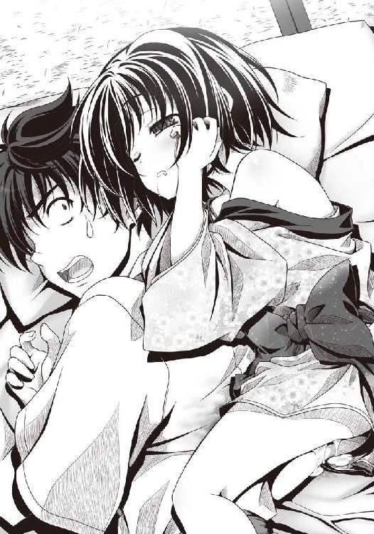
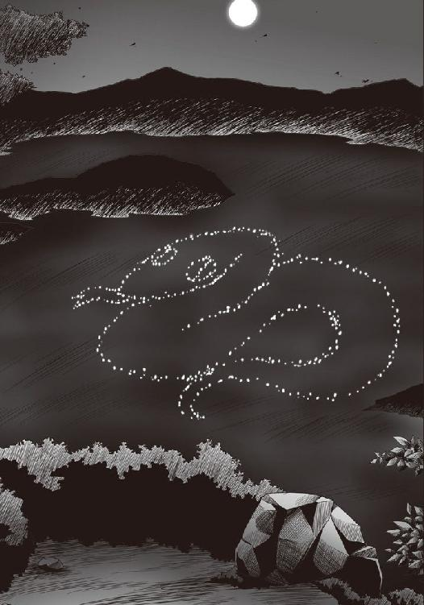

| 織田信奈の野望02 | |
| 春日みかげ | |
| SBクリエイティブ株式会社 (2010) | |


織田信奈の野望2
春日みかげ
本書に掲載されているコンテンツの著作権等の知的財産権およびその他すべての権利は、ソフトバンク クリエイティブ株式会社または正当な権利を有する第三者に帰属します。
本書の内容を権利者の許諾なく複製・複写・翻案・放送・出版・データ配信（送信可能化を含む）などすることはできません。
カバー・口絵 本文イラスト
みやま零
時は戦国。
処は尾張の国、清洲城の城下。
尾張を統べる姫大名・織田信奈は、うつけうつけと囃されていた。
しかしそのうつけぶりは敵を油断させるための擬態であったのか、はたまた実は世間の余人には到底理解できぬ時代を超えた大器姫であったのか、歴史に名高き「桶狭間の戦い」において「人間、二十年、下天の内をくらぶれば」と「敦盛」の一節を舞い踊り、十倍以上の巨大戦力を誇る駿河の大大名、「海道一の弓取り」今川義元の本陣めがけて遮二無二突撃。猛将・柴田勝家を筆頭に家臣団一丸となって、精強誇る今川軍を完膚なきまでに一蹴。上洛途上であった今川義元を組み敷いて降伏せしめ、あっぱれ、天下盗りに名乗りを上げたは尾張のうつけ姫こと織田信奈。
ところが、この信奈、いろいろ思うところあるらしく、意外に吝嗇家。
桶狭間の戦いに勝ったとはいえ、織田家家臣団の暮らしはいっこうに上向かない。
現代日本の高校生だったのが、いかなる理由か突如戦国時代に迷い込み、桶狭間で義元本陣の位置を突き止めるという大功をたてて足軽から侍大将に大出世したはずのわれらが「サル」こと相良良晴も、相も変わらず「うこぎ長屋」で一汁一菜の質素な暮らしに甘んじていた。
季節は夏。
早朝だというのに、せんべい布団の上で目覚めると良晴は寝汗でぐっしょり。
自称ロングスリーパー。せめてあと一時間は寝ていたかった良晴だが、背中が汗でびっしょり濡れている上に妙に生温かく、とうとう目を開いて唸り声をあげた。
「暑いなぁ～。クーラーないのかよ、クーラーは」
「......すぅ、すぅ、すぅ」
目を開くと、天井に家来の忍者・蜂須賀五右衛門がぴたりと張りついたまま眠っていた。
五右衛門は、荒くれ者の川賊集団・川並衆を率いるちんちくりんの少女忍者。舌足らずで、三十文字以上の長台詞をしゃべるとかむという癖を持っている。
五右衛門はちょっとしたなりゆきで良晴の一の家来となっているのだが、いくら「畳の上で寝ろ」と言っても「拙者、天井で十分でござる」と言って聞かない。
「天井で寝るな」と言うと、今度は「それでは土の中で眠るでござる」と言いだし、忍法土遁の術を使って庭に自分を生き埋めにしようとする。
それで良晴は仕方なく、五右衛門に天井で寝ることを許可している、のだが──。
こうして「すぅすぅ」と瞼を閉じたまま天井にくっついている五右衛門を見ると、
（寝ぼけて落ちてこないかな......）
と、気が気でない。
しかし、良晴の安眠を妨げているもう一人の同居人のほうが、もっと問題だった。
信奈から「桶狭間」の恩賞（？）として派遣されてきた、浅野家の娘・ねね。
数えで八つの子供だが、おりこうで口が達者。
信奈は「美少女といちゃいちゃしたい」と言いだした良晴めがけて、このねねを義理の妹としてよこしてきた。しかも、良晴が女の子に手を出さないように見張れ、とねねに言いつけてある。
信奈め、いったい俺にどんな恨みが......と憤る良晴だが、ねねはすっかりやる気で、「兄さまの女癖の悪さを直しますぞ」と小さな鼻を鳴らしながらどこへでもついてくる。
現代から戦国時代に何かの間違いでやってきた良晴、「せっかくの一人暮らしなんだから、女の子とどんどんいちゃいちゃしよう」と気合いを入れていただけに、そんなこまっしゃくれた妹が邪魔で邪魔で仕方がなかった。
それでも、寝ている時だけは年相応にかわいいのだが──。
「......暑い原因がわかった。ねねが、俺の背中にくっついているからだ」
子供は、やたらに体温が高い。
良晴が寝ているうちに、鼻提灯を出しているねねが首に手を回してきて背中にぴとっと張り付いていたために、くっつかれた良晴の体温まで上昇してしまったのだろう。
「......ぐぅ、ぐぅ、ぐぅ。兄さま、女遊びは禁止ですぞ......」
夢の中でまで、良晴の唯一の楽しみを妨害しているようである。
「ええい、離れろ」
「ぐぅぐぅぐぅ」
「......は、外れねぇ......」
それにしても良晴の背中は、ぐっしょり。
汗が、なにやらほかほかと温かい。
（いくらねねが張り付いているとはいえ、ひどい寝汗だな......）
......。
良晴は、気づいてしまった。
あれっ？
もしかして、これは──。
汗では、ない!?
まさか──。
「って、ねねーっ!? お前、おねしょしたなっ？ 俺さまの背中におねしょを──」

ぱちっ！
良晴の背中におぶさっていたねねが、大きな目を開いて、そして、
「......ふ......え？」
寝ぼけながら、丸い指で目をこすりはじめた。
「ふ、え、じゃねえー！ お前、寝ながら俺の背中をおまるか何かと間違えたなっ、またまた漏らしたなっ!?」
「............」
「いいか、ねね。お前、もう八歳だろ。いいかげんにおねしょ癖を治せ！ 寝る前に『暑い暑い』と井戸水をガブ飲みするからこういうことになるんだ。今日という今日は、兄としてみっちりお説教してやるからな──！」
「..................」
『』から始まる日本語って、何かあったっけ、と良晴が首をかしげていると、
「......～～～～！！」
ねねが、大声で泣き出した！
割れ鐘のような声が、良晴の鼓膜を直撃！
「～～！！！！！！」
「おうっ!? なんという音波攻撃っ!?」
「～～～～～～～～！！！！！！！！！」
「ぎゃーっ！ ねね、俺が悪かった！ 許せ！ ちょっと、きつく言いすぎた！」
「......これではおちおち眠れないでござる、相良氏」
天井で目を覚ましてしまった五右衛門が、赤い瞳でギロリと良晴をにらみつけてきた。
忍者たるもの、何日でも眠らずにぶっ続けで活動できる代わりに、ひとたび休息を取ると決めればそれこそ死んだように熟睡し、目覚めると定めた刻限が来るまではたとえ枕元で大砲が轟こうが法螺貝が吹き鳴らされようが容易には目を覚まさぬと言われている。
そんな忍者の五右衛門ですら「うるさいでござる！」と涙目になって起きてしまうくらいに、ねねの放つ音波攻撃は強烈だった。
「ぶ～。ざごだ～！！」
「俺が悪かった！ ねねちゃん、機嫌なおして！ ほらほら、洟をかんで！ 鼻水なんかたらしていると、尾張一の美幼女が台無しだぜっ!?」
「だじ......？ び～」
「うわ～っ！ いったいどうすれば泣き止むんだ～!?」
「忍者刀で喉をかききれば、ぴたりと黙るでござる」
「馬鹿っ死んじゃうだろっ五右衛門っ！ それより布団だ。濡れた布団を庭に干して乾かさないと！」
「あっ、逃げるつもりでござるな相良氏！」
「後を頼む五右衛門！」
「せせせ拙者、子供の扱いは苦手でござる！ ずっこいでごじゃるよ、ちゃがらうぢっ！」
五右衛門がかんだ！ と突っ込んでいる場合ではなかった。
一刻も早く、泣きじゃくるねねの音波攻撃から自由になりたかった。
フリーダム！
良晴は慌てて布団を担いで、庭に飛び出した。
しかし庭では、お隣さんの前田犬千代が、
「......毎朝毎朝、うるさい......」
寝間着の胸元がはだけておへそが丸出しになった姿で、朱槍を担いで突っ立っていた。
胸は蕾のようにちっちゃいとはいえ、前田家当主・前田犬千代利家、そろそろ花も恥じらう可憐な乙女になりつつある年頃であった。
自分では「犬千代はまだ生娘。おぼこい」と謙遜しているが、現代のアキバあたりならそれこそ狂喜乱舞されそうなきわどい姿であった。
良晴は目のやり場に困って、思わず半ば裏返った声をあげた。
「おいっ！ 犬千代っ？ お前、半裸だからっ！ ちゃんと服を着ろっ」
「......むせきにん。良晴が、脱がせたくせに」
「って、何の話っ!?」
犬千代は、寝ぼけている！
しかも、安眠を妨害されたせいか、夢の中で良晴が狼藉でも働いたのか、激怒しているようだった！
「......せきにんを、取らせる」
ぶんッ、と朱槍を突き出されて、あやうく串刺しにされかかる。
「犬千代さああんっ!? 目を覚ましてくださーいっ！」
ブリッジでからくも逃げながら、良晴は思った。
織田家中って、ほんとうに騒がしいなぁ......と。
そんな騒がしい朝を経た良晴と犬千代は、城に出仕する前に清洲の町へとおつかいに出た。
夕べ信奈から、来客を接待するので美味しい「ういろう」と「八丁みそ」と「たまり醬油」を買ってくるように、と言いつけられていたからである。
尾張名物のういろうは、信奈が弟の信澄や小姓の犬千代を餌づけする際にいつも使っているおやつで、ようかんほど甘みがなく、後味もさっぱりしていて、良晴もけっこう気に入っている。
しかし。
「八丁みそと、たまり醬油か......」
清洲の町中を犬千代と並んで歩きながら、良晴は首をかしげていた。
隣の犬千代が、抹茶味のういろうを頰張りながらつぶやく。
「......どちらも美味しい。良晴は、苦手？」
「苦手っつーか、どっちも味が濃いんだよなぁ」
八丁みそは、三河岡崎は八丁村の特産物。見た目からして、ずいぶんと赤いみそである。
味も濃い上に、良晴が親しんできた米みそと比べると甘みが少なく、けっこう苦い。
どういうわけか尾張の人たちは、この八丁みそをいろいろな食材にぶっかけて食べるのが好きらしく、食いしん坊の柴田勝家などはかき氷にまでみそをかけてぱくぱく喰らっている。
良晴は一度「うわ、みそ味のかき氷かよ。気持ち悪いなぁ」とうっかり本音を漏らして、怒った勝家に捕まって首を折られかけた。
たまり醬油は、尾張で流行っている濃ゆ～い味の醬油だ。良晴はお刺身を食べる時くらいにしか使ったことがなかったが、尾張の人たちは何でもかんでもたまり醬油をどぼどぼとぶっかけて食べる。勝家などはかき氷にまでたまり醬油を以下略。
尾張の食卓にのぼる調味料と言えば、八丁みそが七割、たまり醬油が三割である。
清洲に住み着いた良晴は「なんでこいつら、こんなに濃い味が好きなんだ」と辟易しているのだが、どうやらいわゆる普通の「しょうゆ」、つまり「濃口しょうゆ」と「薄口しょうゆ」は、この時代ではまだ発明されていないらしかった。
「このお店がお勧め。安くて新鮮で、味が濃い」
犬千代は、「酢鍵屋」という看板を掲げた店に良晴を案内した。
建物の奥はみそやしょうゆなどを陳列している食料品店で、建物の手前側は甘いおやつやあつあつの麵、さらには最近流行の「茶」を出してくれる茶店というめずらしい形態の店だ。
「安くて新鮮なのはいいけど、味が濃いのかよ？ 俺は、薄口のほうが......」
「......黙って買う」
ぎゅー、と頰をつねられた。
前田犬千代。
小柄だが、指の力は半端なく強かった。
「わかったわかった。でも、どこかで聞いたことのある名前の店だな......」
「酢鍵屋は、尾張中に店舗をたくさん構えている。どの商品も安くて新鮮で味が濃いので、若い町娘たちの社交場」
「なるほど。現代風に言えば、女子高生のたまり場ってわけだな」
犬千代が、店主の瞳をじーっと見つめながら「......」と無言を貫き相手が根負けするのを待つという荒技でおおいに値切ってくれたので、信奈から貰った予算が少し余った。
「まだ時間があるな。茶店でういろうを喰って帰ろうぜ」
「......良晴は、女の子に声をかけるつもり」
「まあまあ。いいから、いいから。白！ 黒！ 抹茶！ あずき！ 桜色！ 五色のういろうをまとめておごってやるぜ！」
「......うぅ。断れない......」
五色まとめて食べられる！ ういろうに目がない犬千代は瞳を潤ませて、「はぁ、ふぅ」と幸せそうなため息をついた。
二人は、茶店の片隅に腰掛けてういろうを頰張りながら、往来を眺めた。
清洲の町は、当主の信奈が東の強敵・今川義元を倒して捕虜にして以来、いよいよ栄えている。
ずっと尾張の人々を悩ませていた今川の脅威が信奈の勝利によって除かれたおかげか、道行く人たちの表情もずいぶんと晴れやかだった。
戦国時代とはいえ、やっぱり平和が一番だなぁ、と良晴はつくづく思う。
信奈が天下を統一すれば、戦乱の世が長く続いているこの日ノ本から戦がなくなり、全国どこの町でもこんなふうに平和を謳歌できるようになるのだ。
「いいねえ、いいねえ。若くて元気な女の子が大勢いるねえ」
「......良晴の隣にも、一人いる」
「え？ 犬千代って元気っ子か？」
「......いちおう。たぶん」
「おっ。あの侍の一行は......？」
良晴が指差した先には、立派な侍の一団がいた。
白馬に乗った黒髪の凛々しい青年武将がおそらくは大将で、その前後に侍っている若侍と少女侍たちがお付きの者なのだろう。
お供の面々も美形と美少女で固められているが、なんといっても大将格の若い侍の目元は涼しく睫は長く肌は白く、それはもう凛々しいこと。
昔話に聞く「牛若丸」こと若き日の源義経とは、このような姿であったろうか。
さっそく町娘たちが周囲に集まって黄色い歓声をあげている。
おかげで、町娘たちは誰も良晴の存在に気づきもしない。
まあ、たとえ気づかれたところで「サルだわ」「信奈さまに飼われているサルが町中に出没しているわ」「ういろうで餌づけしちゃダメ！」と物めずらしそうに騒がれるだけなのだが。
「ちっ。あの白馬の侍、すげぇイケメンだな。男の俺さまの目にも、まるで後光が差しているように見えるぜ」
「......池麵......？ 酢鍵屋の麵は、きしめん」
「頭も切れそうだし、信澄よりもモテそうだ。きぃ、うらやましい！」
「......きしめん」
それにしても、この侍の一団、尾張では見慣れない旗印を掲げている。
亀の甲羅が、三つ重ねられていた。
そして、良晴と犬千代の耳に飛び込んできた、紅顔の若大将とそのお供たちが交わす会話の内容は──。
「若殿。尾張のうつけ姫は、山猿のような格好で町をふらついているそうですよ」
「水もしたたる若殿のお姿を一目見れば、少しは女らしくなるかもしれませんが」
「ふん。織田信奈がどのような娘であろうが、どうでもいい」
涼しい声だった。
しかしその若大将は、まるで信奈に男としての興味を抱いていないようだった。
「若殿の魅力の前には、尾張の山猿もころりと参りましょうな」
「あのうつけ姫と結婚したら、若殿もさぞ苦労するでしょうね」
「政略結婚は戦国の世の習い。女など、いちいち愛さねばよいのだ」
「若殿は、女泣かせですからねぇ。何人の女が捨てられて臍をかんでいることやら」
「戦国で覇を競い合う女など、みな哀れなもの。せいぜい利用させてもらうだけさ」
なんだよ、ムカつく連中だな......と良晴が声を漏らした。
「の、信奈を山猿扱いするのはともかく、女の子全般をバカにするようなあの言いぐさは許せねーな！ の、信奈がバカにされてることは全然どうでもいいんだからなっ！」
目の前を通り過ぎていく一行の旗印を眺めていた犬千代が、目を細めながらぼそりとつぶやく。
「......あれは、『三盛り亀甲』。織田家の侍ではない」
「もしかして、信奈がこれから接待する客なのか？ あんな尊大な連中が？」
「......違うと思う。三河名物の八丁みそをたっぷり準備させたということは、姫さまは眼鏡たぬきを接待するはず」
「眼鏡たぬき？」
眼鏡たぬきとは、三河は岡崎城から清洲へやってきた、松平元康のことだった。
用件は、信奈と不戦同盟を結ぶことである。
松平元康。
後に「徳川家康」という偉そうな名前に改める願望を密かに胸に秘めているこの苦労人の姫大名は、尾張の織田家と駿河の今川家との間に挟まれた三河の小大名・松平家の正統後継者。
しかしながら、幼い頃に今川家へと人質に出されたり、信奈の父・織田信秀にさらわれたり、さらに今川家へ売られたりと、踏んだり蹴ったりな半生を過ごしてきた。
桶狭間の戦いの折には今川義元の忠実なパシリとして織田方を攻めていたのだが、「義元敗れる」の一報を聞くやいなや戦場から逃げ出して岡崎城へと舞い戻り、「義元？ 誰ですかそれ」と言わんばかりにちゃっかり今川家からの独立を宣言。
そのため、尾張と三河の間で立ち往生して駿河へ戻れなくなった今川軍は四散。主君と軍勢をともに欠いた駿河の今川家は、たちまち甲斐の武田信玄に攻め滅ぼされてしまったのだ。
元康はもともと（たぬきを始祖と崇める松平家の伝統で）たぬき耳とたぬき尻尾の飾り物を身につけているのだが、この変わり身の早さで「まさか性格までたぬきだったとは」とささやかれる始末。
ちなみに松平元康、ひどい近眼なので南蛮渡来の眼鏡を愛用している。
何かと着用アイテムの多い姫大名であった。
お昼過ぎ。
清洲城の大広間に、尾張当主の織田信奈、三河の松平元康、接待役を仰せつかった前田犬千代と相良良晴の四人が勢揃いした。
強敵・今川義元を降伏させて破竹の勢い。ご機嫌な信奈は、重要な外交の場だというのに湯帷子を片袖脱いで腰にひょうたんをぶら下げ、肩に種子島を担いだ「うつけ姿」で登場。
斎藤道三との会談で見せたような麗しい姫さま姿を久々に見られると思っていた良晴は少々落胆したが、「べ、別に信奈がどんな格好をしていようが俺には関係ないんだからな！」とツンデレな独り言をつぶやいて内心の落胆をなかったことにする。
そんな良晴を見て見ぬふりしながら、信奈は座布団の上に腰を下ろして元康の肩をぽんぽんと叩いた。
「久しぶりね、竹千代！」
竹千代こと松平元康は、信奈の幼なじみ。
ご機嫌な信奈は大好物の「なごやこーちんのてばさき」をはむはむと丸かじりしながら、上機嫌で元康を出迎えた。
ちなみに信奈独占物の「なごやこーちんのてばさき」、最近になって「小さいてばさきをいちいちかじるのは面倒だわ」という信奈の命令によって鶏の品種改良が進められ、今ではもも肉のフライドチキン並のサイズに大型化している。ということは鶏本体のサイズってまさか牛なみ......と良晴などは密かに恐れている。
信奈のお目付役・丹羽長秀がこの場にいたら、「同盟交渉の場では正装してください。空気が読めていません、八点」と辛い点数をつけるところである。
「、ぶ、ぶ～。゛お久しぶりでず、吉姉ざ゛ま～」
ういろうに八丁みそをたっぷりと塗って食べていた元康が、姉貴分の信奈にぺこりと頭を下げてにっこりと微笑む。
しかし、なぜかその声が妙に乱れ、ちんまりと頭に被っているたぬき耳が「ふるふる」と小刻みに震えていることを良晴は見逃さなかった。
「犬千代。なんで元康はあんなに震えてるんだ？」
「......眼鏡たぬきは織田家に囚われていた頃、来る日も来る日も幼い信奈さまの一の家来としていじめられ......こほん。かわいがられていた」
幼かった信奈さまは眼鏡たぬきをみつけると「たぬき妖怪だー！ たぬき鍋にしてやるー！」と口癖のように仰い、しょっちゅう眼鏡たぬきを縛って木の枝からぶらさげていた......などと、しれっとした顔で説明する犬千代もちょっぴり恐ろしかった。
「めちゃくちゃするなぁ。俺が暮らしていた世界なら、大問題だぜ」
それが信奈さま独特の愛情表現、気に入った家来にはどうぶつの名前をつけてくださる、とうなずく犬千代。
「つまり元康は織田家に誘拐されたあげく、ガキんちょ信奈のパシリをやらされていたのか。絵に描いたような不幸体験だなあ」
「......たぶんその頃の恐怖を、体が覚えている。だから、うちの姫には逆らえない」
良晴は、元康にちょっぴり同情した。
「竹千代。わたしの小姓と飼いザルを紹介するわ。こっちの子犬のようにかわいい女の子が前田犬千代で、いけすかない目つきの悪い生意気なサルのほうが自称・相良良晴。頭の打ち所が悪かったらしく自分を人間だと思い込んでいるけど、遠慮なくサルと呼んでいいわよ！」
「そうですか～。私は松平元康、あだ名は竹千代です～。よろしくです～」
一瞬、良晴と目を合わせた元康の視線が泳いだような気がしたが、良晴は気づかないふりをして「あ、どうも」と頭を下げた。
良晴が現代日本からこの戦国時代にやってきた時、たまたま織田軍と今川軍が戦う戦場に良晴は転がり落ちていた。その際、今川義元の命令を受けた元康にそっ首を落とされそうになったことがある。
だが、その時の良晴は正体不明の謎の雑兵だったし、久々に良晴と再会した元康は良晴の顔を覚えていないようだった。
まあ、仮に覚えていたとしても都合が悪いので知らぬふりをするのが元康かもしれないのだが。
続いて、犬千代が小さく頭を下げる。
「......前田、犬千代」
「犬千代さんは覚えています～。私が吉姉さま（信奈の幼名）の手で縛り上げられてあやうくたぬき鍋にされかけると、いつも私をこっそり川に突き落として助けてくださいました～」
「......犬千代は、親切」
もうちょっと穏便な助け方はなかったのか、と良晴は思った。
「吉姉さまのおかげで、私は三河で独立できました～。これからは尾張と同盟し、吉姉さまの妹分として末永く仲良くしていこうと思います～。っていうか、恐くて逆らえません～」
独立したとはいえ、三河は相変わらずの弱小国。
しかもすぐ東には、今川義元の旧領・駿河を飲み込んでさらに強大になった武田信玄の大軍団が控えている。
「甲斐の虎」武田信玄は、「越後の龍」上杉謙信と並んで最強と称される戦国武将。
その赤備えの甲州騎馬軍団には、神がかりとも軍神とも呼ばれる戦上手の上杉謙信を除いては、誰一人太刀打ちできないのだという。
もちろん、武田信玄は弱小・三河の松平家を「今川のパシリ」ぐらいにしか思っておらず、武田への従属を誓うというのならともかく、元康と対等な同盟を結ぶつもりなどはないのだった。
だから元康としては信奈と同盟する以外に、三河の独立を保つ術はないのだ。
天下統一を目指す信奈のほうも、三河を対武田の防壁として利用し、そのすきに西へ──美濃を奪って京の都へ進軍しようという計画なのだ。天険の要害・稲葉山城を擁する美濃は強国で、信奈に東側の戦線を構える余裕はない。
それに──。
三河が味方陣営にいてくれると、尾張の人間ならみんな大好きな「八丁みそ」を安値で調達しやすくなる！
幼なじみの二人は、もともと仲が良いだけでなく、戦国大名としての利害も一致していたわけだ。
もっとも、互いに一国の主という立場である。
多少の意見の相違は、当然ながら存在した。
「竹千代。三河全土をあんたに支配させてあげてもいいわ。ただし、八丁村だけわたしに譲ってくれない？」
「き、吉姉さま～。八丁村を取られたら、三河特産の『八丁みそ』を作れません～。三河の経済は、八丁みそだけで持ってますというのにぃ～」
「だから、わたしにくれって言ってるんじゃないの」
いったいどこから「だから」なんて言葉が出てくるんだよ、信奈って基本的に厚かましいよな......と良晴が犬千代に耳打ち。
「そそそれだけは～。八丁みそなしには、家臣たちを食べさせていけませ～ん！」
「......わかったわよ。ただし、尾張の商人には八丁みそを安値で売るようにね。今後は、尾張との境にある関所で八丁みそに関銭をかけちゃダメよ！」
関銭、つまり関税を撤廃して八丁みそを安い値段で尾張に輸入させろ、という意味である。
「ふぁい～。八丁村を取り上げられないのでしたら～」
かなり強引な交渉だったが、八丁みその値段が安くなった！ というだけで信奈はひとまず満足したらしい。
なにしろ、何にでも八丁みそをかけて喰う勝家に代表されるように、尾張人のみそ好きは凄まじいのだ。
これで軍兵の食費にかかる予算を削減できるわ、とご満悦。
こうして──。
東は元康が受け持ち、西は信奈が受け持つということで、ここに尾張と三河の同盟締結はとんとん拍子で成った。
信奈はお気に入りのジャンボ「てばさき」をくちゃくちゃと頰張りながら、「いよいよ時が来たわ」とばかりに微笑んだ。
「これで、犬とサルとたぬきが揃ったわね！ 美濃の鬼退治へ向かう準備は完了よ！」
瞳をきらきらと輝かせながら、元気いっぱいにそう宣言する信奈。
「ねぇ聞いてる、サル？ 東国は竹千代に任せて、わたしたちは全軍で美濃を攻め取り、そして京へ向かうのよ！ これでいよいよわたしの天下盗りも見えてきたわ！」
ちっ、いくらにこやかに微笑んでみせたって信奈なんてちっともかわいくなんかないんだからな！ と心中で毒舌を吐きつつ、良晴がさりげなく突っ込む。
「待て待て。桃太郎の鬼退治伝説では家来として犬とサルと、そしてキジが必要なんじゃないのか？」
「うるさいわね。キジもたぬきも似たようなものじゃない」
信奈が、淡い色の唇をとがらせて良晴をにらむ。
こうしてすねたように不機嫌になってみせる信奈姫の仕草もどこか愛らしい、などという犬千代の寸評を良晴は認めない。
良晴曰く、信奈は「自分のものは自分のもの、家来のものも自分のもの」と思い込んでいる手に負えないガキ大将である。
「だいたい、あんた家臣のくせに偉そうなのよ。なんでわたしにタメ口きいてるのよ」
「そっちこそ、もっといい恩賞をよこせ。誰のおかげで桶狭間で勝てたと思ってるんだ？ さっさと、尾張一の美少女を俺に紹介しろ」
「ハァ？ 天下一の美少女があんたの目の前に座っているじゃない。これ以上、誰を紹介しろって言うのよ？」
「うるせぇ。お前は顔だけだ、顔だけ！ 俺の審美眼は厳しいんだ。外見だけじゃなく、心根も美しくないとダメなんだよ」
「あら、わたしは顔だけじゃないわよ。脱いでも凄いんだから。疑うのなら、見せてあげよっか？」
ちらり、と胸を覆う見せブラ（？）を指で外しにかかる信奈。
小ぶりだが、形のいい白い胸が一瞬、露わになりかかった。
「げほげほげほっ!?」
良晴は、思わずむせかえった。
しかしもちろん信奈がほんとうに見せブラを外してくれるはずもなく、指を差されて大笑いされてしまった。
「あーはははは！ バッカねえ、冗談なのに真っ赤に照れちゃって！ この信奈さまが、家来のサルなんかに肌を見せてあげるわけないでしょう！ バッカねえ～！ 打ち首にしたくなっちゃうくらいにバカなんだから！」
「う、う、うるせえ！ もうお年頃なんだから、そういうきわどい冗談はやめろっ！ 恥ずかしくねーのかよっ？」
「ふーんだ。人間の殿方に肌を見られるのは恥ずかしいけれど、雄とはいえサルなんかに見られても別に恥ずかしくないわね。しょせんは異種生物でしょう？」
「ああそうかい。じゃあ、もっと見せろ！ その見せブラを外してやる！ だいたい、どうして戦国時代の人間がブラジャーみたいな布を胸につけてるんだよっ？」
「ちょちょちょちょっと、何すんのよっ！ さささサルっ、何よそのいやらしい手つきはっ？調子に乗るんじゃないわよっ!?」
「うるせー！ お前がねねをそそのかして俺さまにいつまでも彼女を作らせねーから、最近の俺はもうれつに欲求不満なんだー！」
「ちょ。待ちなさいよ!? なによ、ほんとにサルになっちゃったのっ？」
「そうとも、俺はサルだ！ 女日照り続きで、身も心もサルになったんだー！ ウッキー、ウッキー、ウッキッキー！」
「ひっ!? ──犬千代っ！」
「......良晴、そろそろ黙る」
ぎゅ～～～。
照れ隠しなのか、それともほんとうに信奈の白い胸元に興奮して我を失ったのか、主の信奈に襲いかかろうとした良晴。しかし、犬千代の指に臑をつねられると同時に「いてえええええええ～」と悲鳴をあげてひっくり返った。
さらに、怒りに髪の毛を逆立てた信奈が良晴の側頭部めがけて勢いよく足を振り下ろしてくる。
「この、バカザル～！ 二度と主においたできないよう、お仕置きしてやるんだからっ」
「待て、待て待て！ 足を振り上げるな、見えるぞ！」
「きぃ～！ どこ見てるのよ、まだお仕置きが足りないようねっ！ この変態！ エロザルっ！」
「だから、待てとゆーにっ！」
同盟会議そっちのけで、いつ果てるともなく畳の上で繰り広げられる主従の攻防。
元康は呆れたように、
「あの～。この二人、いつもこんな調子なんですか～？」
と、犬千代におそるおそる尋ねた。
「......そう。犬も食わない大ゲンカ。清洲城の、名物」
「おサルさん、すごい度胸です～。吉姉さまをあんなに怒らせて、よく首が飛びませんね～」
「......じゃれあってるだけ。仲良し」
「あなどれませんね～、相良サル晴～」
松平元康の頭脳にはじめて、「相良サル晴」の名が刻み込まれた瞬間であった。
さて、表向きは幼なじみの仲良し二人、その実は限りなくご主人さまと家来のたぬきという関係に近い〈清洲同盟〉がめでたく成立したその日その時、信奈の意表を突く訪問者が清洲城の門を叩いていた。
それは誰あろう、先刻茶店「酢鍵屋」の前を通りかかったあのいけすかない貴公子とその家来たちであった。
急な客人に会うことなどめずらしい信奈だったが、顔色を変えた小姓があわてて取り次いできて、その訪問者の名を信奈に告げたために、
「今すぐ、ここに通しなさい」
と大きな瞳をくりくり動かし、心無しか動揺しながらそう言った。
まだ大広間には〈犬・サル・たぬき〉の三人衆、犬千代と良晴と元康がいるというのに、不意を衝かれた信奈は三人を下げることも忘れて新たな客人を招き入れた。
そして、その突然の訪問者が単身、大広間に姿を現した。
この戦国時代では比較的大柄な部類に属する良晴よりも頭ひとつ抜けて背が高く、長く伸ばした黒髪と睫が女の子たちの目をひく色白の美少年侍である。
うっかり美しい女と見まがうばかりのその見事なまでの美少年っぷりに、おおー、と元康＆犬千代の動物コンビが思わず歓声を上げた。
しかし、この男が道々家臣たちを相手に信奈を軽く見てバカにするかのような発言をしていたことを、実はこうみえても主君想いの良晴は忘れていない。
「誰だよ、お前」
思わず口に出していた。
「これは失礼。私の名は、浅井長政。近江は小谷城より、はるばるやってきました」
涼やかな声で、つややかな黒髪の美少年侍──浅井長政が自己紹介した。
そのまま、信奈の正面にすっ......と優雅に正座して、礼儀正しく頭を下げる。
「織田信奈どのに一目お会いしたく、無礼は承知の上で身分を偽って尾張へ入り、清洲城まで参上つかまつりました」
完璧なまでの礼儀作法を身につけているあたりは、さすがは京に近い畿内の大名といったところか。その一挙一動がいちいち優雅で、信奈に向けて「私は美形の貴公子にございます」と全身で主張しているかのように見えて良晴はどういうわけか気が気でない。
「きぃ、なんて余裕ぶった野郎なんだ。無駄に劣等感を刺激される」
「んもう、静かにしていなさいよサル。浅井長政といえば、若くして北近江一帯を支配する有名な戦国大名じゃない。そして、ちょうどこれから同盟を申し込もうとしていた相手だわ」
おぅ、そうだった。
浅井長政──。
良晴が戦国ゲームによって得た知識では、この浅井長政こそは畿内（関西地方）の経済大国・近江の北半分を支配する戦国大名・浅井氏の若き当主。
良晴が（戦国ゲームをプレイしているうちに）覚えたところでは、織田信長は美濃を奪って京へ向かう際、この浅井長政と同盟を結び盟友となるのだ。
なぜなら、京への通り道に当たる北近江を味方にしておかなければ、美濃から京へと軍勢を進めることができないからだ。
しかし、（浅井長政って、のちのち織田を裏切る男じゃなかったか？）と戦国ゲーム仕込みの知識を振り絞った良晴は、いよいよ目の前で涼やかに笑っている美少年貴公子・浅井長政が信用ならない。
町の茶店で偶然耳にした、長政の信奈評──。
（戦国で覇を競い合う女など、みな哀れなもの。せいぜい利用させてもらうだけさ）
今こうして優雅に微笑んでいる貴公子然とした長政の口から飛び出した言葉とは、到底信じがたかった。
（つまりは、裏表がある男だ。たぬきっぽいけど信奈を本気で姉と慕っている元康と違って、長政は信奈を政治に利用できる駒としか考えていない）
そう思うと、信奈にこいつを余り近づけないほうがいい、と心の中で警戒したくもなる。
半ばはほんとうに信奈を心配していて、半ばは長政へのやっかみだが、良晴自身は気づいていない。
「何をぼーっとしてるのよサル。これで、心置きなく美濃攻めができるのよ？ おめでたいと喜びなさいよ」
「そうか。近江は美濃の西に隣接している国だ──いよいよ〈美濃の鬼退治〉に必要なキジが自分からやってきた、ということか？」
「ええ、そういうことね」
信奈どの、私はキジではありません、と浅井長政が涼しげな声でやんわりと釘を刺した。
そして、自分の胸に手を押し当てながら、信奈を優しげな視線で射すくめる。
「私の幼名にしてあだ名は、〝猿夜叉丸〟と申します。信奈どの。これからは私のことを、お気軽に〝サル〟とお呼びください」
がばっ！
良晴が跳び上がって、浅井長政に抗議した。
「ちょっと待て！ キャラが被ってる！ サルは、俺！」
日頃、信奈に「サル」と呼ばれるたびに「俺は人間だ！」と怒りだすわりには、いざニセモノが現れるとそれはそれで納得いかない良晴だった。
「はて。面白いことを言われる御仁だ。私は、伽羅をかぶってなどおりません。本日、身につけております香りは白檀」
「ああ。その癇癪ザルは気にしないでちょうだい、長政どの。餌に中って頭が弱っているところなのよ」
「御意」
なにが白檀だよいちいちキザな野郎だ、と良晴は長政をにらみつける。
長政は「ふん」と鼻先で良晴を笑い飛ばし、興味なさげに顔を背けた。
「で、今日はわたしに何の用なのかしら？ 直接清洲まで来たということは、よほどの重大事を持ちかけるつもりなのでしょう？」
「いかにも。東の脅威・今川義元を除かれた信奈どのが、いよいよ義父・斎藤道三のかつての居城、稲葉山城を攻め盗ろうとなされることは誰の目にも明らか」
「もちろんよ」
「その後は、やはり京へのご上洛を考えておられるのでしょうね」
「ええ。美濃を盗ったらすみやかに上洛して、天下に号令を下すの。今さら、わたしの野望を隠すつもりはないわ」
くすり、と長政が笑みを漏らした。
何をやらせてもいちいち格好いいのが、いよいよもって良晴のかんにさわる。
この男、信奈さまを見つめるたびに目から〝男前光線〟を放っている......と犬千代。
「さても剛気な姫君だ。となれば、近江の北半国を領するこの私、猿夜叉丸と不戦同盟を結んでおきたくなるのも必定」
「あら、近江を踏みつぶすつもりかもしれないわよ？」
「南近江を支配する六角家はともかく、わが浅井家は天険の要害・小谷城を擁し、私に家督を譲った父・久政も健在にて家臣団の結束は強く、そのうえ近江兵は精強。もしも敵に回せば、ご上洛の計画実現が大幅に遅れましょう。まして、万一にも美濃の斎藤義龍と私が結べば、美濃攻略もままなりません。ゆえに、信奈どのは何がなんでも私を味方につけようと考えておられるはず」
ふふん、と信奈が微笑んだ。
頭の回転が速い信奈には、自分同様に頭が良い武将を好む癖がある。いちいちわかりきったことを説明しないで済む分、話が早いからだ。
「その通りよ、いずれこちらから同盟を申し込むつもりだったわ。そちらも南近江の六角家とは長年の敵対関係。あんたも、幼い頃には六角の人質になっていた時代があったそうね。わたしの手を借りてでも六角を叩き潰したいところでしょう？」
「ええ、その通りです。それゆえ、こうして直接清洲まで参りました」
くそっこの二人、けっこう話が合ってるぜ、なんだかわからないが腹が立つ、と歯がみする良晴。
見苦しいから静かにする、と犬千代に臑をつねられてしぶしぶ沈黙。
「デアルカ。長政！ わたしのもとへ来たということは、そちらにも織田家と同盟を結ぶつもりがあるということね？」
「ところがわが父・久政は新興勢力の織田家よりも、古くから付き合いが深い越前の朝倉家との友好関係を続けたいとの由。その上、近江を奪い合う仇敵・六角家を滅ぼす気概もわが父にはなし」
「ふうん。ずいぶんと出来の悪い父君を持ったわね」
先代・浅井久政の時代、浅井家は南近江の六角家に臣従させられていた。六角での人質時代を経て家督を継いだ戦上手の長政が六角と手を切って再び独立した、と犬千代が良晴に小声で解説する。
「すでに浅井家の当主はこの私、猿夜叉丸。小谷の城で茶会や連歌に興じて無為に歳月を過ごすには、私はまだ若すぎます。組むならば老いたるかつての名門よりも、天下盗りの野望を隠さぬ若き英雄と。以前よりそう考えておりました」
「つまりは長政、あんたも私の天下盗りに協力してくれるってわけ？ そこの竹千代のように」
きらり、と長政が切れ長の目を光らせて、言った。
「あなたに噓は通じない。正直に申し上げましょう。私は、信奈どのに協力したいわけではありません」
「ふん。じゃあ、どうしたいの？」
「ともに轡を並べて天下を盗ろう、と持ちかけに来たのですよ」
「同じことでしょう？」
「いいえ。あくまでも、〝ともに〟天下を目指すのです。信奈どの──私は、あなたをわが妻としてもらい受けにまいりました」
「「ぶはっ！！！！！」」
信奈と良晴が口に含んだ熱いお茶を互いの顔にぶっかけたのが、ほとんど同時だった。
さすがの信奈も、顔を赤くしたり青くしたりの、大パニック。
男から求婚されるなど、生まれて初めての経験だった。
思わず立ち上がったり、（はしたないかしら）と柄にもないことを考えて今度は正座で座り直したり、湯帷子の片袖を上げて今さら見せブラを隠そうとしたり。
「けけけけけ、結婚ってこと？ それって、わたしに求婚してるってことっ!?」
「ええ、その通りです。尾張と近江を代表する美男美女の夫婦になりましょう。しかも、互いに天下盗りの野望を抱いている。これほど似合いの夫婦はおりますまい」
「そそそそんなこと、いいいいいきなり言われても、ここここ困るのよっ！」
ちらり、と良晴のほうに視線を送りながら、信奈が裏返った声で悲鳴をあげた。
指先は畳にぎゅっと押しつけられて、そして「の」の字をかきかきと書きまくっている。
犬千代と元康が、（......たいへん......）（びっくりです～）と顔を寄せてひそひそ話。
「そそそそれって、わわわ私に惚れたってことなの、長政っ？」
「いえ。惚れたはれたは、庶民の言うこと。私は浅井家当主、あなたも織田家当主。かほどの大身に生まれついた以上、愛なき政略結婚は世の習いですよ」
イケメンの口から放たれる、突き放したようなクールな言葉が、かえって乙女の心をくすぐりまくる、と良晴はさらに身もだえする。
「わわわわたしは、そのっ、政略結婚とかそういうのはっ......」
「これは、切れ者の信奈どもとも思えぬご発言。お互いにもう、子供でもあるまいし」
「わたしはっ！ 旦那様にする男はっ！ 自分で選びたいのっ！ 自分が好きになった男の人と結婚するのっ！ それがわたしの夢よっ！」
「ほう。それでは信奈どのには、すでにどなたか心に定められた殿方が？」
あたふたと慌てる信奈に対して、長政は女の子を口説き慣れてるのか、いたって涼しい表情。余裕しゃくしゃく。
「たとえば、そこでもがいているもう一匹のサルどのにほれておられるのかな？」
かあああっ、と信奈の全身が真っ赤にゆであがった。
「ちっ......違うっ！ こっ、こいつはただの家来だからっ！ 主と足軽あがりの家臣の間で結婚とか、そんなのあり得ないんだからっ！ ぜんぜん、ほんとに、こんな奴どーでもいいんだからっ！」
なぜか畳をがりがりと爪でかきむしっている良晴の頭をげしげしと蹴りつけながら、信奈が素っ頓狂な大声で喚き散らした。
「いてえな、何すんだよっ!?」
良晴、これにはカチンと来た。
「別に愛なんてないんですけどね」と平然と言い放つような男にちょっと求婚されたくらいで大照れに照れて慌てふためく信奈など、見たくはなかったのだ。
「男前に求婚されたくらいで暴れるなよ、モテない女なのがバレバレだぜ！」
「ああああんたこそ、黙って見ていないでなんとか言いなさいよっ！ 主の貞操の危機でしょっ!?」
「ふんっ。しょせん足軽あがりの俺さまが口出しできる問題じゃねーからなっ！」
「なによっ、反対しなさいよっ！ あんたほんとは焦ってるんでしょっ!? それとも、こんな水もしたたる男前を相手にしてはかなわないから逃げだそうとか、そーゆー情けないことを考える男だったわけっ？」
「は、はんっ！ なんのこったい!? なんで、この相良良晴さまが逃げ出さなきゃならねーんだっ？ そもそも、何がかなわなくて何から逃げるんだよっ？」
「だ、だからあっ、あんたが喉から手が出るほどに欲しがってる天下一の美少女が、この浅井長政に横からかっさらわれかけてるのよっ？ 黙って見ちゃおれないでしょっ？」
夏の暑さも手伝ったか、長政が物めずらしそうに見ていることも忘れて、二人の口ゲンカはぐんぐんヒートアップ。
「待てよ、おい。誰が天下一の美少女だって？」
「わたしよ！ わたしに決まってるじゃないのっ！」
「はぁ～？ だいたい、足軽あがりでサルの家臣なんぞ、ぜんぜんほんとにどーでもいいんだろっ？ 自分のこと〝天下一の美少女〟だなどと本気で言い放てるほどに気位の高い姫さまなんだから、それらしい相手と結婚すりゃいいんじゃねーか？」
「なっ......何よっ、かわいくないわねえ！ 素直に『信奈さまが他の男と結婚なんて......やだやだやだ！』と泣いてじたばたしなさいよっ！」
「なんだよそれ!? 誰がそんな真似するかっ！」
「しろっ！ しなさいよっ！ 額を畳にこすりつけるくらいに土下座して、それだけはご勘弁ください、とお願いしなさいよ！ さもないと、長政と結婚するわよ！」
「はんっ！ べべべ別に、どどど、どーでもいいぜ！ 好きでもなんでもねえって公言している男にころりとたぶらかされたとしても、要はお前がバカ女だったってことだろーが！」
「せせせ政略結婚は戦国の世の習いなのっ！ わたしは一国の大名よ！ 惚れたはれたで誰かと結ばれるような気楽な身分じゃないのっ！」
「ああもう。みっともねえんだよ、うろたえるなよっ！ それでも天下の織田信奈かよっ」
いずれ浅井長政は同盟を破り、織田家を裏切るはずだった。
しかし、良晴が戦国ゲームで覚えた〝未来〟の知識を信奈に教えることは堅く禁じられているのだ。
それだけに、良晴はもどかしい。
理由を告げずに「やめろ長政とは結婚するな」と言えば、身分もわきまえずに嫉妬していると解釈されて信奈を調子づかせるし、いや実際に激しく嫉妬しているのだが良晴自身はそんな自分の分不相応な気持ちを認めたくない。
そもそも、信奈は主君、自分は家臣ではないか。
「ああそうっ！ そうなのっ！ あんた、わたしがねねを妹として送り込んであげた意味がぜんぜんわかってないようねっ！」
「よくわかってらあ！ 独り身の俺を女日照りにして苦しめるためだろーがっ！ お前はそーゆー女だ！ いやっ！ 女の子の皮をかぶった、鬼だ！」
「......そ、そうよ、その通りよっ！ わ、わ、わかってるじゃないのっ！」
「ふんっ！」
「ふーんだっ！」
そこからは、互いに「きーっ」と歯をむき出し合ってのつかみあいになった。
近江の貴公子・浅井長政が目の前に座っているというのに、前代未聞の大げんか。
犬千代が仕方なく、
「......こうなったら、姫さまが良晴を打ち倒すまで戦いは終わらない。お返事は、またいずれ、こちらから」
と長政に切りだし、そして長政もさわやかに了承した。
「お年頃の姫さまに突然求婚したのは、私の勇み足だったようです。しばし時間が必要でしょう、よいお返事をお待ちしています」
「......待たせる」
「そうそう、犬どの。失礼ながら、美濃の攻略には手間取りましょう。大切な未来の妻のためです、私でよければいつでも喜んで兵を貸しますよ」
女とみまがうばかりの美貌といきなりの求婚、しかも「愛などない。政略結婚です」と冷たく言い切るという大胆な行動で、すでに色恋にうとい小娘・信奈の心はがっちりつかんだ。
まるでそういわんばかりの余裕の笑みを口元に浮かべながら、浅井長政は清洲城を後にした。
暴れる良晴を徹底的に打ちのめしているうちに、かんじんの長政が帰ってしまっていた。
そのことに気づいた信奈は「サル、あんたのせいよ！ 話がこじれたらどーすんのよっ」とぷりぷり怒りだし、頰を膨らませたまま寝室へと引っ込んでしまった。
そんな信奈の後を、慌てて犬千代が追いかけていく。
......。
広間に残された元康は、精根尽きて屍のように動かない良晴の頭をつんつんと指で突きながら、こうつぶやいた。
「サル晴さん、サル晴さん。生きてますか～？」
うつぶせに倒れていた良晴は、かろうじて半身を起こすと、首を縦に振った。
「......どうにか、な」
「よくぞ、吉姉さまとの漫才であの場をごまかしてくださいました～」
「あの場を、ごまかす？ せっかくの縁談交渉を、めちゃくちゃにしちまったような......」
にんまり、と元康が口元にたぬきっぽい笑みを浮かべた。
「吉姉さまは、いずれ上洛のために通り道となる近江の浅井と同盟するおつもり。しかし今浅井と同盟を結べば、国力の強い浅井家のほうが格上になっちゃいます。しかも、浅井家はわざわざ織田と結ばなくてもやっていけるのに対しまして、京を目指す吉姉さまには浅井との同盟が必須です」
「ああ。だから、長政も信奈に『自分の嫁になれ』などと居丈高に言いだせるんだろ？ 信奈は断れないだろうからな」
「今結婚すれば、吉姉さまは今後もずっと長政の下風に立たされます～。しかし美濃を併合できれば、国力の上で吉姉さまのほうが圧倒的に有利になります。そうなれば、仮に結婚しても立場は上ですし、長政と結婚せずに同盟を結ぶことだって可能になるはずです～」
「なるほどな」
「ですから、長政の手を借りず独力で美濃を盗るまで、吉姉さまは返事を引き延ばしたかったのです～」
それでいきなり俺にかみついてきやがったのか、と良晴。
「それならそうと、俺に目で合図でも送ればいいのに」
「途中から、すっかり本気になって怒っていました～」
「どうしてあいつは、俺の顔を見るたびにいちいち怒り出すんだ？」
元康が、こくり、と小さくうなずく。
「幼なじみの私にはなんとなく察しが付いていますが、サル晴さんにはお教えできません～」
「なんでだよっ!?」
「それは秘密です。いざという時の切り札になるやもしれぬ情報ですもの。ふ、ふ、ふ～」
元康ってやっぱり腹黒たぬきだなあ、と良晴は思った。
元康と別れた後、良晴は全速力で走って城を出て、清洲の町を後にしようとしていた浅井長政主従を追いかけた。
余裕しゃくしゃくで信奈を口説いていたいけすかない長政に、せめて一言くらい言ってやりたかったのだ。
「やいこらっ！ 待ちやがれっ！」
若殿、斬り捨てましょうか、と長政の家来たちが殺気だった。
しかし、長政は馬上で涼しい顔。
「もうひとりのサルか。この猿夜叉丸に、何か言いたいことでも？」
「......くっ......！ あのなぁ、信奈はああ見えても恋とかそーゆー道には全然うぶなんだよ！別に好きじゃないけど自分と政略結婚しろ、なんて言われたら混乱するに決まってるだろうが！」
「やれやれ。私にやっかみかい？ 家臣にすぎない君が、いくら彼女を想っても結ばれるわけもなかろうに」
「そそそ、そういうんじゃねえよっ！ せめて......せめて、好きです、くらい言えないのかよっ!? 信奈に失礼だろうがっ！」
「そんな噓をつくほうが、よほど彼女に対する礼を失することになると思うがね。戦国大名の家に生まれついた以上、彼女だってほんとうに好きな男となど結ばれるはずがない、とあきらめているさ」
「なんだって!?」
「信奈どのも言っていただろう。それが戦国の世の習いなのだよ、サル面冠者くん。大名ともなれば、家同士の利害関係が何よりも最優先。色恋で婿を選ぶなどは足軽ふぜいのやること。ましてや天下の統一という果てしない野望に憑かれた信奈どのに、女としての幸せなどつかめようはずもない」
「そんな。そんなはずは──」
「やれやれ。君はどうにも子供だ。惚れたはれたは、『家』を背負わぬ庶民のやること。自ら家督を継いで姫大名となった時から、信奈どのは女としての幸せなどとっくに放棄しているんだ。それが、この世の常識なんだよ」
長政は、馬上から良晴を見下すように、冷徹に言い放った。
サル面冠者くん。
二兎を追う者は一兎をも得ず、というだろう。
信奈どのは利口者、そのくらいの計算も覚悟もとっくにできているよ。
心の中では、私と祝言を挙げるしかない、とすでに結論を出しているはず。
「つまりは、彼女が君とどつき漫才をして遊んでいられるのも、あとわずかというわけだ。たかが侍大将にすぎぬ君には、どうすることもできない。せいぜい一刻でも長く、サル面冠者を演じて姫を喜ばせてあげることだな──」
「て、て、て、てめえ......！ そ、そ、そこまでわかっていて......の、信奈に『愛はないが政略結婚しよう』なんて言い放って......な、な、なんとも、思わないのかよっ!?」
「最初から突き放してやったほうがいい。もしも信奈どのが、天下を望みながら恋にも生きようなどと甘い夢を見ているのであれば、早くあきらめさせてやったほうがいい。それが、大人の優しさだよ。中途半端にかないもせぬ噓っぱちの夢を見せてやろうとするなど、私にはできないし、するつもりもないね」
「う、うるせえ！ お、俺はなぁ！ 信奈の夢をかなえてやると誓ったんだ！ あいつが天下も恋もどっちもあきらめないって言うのなら、俺は──天下も恋も、どっちもあいつの手に入れさせてやるんだっ！ せめて、せめてお前が信奈を心から愛すると約束すれば──！」
「悪いが、私は信奈どのを愛していないし、今後も、愛さない。なぜならこの私も、天下を望む野望に憑かれた者だからな──が、信奈どのの心を籠絡する術くらいは心得ている。これからあの姫にはせいぜい私のために諸国を切り取り続けてもらうさ」
「......て......てめえっ......！」
馬上の長政に殴りかかろうとした良晴を、長政の取り巻きの家来たちがいっせいに押し包んで、往来の真ん中へと蹴り倒した。
「君は、まるでガキだ」
長政の良晴を見つめる視線が、急に厳しいものになった。
「まさか、本気であの姫と君が結ばれる可能性があるとでも思っているのか？」
「そ、そんなこと、考えてねーよっ！ お、俺が言っているのはだなっ、あくまでも......」
「尾張の相良良晴といえば氏素性も知れぬ風来坊と聞く。そんな君が由緒正しい織田家の姫君を嫁にできるはずがなかろう。そんなことになれば、多くの家臣団も領民も、そして世間の声も、信奈どのを『ほんもののうつけ』と見放すだろう。それこそ、信奈どのの身の破滅となるぞ」
長政の言葉は、圧倒的に、正しい。
しかし、それでもなお、許せなかった。
（君は決して彼女とは結ばれない）という長政の言葉に自分が言いしれぬほどの衝撃と悲しみを感じたという事実を、良晴は認めたくなかった。
夕刻、泥だらけになったまま良晴はうこぎ長屋へ戻り、お隣の犬千代の部屋にあがりこむと信奈のその後の様子を尋ねた。
しかし、
「......ふぅ、はぁ」
と犬千代はため息をつくばかり。
「悩み事でもあるのか、犬千代？ それとも、ういろうのことを考えてたか？」
「......今のは、姫さまの物まね」
「似てねぇなあ」
「......むっ」
犬千代が指を突き出して臑をつねりに来たので、良晴は素早く身をかわした。
ごろごろと畳の上を転がって、腹ばいのまま安全地帯を確保する。
犬千代は追撃をあきらめて、うこぎ汁を煮始めた。
「......姫さまは、浅井長政と結婚するか否か、とてもとても迷っている」
「信奈自身の気持ちはどうなんだよ。長政に惚れたりしてんのかよ？」
「......姫さまは、ご自分の恋の話については何も語られない。だから、どういうお気持ちなのかはよくわからない」
「長年信奈の小姓をやってるお前だ、予想くらいはつくだろ？」
「......良晴にはこの件について何も語るな、と言われている」
「なんだよおおおおおおっ!? 俺を無視すんのかよおおおおっ、あんの女かわいくねえっ」
ごろごろごろ！
腹立ち紛れに犬千代の部屋の畳を転がりまくった良晴。
玄関から上がり込んできた狒狒ジジイに、ぐいと腹を踏みつけられてやっと停止した。
「おうっ!? いてえじゃねえか、爺！」
「ふぉっふぉっふぉっ。たかが男一人が紛れ込んできたくらいで、そなたらしゅうもないのぅ。小僧」
今は信奈のもとに身を寄せた隠居爺さんではあるが、かつては美濃一国を有していた〝蝮〟こと斎藤道三だった。
「お嬢ちゃん。ちょっくらお邪魔するぞえ」
「......構わない」
一代の策士・道三は油売りから身を起こし、美濃一国を切り取った戦国大名。
しかし老齢には勝てず義理の息子・斎藤義龍との戦さに敗れて美濃を失い、尾張に亡命した。今は「天下を盗り、戦乱の日ノ本を再び統一する」という夢を義娘の信奈に託して自らは政治に口を挟まず、毎日茶会に興じていた。
なにしろかつては織田家と戦い続け〝美濃の蝮〟と恐れられた梟雄だけに、尾張家中ではひときわ身を慎まなければならない立場なのだ。
その道三がうこぎ長屋に姿を現したのは、これが初めてだった。
「ここに来るとは何かよほどの用があるんだな、爺さん」
良晴が、正座して道三の前へと身を乗りだす。
犬千代が無言で道三に茶を出し、道三は静かにその湯飲みを受け取った。
「いやいや。ワシはもう隠居じゃからな。織田家にとっては、たいしたことではない話よ」
「茶飲み話か？ 俺は今、浅井長政のせいでカリカリきてるんだ。明日にしてくれねえかな」
「ふぉっふぉっふぉっ。近江の浅井長政が信奈どのに求婚したという噂、すでに清洲城下に知れ渡っておるぞい」
「早いな」
「おおかた、長政自身が言いふらさせたのであろう。美男美女のお似合い夫婦が誕生よと、信奈どのが返事をするより早く婚姻を既成事実にしてしまう腹づもりよ」
「......ちっ。黒いぜ。女をくどき慣れてる男の手口だな」
それよ、と道三。
「どれだよ、爺さん」
「猪突猛進、考えるよりも先に信奈どののために突っ走るそなたが、今回は妙よのう」
「俺？ 俺の、どこが妙なんだよ」
「信奈どのは今、一世一代の決断を迫られておる大変な時。なのに、そなたは犬千代どのの部屋でみっともなくぐちをこぼし、すねて畳の上にふて寝しておるとはのう。陽気が取り柄の相良良晴らしくもないぞ」
良晴は、困ったように頭をかいた。
そうは言われても、浅井長政の言葉は冷徹だが理屈はいちいち正しく、自分一人がだだっ子のように「イヤだイヤだ」と喚いているだけなんだ......と、内心でつぶやいてみる。
「ええい。それよ、その、苦虫をかみつぶしたような浮かぬ顔はそなたらしくないとワシは言いたいのよ」
「......その通りだ、爺さん。しかし信奈が誰と結婚するかなんて、あいつが自分で決めるべきことだろう？ 下っ端の家来にすぎない俺が口を挟む問題じゃない気がしてさ......しょせんは、身分違い」
くわっ！
斎藤道三、眦をつりあげ、激しく良晴を叱責した。
「──この、大馬鹿者ッ！」
良晴の体が、道三の言葉が発する風圧に圧されて三センチほど後退していた。
「おわっ、びっくりしたっ!?」
「小僧！ お主はのぅ、すねていじけておるだけじゃ！」
「だ、だから、なんで俺がすねなきゃならねーんだよっ!?」
「下っ端じゃから信奈どのの問題に口を挟めぬ、じゃと？ しょせんは身分違い、じゃと？ ならば、お主が大きくなればよいだけのことではないか！」
道三は、手にした扇で良晴の肩をぽんと叩いた。
「このワシとて、京の油売りから身を起こして大名になりあがったのじゃぞ！ 長政に何を吹き込まれたか知らぬが、今は下克上の世じゃ！ よいか小僧！ 人間に、身分などないのじゃぞ！」
じゃから、力が足りぬ身分が足りぬと嘆く前に、お主自身が大きくなればよいのじゃ、と道三は何度も唱えた。
「俺が、大きく......？」
「そうじゃよ。相良良晴。そなたは未来の日ノ本から、信奈どのを支えるためにやってきたのじゃろう？」
「......ああ。俺がこの戦国時代にやってきたほんとうの理由はわからねー。でも俺は、少なくともそう考えている。同時代人には理解されない天才に生まれついちまって、先ばかり見ているあいつを支えるために遣わされたんじゃねーか、ってな」
「ならば、これより始まる美濃盗りにて、誰も文句を言えぬほどの大功をたてい！ 織田家の誰もがそなたを家中一の忠臣と一目置くほどの、大手柄をな。ならば信奈どのも、誰に遠慮することなくそなたを引き立てられるであろう。堂々たる部将となってみせよ！」
......誰もが認める、堂々たる織田家の部将に。
（そうなれば、あるいは、もしかしたら──）
胸の内側からわき上がってくる熱い想いを、良晴はぐっと押さえた。
「部将──つまり自分の家臣団を抱えて信奈から一城をも任される、そんな大それた身分に一足飛びに出世しろってのか、爺さん？」
「そうじゃ。その時こそお主は臆することなく、正々堂々と信奈どのに進言できるはずじゃ。浅井長政との結婚などはとりやめい、とな」
「しかしな」
「聞け、小僧。浅井長政はあの通りの美男子ゆえに女に愛されるが、六角家の人質時代に心でも閉ざしてしもうたのか、自らは決して女を愛さぬ。今まで次々と六角方の武将の妻娘を籠絡しては、利用するだけして捨てておる」
「......なんだってっ!?」
「そのような絡め手を駆使して、長政は六角家からの独立を果たしたのじゃ。戦国大名としてはなかなかの者じゃが、どうやら男としてはどこか欠陥があるようじゃ」
どき。
どきどきどき。
良晴の心臓の鼓動が、跳ね上がりはじめていた。
やはり、茶店で偶然耳にしたあの会話は、長政の本心を語っていたのだ──。
「ゆえに今後も長政と信奈どのの間には、いや、長政の心には、信奈どのへの愛は生まれぬであろう」
ずきん、と良晴の胸が痛んだ。
道三は、なおも語る。
「政略結婚は戦国の世の定め。ことに姫大名である信奈どのにとっては、結婚は勢力を拡大するための切り札とも言える。公人としての信奈どのが持つ天下統一の夢を追うためには、年頃の女の子としての夢などは犠牲にせねばならぬ。当然のこと」
しかしな、と道三。
「天下という大きな夢のためにもうひとつの、かけがえのない夢をあきらめる。しかしそれではあの子に生涯、さびしい想いをさせることになるじゃろう。たとえ天下を盗ったとしてもじゃ。お主ははたしてそれで良いのかの？」
唇をかみながら、良晴は強がった。
自分に言い聞かせるように、言った。
「......しょうがねえだろ。それが、戦国の世の習い......天下と恋を両方手にするなんて無理だって、長政も言っていたしな......」
しかし、その言葉が本心でないことは、誰の目にも明らかだった。
良晴の声が、悔しげに震え、うわずっていたからだ。
「小僧よ、今のワシに言えるのはここまで。後は、そなた自身が選ぶがよいぞ」
道三はそれだけを言うと、犬千代の屋敷を辞した。
道三が去ってからも、ずっと良晴は正座の姿勢を崩さず、身動きひとつしないままだった。
「......良晴。うこぎ汁ができた」
心配した犬千代が、くいくい、と袖を引いてきた。
「なあ、犬千代」
「......今夜の汁には、南蛮渡来の唐辛子を入れてある。美味しい。ねねも呼ぶ」
「信奈と長政の結婚話、お前はどう思う？」
「......もちろん、反対」
「だよなあ。お前から、信奈に〝反対だ〟って言って結婚を止めてくれないか」
犬千代は、首を横に振った。
「......無理」
「え？ どうして？ それじゃあ、勝家や長秀でもダメか？」
「......良晴が言わないと、たぶん止められない」
「なんでっ？」
「......姫さまの〝夢〟をほんとうに理解している家臣は、良晴だけだから」
犬千代が、良晴の瞳をじっと見据えながら、そうつぶやいた。
乱れに乱れた天下を統一し、日本を植民地化しようとしているらしい南蛮諸国を相手に対等な関係を築けるような、そんな強い国を創る。
そして、この丸い地球の上に広がる七つの海を大船で渡って、まだ見ぬ広い〝世界〟をその目で見てみたい。
それが、信奈の夢。
それに。
それに、信奈には、もう一つのささやかな夢が、あったのだ。
長政を相手に、信奈はこう言っていたではないか。
「わたしは、旦那様にする男は、自分で選びたい」
と──。
姫大名たるものの発言としては子供じみていて非常識なのかもしれないが、笑って聞き流すべき言葉なのかもしれないが、慌てた信奈が思わず漏らした本心なのだ。
あの想いも、信奈が密かに抱いている、偽らざる夢。
だったら、そんな信奈に意に介さぬ政略結婚をさせて「天下のためには恋など捨てろ」と言い放つ長政のもとに一生縛りつけることなど、やはり良晴にはできなかった。
許せなかった。
「わかったぜ、犬千代」
俺はきっと、あいつの夢をかなえてやるために、この世界に来たんだ。
ほんとうは違うのかもしれねえが、俺が自分でそう決めたんだ。
信奈にも、そう誓ったんだ。
柄にもなくあれこれ悩んじまったが、道三の爺さんと犬千代のおかげで、やっとそのことを思いだせた。
「ありがとうな、犬千代！」
良晴は犬千代の手をぎゅーと握ると、目を輝かせながら大きく頷いていた。
「俺は、美濃盗りの戦で織田軍一の大功をたてる！ 一足飛びに織田家を代表する部将格に大出世して、織田家を今よりももっとでかくして、信奈と長政の結婚を止めてやらあ！ だいいち〝世界〟を目指すあいつの旦那は、もっと器がでかい男でなくちゃあな！」
「......犬千代も、協力する」
「そうと決まれば、正々堂々邪魔してやる！ 長政を邪魔してやるぜえ！ さっそく長政が女たらしの悪い男だという噂を、清洲城下にばらまいて......！ 見ていやがれ長政！ うひ、うひひひひ......！」
ぎゅっ、と頰を犬千代につねられた。
「......良晴、見苦しい。先に、美濃を盗る」
「わかってる、わかってる！」
良晴は、頰をぎりぎりとつねられながら、首をかしげていた。
あれっ？
なんで俺、信奈の結婚話を破談にすると決めたとたんに──。
こんなに、うきうきしているんだろう？
（そうか。自分がモテてると勘違いして調子に乗っている信奈が結婚しそこねて行き遅れになるのがすげぇ楽しみなんだな。そうに違いない！ 俺にねねをよこしてさんざん彼女作りを邪魔しているあの女に、今こそ仕返しの時！ 俺の彼女作りを邪魔する限り、あいつの結婚話も流してやるぜえええ！ 〝人を呪わば穴二つ〟だ！ ざまみろ！）
そんな無理矢理な理由を捻りだして「ふっふっふっ」と悪人づらでほくそ笑む良晴を、犬千代は（悩んだりすねたり笑ったり悪人顔になったり、今日の良晴はすごくヘン）と興味深げに見つめていた。
浅井長政との縁談が持ち上がった信奈だったが、返答は美濃を盗った暁に──ということでとりあえず判断を保留した。
長政と結婚するにせよしないにせよ、こうして返事を保留しておけば美濃攻めの邪魔はされるまい、という高度な政略ではあるのだが、どうも信奈本人はあまりこの縁談に乗り気ではないらしい。
なにしろ、求婚なんて生まれて初めてされたので、どう反応していいのか決めかねているようなのだ。
だがしかし、美濃攻めで大手柄をたてるまではこの件に我関せずと心に決めている良晴の顔を見かけると、ついつい、
「同じサルでも、うちのサル介と近江の猿夜叉丸さまでは男ぶりといい評判といい大違いね。あーあー、やっぱり結婚しちゃおうっかな～」
と憎まれ口を叩いてしまう。
そうなると、いつもの癖で、
「へへん。結婚でもなんでもしろ！ ただし、できるものならな！」
と良晴も応戦。
そのたびに、信奈の機嫌がどんどん悪くなっていくのが誰の目にもわかる。
家臣の丹羽長秀や柴田勝家たちは気が気でない。
そんな折、いよいよ清洲城の大広間に主だった家臣団が招集をかけられた。
会議で何か話し合われるかは、すでに周知の事実。
「本格的に美濃攻略を始める」
この一事であった。
集まった面々は──。
「いよいよ天下盗りのおおいくさが始まるんだなっ！ あたしの腕が鳴るっ」
筆頭家老、豪放磊落、良晴の見立てではＧカップを誇る柴田勝家。
あだ名は『六』。
もともとは「権六」という幼名だったらしいが、平らだった胸がふくらみはじめるお年頃になったあたりで「ゴンロクなんてかわいくないっ」と当人が猛烈に嫌がって、「六」と名を改めた。
おっぱいだけでなく、槍をふるっても尾張最強武将。
信奈の弟・信澄つきの立場から、念願だった信奈直属の部将に栄転したばかりで、いつにもましてやる気まんまんだ。
ちなみに、好物はみそ煮込みうどん。みそ味ならかき氷からういろうまで、何でもイケる口らしい。
「稲葉山城は斎藤道三どのが設計した難攻不落の山城。攻略は容易ではありません。三十三点」
信奈の小姓あがりの若い部将、丹羽長秀。
信奈にとってはお姉さん代わりで、常に温厚。笑顔を絶やさず、滅多に私情を挟まない控えめな性格。
地味ながら織田家になくてはならない存在で、家中では「米五郎左」と称されている。織田家にとっては、まるで米のように欠かせぬ重要な人材だという意味だ。この呼び名からもわかるようにあだ名は「五郎左」なのだが、信奈は長秀を呼ぶ時に小姓時代の呼び名であった「万千代」を愛用している。
なぜか、なにごとにも得点をつける癖がある。
長秀らしくこれといった大好物はないが、嫌いな食べ物もないそうだ。
「ははははは！ この勘十郎信澄にまかせてくれたまえ！」
津田信澄、通称勘十郎。
信奈の実の弟で、「尾張一の美少女」の誉れ高い姉に似た顔立ちの御曹司。
趣味は、親衛隊の女の子たちを集めてご陽気に遊ぶこと。
花魁に扮するのが得意で、つまりは女形をやらせれば下手な女よりも色っぽい。
かつては謀反常習者だったが、今では信奈のよき片腕として働いている──ただし、風流を解する伊達者ではあるが武将としての才覚はからきしないので、武者修行も兼ねて荒っぽい柴田勝家の与力となっている。
そのせいか、いつも生傷が絶えない。
好物は、ういろう。幼い頃に信奈に、ういろうで餌づけされたのがきっかけらしい。
いずれ天下に勇躍した際には、ういろうを全国区のお菓子に育ててみせる、と意気込んでいる。
「......帰り新参・前田犬千代。姫さまにご奉公つかまつる」
現役小姓の前田利家、あだ名は犬千代。
信奈の妹分。寡黙だが意外と気は強い。
また、体は小柄だけれども、ど派手な朱槍を得物とする。
信澄の家来を斬った一件でしばらく出奔していたが、「桶狭間の戦い」の際になぜか虎の帽子をかぶったかぶきものとなって戻ってきた。
それまで地味キャラだったのが突然華々しくかぶいて現れたので、織田家家臣団は騒然となった。
いったい、放浪時代に何があったのか。
犬千代自身は「自分探しの旅をしているうちに、自分を見失った」と評している。
たぶん食うや食わずで野原をさまよっているうちに半ば猛獣化したのでしょう、とは長秀の犬千代評。
すでにご存じの通り、清洲のうこぎ長屋では良晴のお隣さん。
現代日本から何もわからぬままにこの世界に流れてきた良晴を、なにくれともなく面倒みてくれている。
良晴にとっては、実に頼りになる同僚である。これであと少しでも胸があったら......（良晴・談）。
好物は、やっぱり信奈からご褒美にもらえるういろう。
「大功をたてて、そして、長政との縁談を邪魔してやる！」
目をぎらぎらさせながら不穏な台詞を口にしているのが、我らが相良良晴。
通称、サル。
現代日本の高校生だったが、何かのはずみでこの戦国時代の尾張にやってきてしまった。
普通ならパニクったり落ち込んだりするところだったが、天性の図太さと戦国ゲーム好きという趣味が幸いして、「俺さまは未来から来た男！ 信奈を助けてやらあ！」と一人でやる気まんまんに。
彼を戦場で助けて命を散らした木下藤吉郎（本来、豊臣秀吉になるはずだった男）になりかわり、戦国ゲーム知識を駆使して織田信奈に天下を盗らせるのが自分の使命、と勝手に決め込んでいる。
夢は、やはり藤吉郎の志を継いで、天下一の美少女といちゃいちゃすること。
名古屋めしは嫌いじゃなかったが、こうも毎日みそばかりではさすがに苦手になってきた。
現在の目標は、自分の才覚で稲葉山城を盗って大出世し、その口で「長政との結婚はやめろー」と信奈に茶々を入れること。
本人はいろいろと理屈をつけているが、端から見ていると自分と信奈の身分の違いも忘れて長政に嫉妬している男というふうにしか見えない。
「さてと。ワシが築き上げた稲葉山城は、そうそう簡単には落とせぬぞえ」
信奈の義父となって尾張に亡命中の、斎藤道三。
狒狒ジジイ。通称〝蝮〟。
京の油売りから身を起こし、一代で美濃を奪い取り戦国大名として名乗りを上げたが、一国一城の主となった時にはすでに老境。
天下盗りの夢を、尾張のうつけ姫・織田信奈に託して「美濃譲り状」をしたためたが、美濃を尾張の姫などに渡したくない義理の息子・斎藤義龍に謀反され、長良川で討ち死にするところだった。
本来の歴史ならすでに長良川で死んでいるはずの道三を救ったのが、相良良晴。
良晴は「道三の爺さんがこっちにいるんだから、美濃はすぐに盗れる」と楽観しているが、肝心の道三はさっきから渋い顔で扇子を閉じたり開いたり。
すでに還暦を過ぎており、寄る年波には勝てず、尾張に来てからはめっきり体も弱っている様子で、あまり無理はさせられない。だがその一方、かつて蝮と呼ばれた梟雄ぶりは影をひそめ、義娘の信奈がかわいくて仕方がないといった好々爺ぶりを見せている。
今回の戦では清洲で留守を預かってもらうことになるでしょう、とは長秀の見立て。
「甲斐の虎、日本最強の甲州騎馬軍団を率いる武田信玄の勢力が急激に膨張しているわ。何年も美濃の攻略に手間取っている余裕はないのよ！」
そして、尾張一国を統べる織田家の当主、織田信奈。
あだ名は吉。
うつけ姿で町を遊び歩くこともあるが、ひとたび正装すれば誰もが目を見張る尾張一の美少女。
桶狭間の戦いで駿河の大大名・今川義元を破って以来、その威光は日本全国に轟き、今もっとも勢いのある戦国大名として注目されている。
若くして、父・織田信秀が病死したために姫でありながら家督を継ぎ、「天下盗り」すなわち乱れに乱れた戦国の世を平定するという壮大な野望を抱いて西に東に奮戦中。
南蛮文化が大好きで、宝物は宣教師からもらった地球儀。
いつも、種子島を持ち歩いている。
日本を平定した暁には、南蛮を相手に回して七つの海を渡る大冒険──そんな、現代人の良晴以外には決して理解できないであろう大きすぎる夢を抱いている。
大好物は、なごやこーちんのてばさき。
しかし、近江の浅井長政に求婚されてからというもの、どうにもそわそわしていて落ち着きがない。
特に、ケンカ相手の良晴を前にすると、ムキになって結婚話を持ち出して盛んに挑発を繰り返す。
おおかた良晴どのに止めてほしいのでしょう、とは長秀の談。
しかし、良晴は何やら意地になっているらしく、（大手柄をあげるまでは口出ししねえ）と決め込んでいて、表だっては長政との縁談に反対しない。それがまた（なに余裕ぶってんのよ、わたしが誰と結婚しようがどうでもいいって思ってるわけ？）と信奈のカンに障るようで、日を経るごとにどんどんどんどん不機嫌になっていくのがありありと分かった。
そんな織田家中の重臣たちが集まって（良晴はまだまだ末席にかろうじて呼ばれる下っ端だが）、ついにこの日、美濃国攻略の大号令を主君の信奈が正式に下したわけである。
信奈は、ジャンボてばさきをかじりながら美濃の地図を足下に広げ、家臣団に「美濃を奪うわよ」と宣言した。
「正義は、織田方にあり！ 蝮からの美濃譲り状もこちらにあるし、義父である道三を再び稲葉山城に帰還させてあげたいという立派な大義名分もあるわ。斎藤義龍は、義父の道三を追い落として美濃一国を奪い取った不忠者よ」
「しかし、美濃は斎藤義龍どのを正式な主として認め、国人どもが一丸となっております。なかなか結束は崩せますまい。二十点」
と、長秀。
道三が、茶をすすりながら凄みのある声で述べた。
「そもそも美濃は、主君の土岐氏からこのワシが奪い取ったのよ。義龍はワシが育てたとはいえ正式な美濃の守護であった土岐氏の嫡流、美濃の国人たちにとってはワシこそが不忠者。そうおいそれとは防衛線を破れまいて」
そう。斎藤義龍は、道三が追い出した美濃守護・土岐氏の正統後継者。
美濃を奪い取る際に、道三は美濃の国人たちを納得させるため、土岐氏の御曹司を自分の後継者として立てたわけだ。
もっとも、その道三一流の政略も、「やっぱ美濃はかわいい信奈ちゃんに譲るよーん」の一言ですべて台無しになり、道三は義龍に美濃を追われたわけなのだが......。
「ワシと義龍は昔から不仲でのぅ。なにしろあやつは、若い頃は美男とうたわれたワシとは大違い。身長六尺五寸でぶくぶく太った達磨の如き大男、まるで相撲取りじゃ。ワシはのう、美形が好きなんじゃ！ 美濃の主は、信奈ちゃんをおいて他にはおらん！」
この狒狒ジジイがもうちょっと義龍と仲良くしていれば、こんな面倒な手間は......と良晴は思ったが、顔には出さない。
「六尺五寸とは言うけど、蝮。斎藤義龍は意外と美濃の国人たちをまとめて、うまく国を治めているのよ？」
「そりゃあ先代のワシは独断専行で次々と改革を進めたために、国人どもの評判が最悪だったからじゃ。改革を中止して奴らの機嫌をとれば、誰でも名君とおだてられるものだわいて、信奈どの」
「ふうん。改革ね」
「信奈どのも清洲で実験的に行っておるではないか。新たな町作り政策をの」
「ああ、『楽市・楽座』ね。そういえば、あれって蝮が最初に始めたのよね──うまくいってなかったみたいだけど」
「うむ。ワシは『座』のような旧勢力の既得権益を次々と潰して、誰でも自由に商いができるように取りはからおうとしておったのじゃ。ワシは商人出身ゆえ、商いを発展させてこそ国も発展し民も安らかに暮らせるようになると体で知っておったからな」
座とは、寺社や守護大名、国人などと結びついた古い商工業者たちの組合で、市（商売）を独占している中世的な組織である。座の特権を奪う政策が「楽市」で、さらに急進的に座そのものを廃止してしまう政策が「楽座」だ。
「でも、座から税や賄賂を取るのをやめれば、座と癒着している国人の収入は減るわ」
「左様。それが、旧勢力と癒着し利益を貪っておった国人どもには業腹だったようじゃな」
それをあの義龍は元に戻しよった、特権的な座を復活させて自由な商いにわいていた民を再び締め付けておるのじゃ、これではせっかく発展した井ノ口の町が再び活気を失ってしまうわい、と道三は手厳しい。
一時は自分の後継者にと期待していただけに、義龍の凡庸さが我慢ならないのだろう。
いつの時代も、先進的な改革は、多数を占める守旧派の反対を受けるものである。
「そもそものう。かように乱れた日ノ本を国としてひとつにまとめるためには、日ノ本のどこででも自由な往来が保証され、自由な商いが可能にならねばならんのじゃよ！ 座の解体は言うまでもないが、国境の関所などもすべて打ち壊さねばのう！」
ぐきっ！
「蝮、腰が妙な具合に曲がってるけど、大丈夫？」
「......げほげほげほ。ちと、気合いを入れすぎてしもうたかのう。おおお、腰が......」
「しかし道三どの。稲葉山城も、城下に広がる井ノ口の町も、あんたが全部設計して作ったんだろう？ ってことは、奪う方法だってちゃんと考えてるんだよね？」
と、楽観的な勝家。
「教えてくれないか、道三どの。一見難攻不落の稲葉山城にも、弱点があるんだろ？」
「それがのう、勝家どの。なくもなかったがの、今は──」
「い、今はなんだよ？」
「──今の稲葉山城は、落ちぬ。このワシの智謀を持ってしても、落とす術がまるで見つからぬのじゃよ。かの甲斐の虎・武田信玄でも、あるいは越後の軍神・上杉謙信をもってしても、現在の稲葉山城はまず落とせぬであろうな」
「な......なんだってーーーー!?」
「蝮、ほんとうなのっ？」
「これは一大事でござる。十二点......いえ、三点」
「......どうしよう、良晴」
「犬千代、とりあえず慌てよう！」
「......わあ、わあ」
一同が、騒然となった。
みんな、道三がいるから大丈夫！ と美濃攻略をなんとなく簡単に考えていたところがあったからだ。
稲葉山城は、斎藤道三自身が設計して作り込んだ山城。
井ノ口の町を一望できる雄大な金華山そのものを天然自然の要害にして、尾根の各所に防衛設備を配置し、山頂すなわち城の本丸は現代の単位で言えば約三百三十メートルという高さを誇る。
その上、山の北側には長良川が、尾張との国境となる南側の平地には木曽川が流れ、諸国からの軍勢を防ぎ止める天然の堀として機能している。
しかも、城下に広がる井ノ口の町もまた、いざ敵が攻めてくれば防衛施設として機能するように才人・道三が巧緻を尽くした設計をしていた。
織田家は、先代・信秀の時代から何度も何度もこの稲葉山城を攻めてきたが、ことごとく斎藤道三の悪魔じみた智謀と、そして町と川と山とが一体となった難攻不落の天然の要塞とによって退けられていた。
ことに、信秀が大敗を喫した「加納口の戦い」では、斎藤道三が縦横に動かす軍勢によって信秀の軍はちりぢりに四散し、五千の兵をことごとく失い、信秀一人がかろうじて単騎で尾張に逃げ帰ってきたという。
そんな敗軍の記憶しか持たない織田家中の面々が「今度こそ美濃は盗れる」と自信を持って思い込めたのは、かつての強敵・斎藤道三が今や信奈の義父として自軍にいてくれるという一事をもって初めて可能だったわけなのだが......。
「考えてもみよ、勝家どの。そもそも、ワシが自分の手であの城を落とせるのであれば、長良川で義龍ごときを相手に無様な負け戦などしておらぬわい」
「そ、そう言われてみりゃ、その通り......で、でも、いくら手勢が少なかったとはいえ、道三どのは長良川でどーして義龍軍にボロ負けしたんだ？ 義理の息子相手だからって、情に流されて手を抜くあんたじゃないはずだろ？」
「その通りよ。実はのう......」
「じ、実は？」
痛む腰をとんとんと叩きながら、道三が種を明かした。
「......今の義龍のもとには、このワシをはるかに越える天才軍師がおってのう。悔しいことにワシは、どうあがいてもそやつにはかなわぬのじゃ」
「天才軍師？」
そんなの美濃にいたっけ、いやいや道三どのが軍を独裁していたはず、と勝家たちが顔をつきあわせて首をかしげる。
「美濃に天才軍師が隠れていたなんて......わたしも聞いた覚えがないわよ、蝮」
「ふぉっふぉっふぉっ。誰も知らぬのも無理はない。実際、きゃつはこれまで世に出ることを嫌ってずっと隠れておったんじゃからな......その者の名は」
竹中半兵衛だな、と良晴が正解をさっさと言い当ててしまった。
「こらっ、小僧っ！ せっかくワシがここまで話を引っ張って盛り上げたというのに......うおおお、腰がっ腰が痛むっ!?」
「知ってるの、サル!?」
「知ってるも何も、日本の歴史に名高い大天才軍師じゃねーかよ！ その智謀はアイテム補正なしでも最強の98だ！」
またサル語だわ、『愛手夢』とは何かしら、むむっ人物に点数をつけるのは私の役目ですのに、と一同がひそひそ話。
「おいおい。竹中半兵衛は〝今孔明〟と称されているんじゃなかったのか？ なんで、誰も知らないんだ!?」
「あたしはしらないよっ！」
「......いまこうめいさんって、誰？」
「サル、あんた実は美濃から来た間諜なんじゃないの？」
「おいおい最後のはひでぇだろ、こらっ信奈っ」
「無礼ね！ 気安く呼び捨てにしないでよ、このサル介っ」
「無礼はそっちだろっ」
道三が笑った。
「ふぉっふぉっふぉっ。さすがは織田家中、智慧第一と称される小僧じゃ。その通り、竹中半兵衛は人前に出ることを極度に嫌う性格でたれにも知られておらぬが、ワシは密かにあれを〝臥龍〟と呼んでおった」
「臥龍──伏せている龍。『三国志』に登場する伝説の大軍師・諸葛亮孔明がそう呼ばれていたな。やっぱり、半兵衛ってのは孔明なみの天才なのか？」
サルのくせに中国の古典に詳しいなんて生意気だわ、と信奈が口をへの字に曲げた。
「そうじゃ。この日ノ本には、実は二人の天才軍師が隠れておる。この二人を味方にできれば、天下はたやすく盗れるであろう。まずは美濃の竹中半兵衛が〝臥龍〟、こやつは雲を得ればたちどころに天へと昇る早熟型の大天才児よ。もう一人が〝鳳雛〟──鳳の雛じゃ。不器用な性格ゆえに育つのに時間はかかるが、成長すればそのわき出る智謀はまさに鳳の如しとなろう。そやつが播磨の......」
「黒田官兵衛、だな。爺さん」
うおおおっワシ秘蔵の隠しネタが次々と小僧に暴かれる！ と道三が悔しげに呻いた。
「良晴どのよ。そなた、まさに織田家中の〝智慧第一〟じゃのう！」
「いやいや。どっちも戦国ゲームで見知っている有名武将だっただけさ......そこまで褒められると逆に申し訳ねえ。つーか遊びまくっていただけなのにはずかしい」
「ぬう。げに恐るべきは、サルの国に伝わるという幻の巻物〝戦国芸無〟よ」
俺はサルの国から来たんじゃねえ！ と良晴が吠えた。
「そうよ、たまたまサルの国が進んでるだけで、こいつが智慧第一なわけがないじゃない。蝮、竹中半兵衛という軍師はそんなにすごいの？」
「それはもう。とりわけワシや信奈どのにとっては、相性最悪の強敵なのじゃよ」
「どういうこと？」
「さて。信奈どのに説明しても、はたして理解してもらえるかどうか......ワシらのような合理主義者にとっては、容易に信じがたい異能の持ち主でのう」
「異能の者......胡散臭いわね」
「竹中半兵衛はのう、ただの軍師ではのうて、陰陽師じゃ。すでにこの国からあらかた失われた、古式ゆかしい軍略を知っておる」
陰陽師って平安時代の昔に京で流行していた、占い師の類じゃないの？ まだそんなのがいたわけ？ と信奈。
由緒正しい室町以来の守護大名には、未だに戦の日取りを陰陽師の占いによって決めさせるという者もいるらしい。お抱えの陰陽師に命じて、敵対する勢力に「呪」をかける者も少なくない。
だがしかし、新興勢力の戦国大名である斎藤道三と織田信奈は、そのような非科学的な軍法など一顧だにせず、むしろ陰陽道だの易だのといった旧弊なシステムに行動を制限されている旧勢力に対して、いつ何時でも主君の閃きのままに迅速に兵を動かせるという利点を駆使し、何よりも速度を重んじ、これまで戦に勝ってきた。
それだけに、道三が「天才」と褒めそやす竹中半兵衛が陰陽師などという中世的な存在であることを聞かされた信奈は意外だった。
「時代は南蛮よ。そんな古めかしい軍師なんて、わたしの敵じゃないわ。どうせはったりなんでしょう」
「論より証拠、一度手合わせしてみればわかるぞい。ただし、首を取られるかもしれぬぞ」
「やってみなけりゃ、わからないじゃない！ いいわ、ただちに美濃へと出陣！ 竹中半兵衛とやらがどれほどのものか、わたしがこの目で確かめてあげる！」
信奈は颯爽と立ち上がり、ただ一人で駆けだしていた。
いつもこうだ。
「待てよ、一人で勝手に出陣するんじゃねえ！」
良晴と犬千代が、慌てて後を追う。
だがしかし。
この時、良晴は、（桶狭間の時のようなわけにはいかないだろうな......）という不吉な思いにとらわれていた。
その上、留守居役を務める道三に呼び止められて、こんな助言まで貰ってしまった。
「小僧。信奈どのはおおかたは破れるじゃろう。信奈どのには内緒で、ワシに川並衆を五十人ばかり貸してくれぬか」
良晴は、素直にうなずいていた。
「義父・道三が奪われた美濃を奪回する」
信奈率いる総勢千の尾張勢は夜陰に乗じ、木曽川を浅瀬から粛々と渡り、一路美濃領へと侵入した。
目指すは、斎藤義龍が籠もる稲葉山城。
ぱらぱらと美濃兵たちが迎撃に打って出てきたが、そのことごとくを信奈軍は道々撃退していった。まさに当たらざる勢いで破竹の進撃。
尾張兵といえば東海最弱、主君の信奈はうつけ姫──。
少し前までは、誰もがそう侮っていた。
しかし桶狭間の戦いで奇跡的に勝利した信奈勢は勢いに乗っており、意気地がないことで知られていた尾張兵たちも、
「うちの姫さまは、うつけどころか、実は英雄だったぎゃあ」
「見たかえ聞いたかえ。桶狭間へ向かう夜、討ち死にを覚悟なされた姫さまが歌い舞った『敦盛』の泣けること、泣けること」
「それはもう、えもいわれぬ美しさだったらしいみゃあ」
「あの麗しい姫さまのためなら、たとえ火の中水の中、だみゃあ」
と、めずらしく戦意にみなぎっていた。
いつの時代も、男は可憐な女の子に弱いものである。
もちろん先手は、織田軍一の勇将・柴田勝家。
中軍に信奈自ら率いる親衛隊と長秀・犬千代。
後詰めには「尾張最弱」とささやかれる津田勘十郎信澄。
日頃は勝家の与力を務める信澄だが、精強な美濃勢との戦ではものの役にたつまいと案じた信奈が、弟を後詰めに回したらしい。
この信澄の部隊に、相良良晴も加わっていた。
まだ馬にうまく乗れない良晴、馬上で五右衛門の背中に張りついている。
「なんで、俺が後詰めなんだよ！ 今度の戦では一番槍をと気合い入れてたのに、きぃ悔しい」
「仕方ないでござる、相良氏にはもう少し馬ににゃれていただかないと、ちんぱいでみていりゃれないでごじゃるよ」
「まったくだ。せっかく侍大将に出世しても、戦場で馬を乗りこなせねーんじゃ意味ねえなあ」
さてさて木曽川も無事に越えたし、敵兵たちも蹴散らしたし、このあたりで一泊して英気を養いたいものだね、と馬を並べた勘十郎信澄がご陽気に笑った。
「甘いぜ信澄。お前らのお父上・信秀公も、敵地で野営を取って休もうとした隙を道三に突かれて壊滅させられたんだろう？ 敵に隙を見せぬよう、遮二無二突撃しねえと」
「お父上は、美濃の蝮に一杯食わされたのさ。その道三はぼくたちの背後で清洲城を守ってくれているし、目下の敵である斎藤義龍は道三に比べれば御しやすいさ」
なにしろ六尺五寸の大男、総身に知恵が回りかねるというものさ。それにひきかえ、このぼくの華奢な体のかっこいいことといったら。まさに尾張の貴公子。はははは。
まったくこいつは能天気だなあ、と良晴は思った。
「おや。霧が出てきたな......やあこれは深いぞ、サルくん」
「こんな夜更けに、妙だな......これじゃ前進を続けるのは無理かな」
中軍の信奈も、いったん進軍を止めるつもりになったらしい。
先鋒を行く柴田軍の動きが止まり、長森と呼ばれる地点で全軍が一時停止した。
すでに目の前には井ノ口の城下町が迫っており、稲葉山城を擁する金華山まではあと少し。距離にして、四キロといったところだ。
だが、視界を夜の闇と霧とに塞がれ、今や三十センチ先ですらほとんど何も見えなくなっていた。
（そういえば、道三と義龍が争った「長良川の戦い」の時も、こんな深い霧が出ていたな......）
良晴は、妙な胸騒ぎがした。
（あの時は、深い霧のおかげで道三の本陣にこっそり迫ることができたんだっけ。俺はついている、と思っていたが......もしかして、あの霧が、偶然出ていたものではなく、道三に縦横な采配を振るわせぬために人為的に起こされていたものだとしたら......）
バカな。
自在に霧を操る魔法使いなど、魑魅魍魎が跋扈していた平安時代ならいざ知らず、この近世まっただ中の戦国時代にいるはずもない。
（戦国ＳＬＧの最高傑作『織田信長公の野望』にも、そんなＲＰＧめいた魔術コマンドは登場しない──戦国の合戦の勝敗は、兵力と武装と大将の能力で決まるのさ）
良晴はそう自分に言い聞かせた。
ところが──。
いっせいに、四方八方から鬨の声が上がった。
森から、土手から、集落から、伏せていた美濃兵たちがどっと繰り出してきて、銅鑼を鳴らしながら織田軍に襲いかかってきたのである。
「しまった、伏兵だ！」
銅鑼を鳴らしながら続々と飛び出してくる伏兵、これはまさに『三国志』のスーパー軍師・諸葛孔明の得意技である。
「どどどどういうことだいサルくんっ!?」
「美濃勢が弱すぎると思ったぜ。連中はわざと負けて、俺たちをこの長森におびき寄せたんだ！ おそらくここは、伏兵に四方を囲まれた死地だ──深い霧のために、信奈もここが伏兵を配するに絶好の場所だと見抜けなかったんだ」
「くけぇ───っ!?」
「うわっ耳がしびれるっ!? 甲高い声で叫ぶなよ信澄っ」
「これは織田家の人間の癖さっ！ たいへんなことになった、姉上にご注進しないとっ......」
「もう、総崩れがはじまってる！」
敵は、文字通り、いたるところから出現した。
東から西からジャーンジャーンと銅鑼が鳴らされ、度肝を抜かれた尾張兵たちは浮き足だち、槍を捨ててでたらめに潰走しはじめていた。
「あああ......！ 信じられない、今川義元を破った尾張軍がこんなにもろく崩れるとは!? あ、あ、姉上をお守りしなければ、姉上を！」
「落ち着け、俺が信奈のもとへ行く！ 信澄、お前はなんとしても手勢を落ち着かせて、後詰めの務めを果たせ！ 伏兵に気を配りつつ、尾張への敗走路を確保するんだ！」
「流れが緩い河田の浅瀬へ姉上たちを誘導するんだな、分かったサルくん！」
「姫のもとへ行くでござる、相良氏」
五右衛門が、良晴を乗せたまま馬を走らせた。
忍びは、夜目がきく。
この闇と霧の中でも、正確に信奈率いる中軍のもとへと一直線に駆けて馳せ参じることができた。
しかし良晴が信奈のもとへ辿り着いた時には、すでに全軍が潰走状態となっていた。
「どうなってるのよ！ 何なのよこの霧は、邪魔くさいわね！」
「信奈、竹中半兵衛の策にはまったんだ！ このままじゃ逃げられなくなる、潔く退却しよう！」
「この程度の伏兵なんか、打ち払ってやればいいのよ！」
「いやっ伏兵はまだまだ出てくるっ」
「どうしてっ？ もう終わりでしょっ!?」
「半兵衛は、まだ各地に手勢を伏せている！ この霧が邪魔をして、お前の判断力を鈍らせているんだ！」
ジャーン、ジャーン。
信奈が言い終わるよりも早く、第二、第三の伏兵が続々と飛び出してくる。
「ちっ......わ、わたしは陰陽師みたいな胡散臭いあやかしのものなんて信じないんだからっ！この霧は偶然よ、偶然！」
「負け惜しみは、生きて清洲に戻ってからにしようぜ！」
「ままま負け惜しみじゃないっ！ サルあんたどっちの味方なのよっ」
美濃勢の追撃は、壮絶だった。
信奈たちがようやく伏兵を振り切ったと思ったとたんに、第四、第五の伏兵が白い霧の中から飛び出してくる。
槍を手にした柴田勝家と犬千代が血路を開いて信奈をようやく安全地帯へ逃がしたと思ったら、またしても銅鑼が鳴って第六、第七の伏兵が襲いかかってくる。
「姫、これは『十面埋服の計』です！ このままではお味方は壊滅、零点です！」
日頃は温厚篤実な丹羽長秀も、おのが甲冑を敵味方の血に染め、鬼の形相で槍を振り回しながら叫んでいた。
「十面埋服の計!?」
「唐国の古えの軍師、程昱なる者が得意とした必殺の計略です。敵勢を取り囲むように四方八方に伏兵を配し、小勢を正面に出して敵をおびき寄せ......」
なによそれいんちきだわ、諸葛亮孔明の策じゃないじゃない、と信奈が口を尖らせた。
「おそらくは、古今東西の兵法に通じた軍師が敵方に。噂の竹中半兵衛でございましょう」
「万千代！ わたしは、桶狭間で勝ったために調子に乗りすぎていたってこと？」
「いえ、この霧が無くば姫は敵の伏兵に気づかれていたはず。こたびはお味方のご不運です」
長秀が果敢に槍を振るいながら信奈を慰めるが、信奈は馬上で淡い桜色の唇を強く嚙みしめて肩を震わせていた。
「ともかく、清洲へ生きて引き上げるのよ！」
「御意」
「サルっ、あんたもぼやぼやしていないでわたしを守りなさい！」
「誰がぼやぼやしているかよ！ 頼むぜ五右衛門、霧には煙幕で対抗だ！」
「承知つかまつったでござる」
身分格式など知ったこっちゃない良晴が、主君・信奈の御前だというのに忍びの者を一緒に連れていたのが幸いした。
五右衛門は八方めがけて〝たどん〟を投げまくり、煙幕を張って伏兵たちの目をくらました。
さらに──。
この時、稲葉山の南に連なる瑞龍寺山の山麓に、織田方の手勢が灯す松明がどっと繰り出された。
この松明の群れを見た美濃勢は、
「すわ、織田方の奇襲部隊が空き城同然となった稲葉山城へ向けて駆けている」
と慌てたらしく、ちりぢりになって逃げていく織田勢の追撃を中止した。
桶狭間で信奈が敢行した電撃的な奇襲作戦を再現されることを、警戒してのことであった。
だがしかし、この瑞龍寺山の松明、実は美濃の地理に長じた斎藤道三が前もって配置していた陽動部隊。
その内実は蜂須賀五右衛門を親分と仰ぐ川賊・川並衆。わずか五十名の手勢が、手に手に松明を掲げて大部隊のふりをしていたのだった。
火付け泥棒なんでもござれの川賊連中、「お祭り騒ぎだぜ」とばかりに瑞龍寺山の山麓をあかあかと照らして奇声を上げる。
十面に埋服された伏兵のうち、止めとなるべき第八弾以後の伏兵は打って出ることなく、残りの伏兵勢もみな稲葉山城の守りへと急遽引き返し、ここに織田勢は九死に一生を得た。
「どうなってるの？ あの援軍はなにっ？」
逃げながら信奈はいぶかしんだが、五右衛門とともに併走する良晴は事情を話さない。
こたびの戦は負けるだろうと道三があらかじめ予想していたことを、信奈に知らせたくなかったのだ。
今川義元を破って得意満面、自信満々だったところを竹中半兵衛に鼻っ柱を叩かれて歯がみしている信奈に、さらなる余計な負担をかけたくはない。
この窮地を脱する千載一遇の機会に、信奈は清洲城を目指して逃げに逃げた。
清洲に帰陣した後、次第に美濃勢の実情がわかってきた。
やはり斎藤義龍はこれまで隠れていた天才軍師・竹中半兵衛を招聘し、采配を任せて美濃兵を指揮させていたようだ。
恐るべき「十面埋服の計」も、半兵衛が進言したらしい。
各所各所に多くの伏兵を配置して動かさねばならない複雑精妙な用兵だけに成功を危惧する者も美濃にはいたそうだが、半兵衛はいとも簡単に「十面埋服の計」を実行してのけたのだ。
もしも美濃勢が川並衆の偽兵の計に騙されていなければ、信奈たちは「十面埋服」の伏兵勢に退路を断たれて完全包囲されていただろう。
そうなれば、はたして無事に清洲へ撤退できていたかどうか。
とにかく、まるで半兵衛に子供扱いされたようで、誇り高き信奈は腹の虫が治まらない。
「これじゃ合戦というより、まるでお遊びじゃない。もてあそばれたんだわ！」
屈辱に燃える信奈は、足を踏みならしながら「今夜もう一度夜討ちをかけるのよ！」と一同に宣言したが、長秀の「みな半兵衛への恐怖もあって疲れきっております。最低一週間は兵を休ませねばなりません。二十点」という諫言によって臥薪嘗胆、忌々しげに「なごやこーちんのてばさき」を骨ごとほおばりながら一週間を耐えた。
その間、良晴は足繁く道三のもとへ通って「どうすれば半兵衛に勝てるだろうか」と相談してはみたものの、道三も、禿頭をつるりとなでて唸るばかり。
この南蛮文化が日本に入り込んでいる戦国近世に、中世的な陰陽道という古式ゆかしい呪術を駆使する竹中半兵衛は最強無敵のチートキャラだ。合理主義者の信奈とは水と油。まさに天敵。
一週間、良晴は寝ている間も唸りながら稲葉山城を落とす方法を考え続けた。
その間に、近江の浅井長政から「援軍を出しましょうか」との誘いが何度か信奈のもとに来た。
むろん、長政との結婚が条件である。
これは事実上、長政の勢力に尾張が吸収されることを意味していた。
信奈はことごとくその誘いを断り、自力で美濃を盗ると使者に向けて宣言した。
だが、しかし、天才軍師にして最強の陰陽師、竹中半兵衛の智謀の恐ろしさはこの「十面埋服の計」で終わりではなかったのだ。
臥薪嘗胆の一週間が過ぎ、再び稲葉山を攻める時が訪れた。
もう、偽兵を動かして退路を開くという手は使えないはずだった。義龍だけならば同じ手でもう一度くらいは騙せそうだが、今度は半兵衛がそれを許すまい。
それゆえに、信奈も勝家もそして良晴も、決死の覚悟である。
「みんな、今回は行軍する路を変更するわ。美濃勢が兵を伏せられない平原を進むの！ 細作をこまめに出しながらね」
細作とは、斥候のこと。主に乱破がその任務を担当する。
この二度目の美濃出兵では、信奈は思い切って部隊編制を変えてきた。
先鋒が、誰あろう尾張最弱・勘十郎信澄。
感激した信澄が、
「姉上！ この信澄、姉上の期待に応えて見事先鋒を務めてみせまする！」
と気合いを入れれば、信奈はしれっとした顔で、
「半兵衛がどんな罠を仕掛けてるかわからないから、あんたに先行させることにしたわ。〝死に兵〟ってやつよ」
と弟を生け贄にするかのような発言で信澄を慌てさせる。
「夜の闇は危険だわ。今回は、朝駆けよ。朝日が昇っていれば、敵の伏兵に注意して進めるわ」
信奈は、前回の戦の倍となる二千の兵を集めて夜明けとともに清洲城を出発。
織田軍は木曽川を渡る際に、再び河田という地点から渡った。
木曽川は急流ではあるが、河田のあたりは浅瀬になっていて、馬でも武者でもどうにか渡れるのだ。
「もう、十面埋服なんて通用しないわよ！ 万が一伏兵にかかっても、どうせ戦では使えない勘十郎の部隊が壊滅するだけなんだから」
酷いことを言う姉もいたものだが、もちろん本気で言っているわけではない。
先頭に立つ弟を気遣い、細作を次々と周囲へ派遣して伏兵を注意深く探索しながら、そろりそろりと進軍しているのだ。
渡河終了と同時に、信奈は周囲の平原に手当たり次第に火をかけさせた。放火が趣味......だからではない。
「念のため、あたり一帯焼いちゃうの！ 半兵衛が絶対に兵を伏せられないようにね！」
先鋒の勘十郎は伏兵対策の囮部隊。やや離れて勝家が中軍の第二軍、信奈は最後尾の第三軍を率い、それぞれ四方からの敵に対処できる守りの陣形「方円の陣」を敷いてゆっくりと進んでいく。いつも戦場で猪突猛進する信奈にしてはめずらしい。もしも脇や背後から伏兵が現れたら、すかさず各部隊で包み込んで殲滅してしまうという鉄壁の構えだった。
しかし、すでに信奈軍最大の武器である「速度」がこの時点で殺されてしまっていることに、信奈はまだ気づいていない。
稲葉山城を目指して進んでいた先鋒の勘十郎は、うろたえていた。
またしても、どこからともなく立ち現れた白い霧が周囲を包みはじめ、視界を遮ったのが伏線だった。
湿気がひどく、草むらを燃やそうとしてもうまく火がつかない。
気がつけば、城へと向かう道を逸れ、無数の大石が高く積み上げられた石塔がずらりと建ち並んだ妖しげな湿地へと入り込んでしまったのだ。
「な、なんだい、ここは？」
いくら鈍感な信澄とはいえ、この石塔の迷路と化したおぞましげな空間に迷い込んでしまっては、本能的な危険を察知せずにはいられない。
だがしかし、石塔の渦の中にひとたび入り込んでしまった信澄、自分が入ってきた場所がすでにわからず、このままでは出るに出られない。
ここは、石塔によって巧妙に作り上げられた迷路なのだ。
そう気づいた時にはすでに、後続の尾張兵たちが怒濤の如く石塔の迷宮へとなだれこんできていた。
「たたたたいへんだ、このままではこの迷路に姉上たちまで引き込んでしまう！」
信澄は右往左往、しかし東も西もわからず、どこを向いても同じような姿形の石塔が不気味に建ち並び、信澄ががむしゃらに馬を走らせれば走らせるほど自分がどこにいるのかがわからなくなる仕掛け。
その上、いつの間にか迷路の奥へ奥へと引き込まれているらしく、行軍を邪魔する足下の泥はますます柔らかく深くなり、馬も満足に進めなくなってきた。
どうやら敵はこの木曽川沿いの湿地に石塔の迷路を組んで、行軍するぼくたちを捉えたらしい......と思うと、信澄はもう絶望のあまり半泣きに。
「ああ。道に迷って姉上たちを死地に引き入れてしまうなんて。ぼくは、なんてバカなんだ！」
すでに石塔の迷路に入り込んでしまった五右衛門と良晴の主従コンビ、そして姉の信奈が信澄のうろたえぶりを見かねて声をかける。
「あきらめるな、信澄！ こういう迷路はな、壁にそって移動し続ければいつかは脱出できるんだ！」
「そうよ勘十郎、あやかしの手品には種も仕掛けもあるに決まってるんだから！」
信奈は重臣たちを一箇所に集めて、馬上で脱出策を練ることにした。
「万千代！ なんなのよ、この石塔の迷宮は？ これも竹中半兵衛の罠だというの？」
「はい。これこそおそらく、かの諸葛亮が得意とした〝石兵八陣〟。別名を〝八陣図〟とも言います」
長秀は、唐国の古典『三国志』に詳しいらしい。
「いよいよ知力１００を誇る諸葛亮孔明の計略がここで登場か。俺の世界でも、竹中半兵衛は『今孔明』と呼ばれていたんだぜ」
と良晴。
「姫。このままでは、木曽川に流れる水を八陣内へ引き入れられましょう。さすればお味方はみな、なすすべもなく溺れまする。零点です」
「どこが出口かわかる、万千代？」
「この石塔の迷路には、おそらく奇門遁甲の理に従い休門、生門、傷門、杜門、景門、死門、驚門、開門の八つの入り口がもうけられておりましょう」
「奇門遁甲ってなに？」
「唐国の兵法で、我が国の陰陽道の元となった学問ですね」
「ふーん。あやかしの術の源流ってわけね......いちいちむかつくわね、竹中半兵衛」
「八門のうち、杜門と死門から入れば命はないと言われておりますが......おそらく、我らはすでに死門より突入してしまっているはず」
「何が死門よ、そんなのどう考えたって迷信だわ！ とにかく、壁に沿って進めばいつかは出口に......」
どば────。
信奈が言い終わらないうちに、どこからともなく水が溢れてきて、人馬を腰まで浸からせた。
「なによ、なんなのよっ!?」
「木曽川の水を引き入れられました。我が軍の状況は、一点です」
水位が、みるみる上昇してきた。
このままではみんな溺れ死んでしまう！
良晴も、逃げる策が浮かばない。
まさか、大昔の中国で諸葛亮孔明が使った石兵八陣を、戦国日本の竹中半兵衛が使っていただなんて......。
（確か『三国志演義』では呉の陸遜が石兵八陣に迷い込んで、おぼれ死にしかけたんだっけ。あの時は、孔明の舅の爺がなぜか陸遜に出口を教えてくれたんだが......）
この陣の中にいきなり竹中半兵衛の舅の爺が現れて、敵である信奈軍になぜか出口を教えてくれるなどという都合の良いイベントは起こりそうにもなかった。
そうだ、忍者だ！
忍びのもの。乱破。素破。
ドロンと煙幕を張ってガマガエルの上に乗った姿で参上し、分身の術を使い、その勇姿はまさしく戦国時代の魔法使い。
五右衛門なら──五右衛門なら、なんとかしてくれる！
「ごごご五右衛門！ お前、陰陽道とか奇門遁甲に詳しいかっ!?」
ひょい、と石塔の影から五右衛門が顔を覗かせた。
「拙者は忍びにござる。忍びの道とは、さようなまやかちのじゅつではごじゃらにゅ。あくみゃでも、おにょれのごたいのみをきょうきといたち──」
「かみすぎて、何を言ってるのかわかんねー！」
「うにゅう。忍法とはあくまで現実に即した技の体系だと言っているでござりゅ」
なるほど、と良晴は頷いた。
つまり、種も仕掛けもある、理屈つきの技を駆使するのが忍者。
煙幕は袂から取り出した「たどん」を爆発させてるのだし、分身の術は素早く動いて残像を見せて一人が複数いるように錯覚させているのだし、驚異的なジャンプ力は日々の修行によって身につけた肉体的な力なのだし、投げた手裏剣が曲がって飛んでくるのは野球のピッチャーが投げた変化球が曲がるのと同じで空気の抵抗や大地の引力を利用しているのだし、だいいちほんものの忍者は巨大なガマガエルに乗ったりはしない。
そして、そういう現実世界の理屈では割り切れない正真正銘のあやかしの術を使うのが陰陽師ということなのだ。
「うああああー！ こそこそ罠ばかり仕掛けてないで、出てこいっ！ 竹中なんとか！ あたしと槍で勝負しろー！」
涙目になった勝家が天を仰いでわぁわぁ騒ぐが、出てこないだろうなあと良晴は思った。
「少しは知恵を使えよ勝家。そもそもお前を相手に槍で勝てるよーな豪傑が陰陽師になってるわけねーだろ？」
「うるさーい！ こんな理屈に合わないやられ方、あたしは納得できなーいっ！」
「姉上！ この敗軍は、先鋒を仰せつかっておきながら、むざむざ全軍を迷路に迷わせましたこの信澄の責にござります！ お先にわが腹を十文字にかき切って......」
「やめなさいよ勘十郎。あんたが切腹したって何も解決しないでしょ？」
「だって溺死は切腹より苦しいそうですよ姉上！ うわーんっ！」
一同が騒ぐ間にも、水位はどんどん上昇していく......。
「みんな、うろたえないのっ！ 憎っくきは、蝮には仕えなかったくせに六尺五寸などに仕える竹中半兵衛！ おかげで、攻撃目標の稲葉山城にすらたどり着けないなんてっ......」
信奈は度重なる屈辱に歯がみしながらも、家臣たちを励まして回る。
なにしろ、伏兵に襲われた前回はまだしも、今回は石の罠に塡められて、まともに戦もしていない。
「なにがなんでも生きて清洲に戻るのよ！」
「もうダメです、姉上～」
「あああああたしの頭がもうちょっと良かったらっ！ 申し訳ありません、姫さま～！」
「みんな、聞きなさい！ 半兵衛に勝つためなら、大盤振る舞いよ！ 稲葉山城を盗ったものには、なんでも恩賞をあげるわっ！ どんな恩賞でも思いのままよ！」
ういろう三年分......。
犬千代がゴクリと生唾を飲み込む隣で。
マジかよ、どんな恩賞でも望むままかよ、と良晴の目がギラリと光った。
「その言葉、ほんとうだなっ!?」
「失礼ねサルっ、武士に二言はないわ！」
「このままじゃどうせ死ぬんだからとヤケになって、出す気のない不渡り手形を乱発しているわけじゃないんだなっ!?」
「悔しいけど、こんな無茶で不合理な敵はわたしの手には負えないもの！ 何が〝八陣図〟よ！ 蝮が言ったとおり、理詰めで勝つわたしの戦い方とは相性最悪だわ！」
「姫。陰陽道には陰陽道なりの理があると申します。もちろん、われらの常識とは異なる理屈なのでしょうが──不合理の一言で切り捨てれば、本質を見失いましょう」
「そういう軍学講義は清洲城に生きて帰り着いてからよ、万千代！」
よーし、と良晴が腕をまくった。
「なんとしても俺がみんなを生還させてやるうううう！ 恩賞だあああっ！ 望みのままの、恩賞だあああああっ！ 約束は守れよ、姫さまっ！」
良晴のやる気ブースターが、点火された！
火事場のバカ力とはよく言うが、この時良晴の頭の中には、「火事場のバカアイデア」とでもいうべきものが閃いたらしかった。
良晴は、心中で叫んでいた。
そもそも出口なんて探す必要はねえ！ 相手の土俵で相撲を取るから負けるんだ！
ここは、俺たちのやりたいようにやって押し通る！
「掘れ、掘るんだ五右衛門！ 石塔をかたっぱしからひっくり返して、足場を作れ！」
「にゃるほど。八陣そのものを、みんなで倒してしまうのですにゃ」
いきなり嚙んでるのは、五右衛門もちょっと焦ってきているかららしい。
「その通り！ 八陣図の理屈がわからなくても、八陣図そのものをブチ壊しちまえばそのうち出られる道理だろっ！ 壊すついでに、溺れぬように壊した石の山で足場を作る！ まさに一石二鳥！」
「良晴どの。驚くほどに単純で粗野だが、知恵者半兵衛の裏をかいた見事な作戦です。八十五点」
長秀がうなずくと同時に、勝家が刀を抜き放って振り回す。
「何も考えずに壊すだけなら、このあたしに任せておけー！」
がん！
ごん！
どごん！
どっがーん！
勝家の繰り出す大太刀が、まるでボーリングのピンのように軽々と石塔を倒していく。
阿修羅のごとく暴れまわる勝家を見ていた兵たちも、みな慌てて槍を繰り出し、石塔をかたっぱしから崩しにかかった。
犬千代も「......すっきりしそう」とぼそりとつぶやいて、担いだ朱槍をぐるぐると回転開始。
この様子を眺めていた信奈は、呆気にとられていた。
「出口がわからないからって、まるごと叩き壊すなんて......めちゃくちゃね」
まるで、「この卵を立てる方法はないだろうか」と出題されて、「卵のお尻を割って平らにすれば立つ」と平然と解答したコロンブスのような、ずるいといえばずるい良晴の解決策であった。
出題者の意図を無視して、用意された正解へはまるで向かわず、腕力で勝手に裏口を作って堂々と脱出してしまうような、そんな破天荒な解き方だった。
将棋で負けそうになったからって、盤を丸ごとひっくり返してしまう、そんなでたらめ。
さすがは、本能だけで生きている男。
一方、信奈は陰陽道なんて信じないと言いつつも、半兵衛との知恵比べをやっている気になってつい八陣図の迷路の出口を見つけることに夢中になってしまい、「石塔の迷路そのものをことごとく叩き壊せばいい」というインチキ解答にたどり着けなかった。
信奈は悔しまぎれに口をへの字に曲げながら勝家が作った石の足場に上り、つよがった。
「い、いい気になるんじゃないわよ、サル！ あくまでも、稲葉山城を盗ったら恩賞自由、なんだからね！ こんなの手柄のうちに入らないんだから！」
五右衛門と一緒になって泥まみれで石塔崩しに興じていた良晴が、さっそく合いの手を入れる。
「お前って、ほんとにかわいくねーな！ 少しは俺さまの知恵に感動しろよ！」
「ふーんだ。こんなの、人間さまの知恵じゃないわよ！ 理性を放棄したサル知恵よ！ 結局あんた、迷路から脱出する道なんて見つけてないじゃない！」
「うるせー！ いいかっ、稲葉山城は必ずこの俺さまが奪い取る！ その時には〝恩賞自由〟の約束を忘れるんじゃねーぞっ！」
「えっ？......わ、わかったわよ......」
「天下盗りも、好きな男と結婚したいっていう夢も、どっちもあきらめるな！ 俺が両方かなえてやる！」
恩賞を忘れるな、と剛気に叫ぶ良晴の両目が異様にぎらぎら燃えていることに気づいた信奈は、めずらしくもつい良晴の勢いにたじろいで、そして頰をほんのりと染めた。
浅井長政との縁談話に、憎まれ口を叩きながらも良晴が実は柄にもなく焦って慌てていることを、信奈もちゃんと知っていたのだ。
石陣の迷路そのものが完全に破壊され、織田勢が間一髪で激流に飲まれることなくどうにか帰還の途に再びつくことができたこの時、信奈は馬に揺られながら小声でつぶやいていた。
（......もしかして......あのサル、恩賞としてわたしをよこせ、って言いだすつもりかも......）
だとしたら、どうしよう。
一度口にした約束は撤回できないし、でも、いくらなんでもわたしとサルとじゃ身分が違いすぎるし......。
（ほんとにサルが稲葉山城を盗れば、一足飛びに部将に抜擢できるけど、でも......それでも家臣は家臣じゃないのよ。そ、それに、どこの誰だかもわからない奴だし、同じサルでも猿夜叉丸の浅井長政とは見た目も出自も月とすっぽん、比較にすらならないわけだし......で、でも、あれで案外、頼りがいはあるかも......わたしの命を何度も助けてくれたんだし......あ、あ、あいつの夢は、天下一の美少女といちゃいちゃすることなわけで......って、ああもうっ！ なんで、わたしがこんなこと考えなきゃならないのよっ！）
信奈が（しまった）と恩賞の大盤振る舞い宣言を後悔してもじもじうろたえていることに、この時、後方で勝家と「手柄一番はどっちだ」と言い争ってどつき漫才をしていた良晴は気づいていなかった。
再び清洲城に舞い戻った信奈は、翌朝、家老の柴田勝家と丹羽長秀を呼び出した。
「ううぅ、サルごときについて姫さまが我らに相談だなんて」
サルめ姫さまに好かれている、ひいきされている、と勝家はますます良晴への怒りを倍増させる。
「さて、今度はどのようなケンカをいたしましたか？」
一方、長秀は常識人で、奇想天外な信奈と良晴の発想力にはついていけないが、それでもこの主と風変わりな異界からの新参者に信頼を置いている。
「ケンカじゃないの......あいつ、美濃を盗ったら恩賞自由の約束を忘れるな、って鼻息が粗いのよ......」
「なるほど。以前天下一の美少女を恩賞に与えると約束しながら、姫は相良どののもとへ幼いねねどのを贈りましたな。家族のいない相良どのにとっては愛らしい妹ができたのは良きことでしたが、しかしながらあれではほとんどだまし討ちです。十三点」
「そうなの......今度はちゃんと恩賞よこせ、ってうるさいの」
「ほう。またしても天下一の美少女をよこせと言っているのでしょうか？」
ぽっ、と頰をほんのり桜色に染めながら、信奈が小声でつぶやいた。
「......わからないけど......もしかしたら、わたし、サルに結婚を申し込まれるかも......」
こほこほこほっ!?
げほげほげほげほっ！
温厚な長秀も、勝家と一緒になって啜っていた茶を噴いた。
「いや失敬。いくらなんでもそんな恩賞には無理があります。姫は由緒ある織田家の統領、相良どのは姫の家臣にして出自不明の風来坊。結ばれる道理はありますまい、零点です」
「あ、あ、あのエロザル～！ とうとう、織田家乗っ取りの野望を露わにしたなぁ！ おのれ不埒者、あたしが斬ってやるっ！」
「待ちなさい、六。もしかしたら、って話よ。まだ、そうじゃないかなって疑ってるだけよ」
「姫。いかなる根拠で、相良どのにそのような疑いを？」
「そうです、姫さま！ サルがそのような野心を抱いていると仰るその疑惑の根拠は」
畳に白い指でうねうねと「の」の字を書きながら、信奈が口ごもりつつも説明する。
「......ええとぉ。わ、わたしと長政の縁談を、とても嫌がってるみたいなの。サルってほら、口ではわたしのことかわいくないとか乱暴ものとか言うけど、実はわたしのためにあれこれ尽くしてくれてるじゃない？ あのね。天下盗りも、好きな男と結婚したいっていう夢も、どっちもあきらめるな！ 俺が両方かなえてやる......なんて凛々しい顔で言いだすんだもの。そ、それって、もしかしたら私に『俺の嫁になれ』って言ってるんじゃないかしら......なんて......だ、だとしたら、もう恩賞自由って約束しちゃったし、今度はもうごまかせないし、さ、サルがほんとに美濃を盗っちゃったら、ど、ど、どうしようかなって......ぶ、武士に二言はないわけだしぃ......」
「姫、それは相良どのの下克上疑惑を追及しているのではなく、ただのノロケ話です。十二点」
どんっ！
柴田勝家、眦を怒りに吊り上がらせて腰の刀を抜くと畳に突き立てて、「がばっ」と立ち上がった。
「ゆ、ゆ、ゆ、許せないっ！ ののの信奈さまの、こんなへろへろに照れ照れなお姿を見せられるとはっ......！」
「......ま、まだ求婚されたと決まったわけじゃないのよ、六？ あくまでも、疑惑」
「サルめ～、戦には強いが色恋沙汰にはとんとうぶな姫さまの心を、心を奪い取るつもりかぁ～！ 長政よりもあいつのほうがはるかに危険だ！ 斬るッ」
「もう。わたしの飼いザルを勝手に斬っちゃダメだって言ってるでしょう」
「そうですよ六どの。相良どのも今や立派な侍大将。斬り捨て御免というわけには参りませんよ」
「......わ......〝わたしのサルっ〟!? もはや二人の仲は、そこまで......？ きいいいいい～っ！ あな悔しや！」
「え？ 何を言ってるの、六？」
だがしかし、信奈が恋する乙女のような蕩け顔で妄想している方向には、なかなか事態は転がらないのである。
人間にも戦国武将にも相性というものがある。
現実主義者の信奈は、竹中半兵衛のような陰陽師タイプが大の苦手らしかった。
ならば陰陽軍師の竹中半兵衛が美濃を守っている限り、信奈は稲葉山城を盗れない。
このままでは浅井長政と祝言を挙げて北近江の援兵を借りなければならず、そうなればこれから信奈がいくら天下統一のために奮闘して領土を切り取ってもそれらの領土も天下もことごとく長政のものになってしまう。
しかし信奈が独力で美濃を併呑できれば、北近江のみを領有する浅井長政よりも織田家の国力のほうがはるかに上回る。さすれば、信奈が長政と結婚せずとも、対等の立場で同盟を結ぶことが可能になるはずだった。
そう、良晴ががむしゃらに目指している恩賞とは、
「長政と信奈の結婚を取りやめさせる」
これだった。
いくら天下統一のためだからって、信奈に愛のない政略結婚なんかさせたくなかった。
あいつには、いつだって、自分の思うがままに、自由に生きてほしい。
戦国大名・織田信奈としての夢だけじゃなくて、一人の女の子としての幸せも追いかけ続けてほしい。
そうでなきゃ、信奈が信奈でなくなってしまう。
長政に「欲張りにも程がある。背負うもののない気楽な身分に生まれた子供の意見だな」と笑われようが、だからって何が悪い、俺のこの気持ちは絶対に間違っていない、と、ほんとうに思う。
「たとえ信奈に嫌われようが、出過ぎ者と叱られようが構わねえ！ この結婚話、俺が絶対に阻止してやる！」
「......犬千代も同じ気持ち」
「俺たちはこれから半兵衛に接近する。そして半兵衛を織田家に誘降するんだ。ありていに言えば優秀な人材の引き抜きだ、ヘッドハンティングだ！」
「......がんばる」
──と、いうわけで。
ここは美濃国。金華山こと稲葉山城の麓に広がる、井ノ口の町。
良晴はお隣さんの犬千代を連れ、素浪人に化けてこの敵国の城下町へ密かに潜入していた。
信奈に無断で独断専行、目的は竹中半兵衛を味方につけることだった。
信奈にいちいち「半兵衛を調略していいか」と伺いを立てに行くのも時間が惜しいし、万が一にも「イヤよ。サルの国から来たあんたなんかに、人間さまを調略できるわけないでしょ」などといやみを言われてしまっては話がこじれる。
二人が敵国の井ノ口までなにごともなく到着できた陰には、五右衛門と川並衆の野郎どもの働きがあったことは言うまでもない。
さて井ノ口に着いた良晴と犬千代の〈犬猿の仲良し二人組〉は、いきなり長良川沿いの茶店『鮎屋』を訪れた。
五右衛門の情報通り。
この日この刻限この鮎屋で、
『竹中家仕官面談』
が開催されている真っ最中だったのである。
いよいよ正式に斎藤家に仕官することになり稲葉山城への初出仕が明日に迫る竹中半兵衛だが、郎党に腕利きの侍がおらず、新たな家臣が若干名必要となったという。
「浪人のふりをして竹中半兵衛の家臣となり、俺の熱き魂の説得で織田方に寝返ってもらう。完璧だ。完璧な作戦だぜ」
「......犬千代は、茶店に入るお金がない」
「任せておけ！」
良晴のお給金は、月三十三貫文。
侍大将というそれなりの身分にしては安いが、これは信奈が極端に吝嗇なためである。
だが、良晴は戦国ゲームで覚えた利殖方法をそのまま実行していた。
五右衛門に命じてこまごまと米の売り買いを続けているので、懐はほどほどに暖かい。
本来、尾張の外で物の売買をしようとすれば、国境の関所で関銭を取られる。
たとえば尾張の米を美濃の井ノ口へ持ち込む際には、美濃の関所を通らねばならず、斎藤義龍や美濃の国人の懐に一定の関銭が入るという仕組みなのだ。
商業を発展させるために関銭を取らない大名といえば、東海地方ではかつての美濃の主・斎藤道三と信奈ぐらいで、たいていの大名は関銭で荒稼ぎしている。
で、この関銭が高いので、本来ならいくらこまめに米を売り買いしても赤字になる。
しかし川並衆の連中は関所を通らず、忍びと野盗だけが知っているけもの道を通って国境を越えるので、関銭を払わずに済むのだ。
だから、各所で米の売買をこまごまと繰り返すだけでも、けっこう儲かる。
信奈にバレたら大目玉だが、「金がなくちゃ飯も喰えねえし仕事も進まねえ」と良晴はお気楽に居直っている。
その点、愚直な犬千代はいつもひもじい思いをしている。
織田家を出奔して放浪の旅を続けていた時には、食うものすら見つからずに野山をさまよい、半ば野性動物化していたらしい。
犬千代の胸がいつまでもぺったんこなのも低タンパクな「うこぎ汁」ばかり食べてるせいだ......と思うと、良晴は「うっ、不憫な」と涙を禁じ得ないが、犬千代に心中を悟られたら臑をつねられるので笑顔を崩さない。
というわけで、良晴は竹中家への仕官を志す貧乏浪人たちでごったがえしている大広間席を通り過ぎ、最上階の特等席に陣取った。金がある、と主張することで面接ポイントを大幅に稼げるはずだった。
すでに半兵衛は浪人たちをどこかから眺めているかもしれず、ここは豪快に飲んで食ってお大尽ぶりを発揮するべきところ。
「よーし犬千代。今日はごちそうをたらふく食おうぜ！」
「......お金、大丈夫？」
「任せておけ、わはははは。清洲城下ではおおっぴらに使えねぇが、俺には秘密のへそくりがあるんだ。信奈には内緒だぞ」
「......泥棒......？」
「違う違う！ れっきとした商いで稼いでるのさ！ 関所破りは繰り返しているがな！」
犬千代が、大ぶりの朱槍を構えて立ち上がった。
「......関所破りをひっとらえる」
「待て待て！ 破ってるのは敵国方の関所だけだ！ 信奈は関銭を取らねぇからな！」
「......許す」
再び、犬千代、着席。
「美味いものをいっぱい食って、勝家みたいに胸を大きくしろよ！ おっぱいをでかくするためには、うこぎばかり食ってちゃダメだ。タンパク質と脂肪を摂らなきゃな！」
「......関白が死亡......？」
「違う違う。肉や魚や牛の乳を食えば、胸が膨らむって言ってるんだ！」
「......噓つき。牛の乳なんか、飲めない。良晴は、犬千代をからかっている」
「いやいやいや。俺が暮らしていた世界では、女の子たちはさかんに牛乳を飲んでいた。だからみんなけっこう胸が大きかったぜ？」
「......牛の乳......臭そう......」
どきどきどき。もしかしてほんとうに牛の乳を飲めば平らな胸が勝家みたいに......でも臭そう......そもそも、乳なんて赤ちゃんの飲み物......犬千代は赤ちゃんじゃない......ああでもこの平らな胸は確かに赤ちゃん時代のまま。
乙女の欲望と不安の間で犬千代の心は激しく揺れた。
しかし、傍目には、じーっと無言で正座しているようにしか見えない。
「いいから、さっさと鮎を食おうぜ、鮎を」
次々と井ノ口名物の鮎料理が席に運ばれてくるのを見て、犬千代も「ぐぅ」と平らなお腹を鳴らしはじめた。
「......いただく」
「鬼の信奈もいねえし、今日はどんちゃん騒ぎだ！ わはははは！」
「......美味しい。もぐ、もぐ」
ひょいぱく、ひょいぱく。
日頃から（お魚もっと食べたい）と渇望していたのだろうか、あるいは栄養を摂れば胸が大きくなるという期待ゆえか、犬千代は頭から鮎をかじって次々と丸呑みしていく。
前田犬千代。
無口だが、食いっぷりは豪快だった。
「......ふぅ......はぁ......鮎、美味しい」
「お前って、気持ちのいい食べ方するなあ。ういろうで餌づけしたがる信奈の気持ちが分かってきたぜ」
「......もぐ、もぐ」
「ほーらほらほら。犬千代～。鮎をやろう、鮎を」
「......ぱくっ」
犬千代が釣れた！ と良晴。
「もう一匹、鮎をやろう～」
「......あ～ん」
「なんちゃって。これはお預けだ」
鮎をひらひらさせながら犬千代の口から遠ざけると、
「......ぱく、ぱく、ぱく！」
犬千代は、金魚のように口をぱくぱくさせながらその鮎を追いかける。
「──おもしろい！」
「......むかつく」
ぎゅーー、と頰をつねられた痛みで良晴は我に返った。
「......犬千代に餌をあげる暇があったら、そろそろ仕官面談に向かう」
「おう、そうだった！」
ところで面談の席はどこだっけと立ち上がろうとしたところに、見かけない親父がお座敷に割り込んできて会釈してきた。
身なりは、なかなか良い。
美濃ではかなり高い身分の侍らしかった。
顔つきは狷介そうだが、良晴と犬千代に敵意があるというわけでもなさそうだった。
どちらかというと、腰が低く、愛想が良い。
が、笑顔の裏で腹に一物ありそうな親父でもある。
「お若いの、半兵衛に仕官するために来られたのかな」
「おう、おっさん。俺は天下の素浪人・相良良晴、こっちは弟の犬千代だ。あんた竹中半兵衛について知ってるのか？」
「......妹の犬千代」
「よく知っているとも」
「......い・も・う・と・の犬千代」
親父は、犬千代が差し出してきた鮎料理を遠慮なくたいらげながら、しゃべりはじめた。
「わっちは、半兵衛こと竹中重虎の叔父でな。父母をはやくに失った半兵衛にとっては育ての父じゃ」
「へえ。あんた、偉いお侍なのか？」
「わっちの名は安藤伊賀守守就。美濃三人衆の筆頭にして斎藤家の元家老じゃが、今では楽隠居の身よ──なにぶん、わっちはかつて道三どのの片腕だったのでな」
義龍どののもとではわっちの返り咲きは難しい。だが、幸いにもわが一族には切れ者の半兵衛がおった。半兵衛は誰に仕える気もなく晴耕雨読の暮らしをしておったが......。
「ここは一族のため、半兵衛に出世してもらおうというわけよ」
半兵衛は日本随一の大陰陽師だが、それゆえに「兵を率いれば主君の斎藤義龍よりも力量は上」「あやかしの術師ゆえ家臣という枠には収まらない」といぶかしがる家臣も多いと聞く。そもそも、叔父のわっちが「蝮の片腕」だの「毀誉褒貶これあり反覆常無き御仁」と信用されてないのでな。暇をかこつわっちが半兵衛を操って美濃を奪い取るのではないかとの噂も立っておる由。
「なんだよ。半兵衛の悪評の半分は、おっさんの性格のせいじゃねーか！」
「そこよ。明日はあの子の城への初出仕でな。しかし直属の家臣はおらずお供は驢馬のような子馬が一頭だけ。決して侮られぬよう、見栄えのよい侍や腕の立つ侍を侍らせてやりたいんじゃ」
「それで慌てて新規に家臣を召し抱えることにしたわけか、おっさん」
「むろん、万一にも変事あらば義龍の首を取れるような豪毅な侍であればなおよし」
「おっさん、そーゆー発言をするから怪しまれるんだろうが」
「いや万一の話じゃよ。だが......おぬしらは尾張侍、槍働きはいまいち期待できぬな」
思わず、良晴は箸を落とした。
「どうして俺たちが尾張の侍だとわかった、おっさん？」
「その朱槍といい二人の派手な格好といい、美濃ものにあらず、尾張侍よ」
「めざとい親父だぜ。じゃあ、俺たちに仕官は無理か？」
「いや、雇うとしよう」
「マジでっ？」
「そちらの豪快な金の使い方が気に入った。槍働きも大切じゃが、銭の力もあなどれぬ。道三どのも、これからは銭の力で国を盗る時代じゃといつも言っておった」
半兵衛は姿を見せぬままだったが──。
どうやらこの安藤伊賀守が、鮎屋に集まった新参者の品定めをしていたらしかった。
「さて、それでは半兵衛の部屋へ案内しよう」
あれよあれよと仕官が決まり、二人は安藤伊賀守に案内されて半兵衛がいる奥の座敷に通された。
妙だ。とんとん拍子に話が進む。
（安藤のおっさん、もしかしたら俺たちが信奈の家来だと見破っているかもしれねえな）
罠にかけるつもりか、あるいは織田家とのつながりを作っておいて斎藤家と織田家の二股をかけようとしているのか。いずれにしても半兵衛に直接会わなければ調略誘降などかなわない。
犬千代が、くいくい、と袖を引っ張って（あやしい）と視線で合図。
「虎穴に入らずんば虎子を得ずだ、犬千代」
犬千代のお尻をたたいて、奥座敷へ入る。
そこには──。
行商人の姿をした艶やかな美青年が一人、正座して待ち受けていた。
この顔、どこかで見たことがあるような......。
「って、お前は浅井長政っ!?」
「貴様はサルッ!? どうしてここに!?」
お互いにまったく考えてもいなかった、尾張のサルと近江の猿夜叉丸との鉢合わせ。
わあわあ大変、とお座敷の料理をひょいぱくひょいぱく食べながら犬千代。
「お、俺は織田家を出奔して今日から半兵衛どのに仕官することにしたんだ！ 信奈みてえなうつけ姫の下で毎日毎日ひょうたん投げられたり顔面踏まれたりする日々にはおさらばさ、へっへ！」
「......そうか。ちなみに私は浅井長政などという御仁ではない。近江商人・桝屋の一子、猿夜叉丸。父の代より薬の行商で財をなし、このたびお家から侍を出そうという話となり、嫡男の私が竹中さまにお仕えすることに」
「黙れよこら。水戸黄門かよ。何が薬の行商だ、お前は浅井長政だろーがっ！」
「浅井だか薊だか知らぬが、断じてお人違い」
「だいいち、なんで近江商人が俺と顔見知りなんだよっ!?」
「顔は知らぬが、珍妙きわまりない尾張のサルこと相良なにがしの噂は、わが近江にまで鳴り響いているのでね」
「きーっ！ ああ言えばこう言う！」
安藤伊賀守が、いがみあう良晴と長政をわけながら宣言。
実家に銭の倉が三つあるという近江商人の猿夜叉丸どの。そして豪快に遊ぶ銭を持っておられる尾張の浪人・相良良晴どのと犬千代どの。
わっちは、このお三方を半兵衛の家臣として雇うことに決めた。
「待てやおっさん！ あんた、金を持ってそうな順に雇っただろ！ はじめから銭目当てだなっ」
「......気のせいじゃ」
「それにそいつは近江の大名・浅井長政だぜ！ 何を企んでいるのやらさっぱりわからねえ、こんな奴を雇っちゃダメだ！」
浅井長政が「ふ、ふ、ふ」と余裕しゃくしゃくでせせら笑う。
「何を根拠にそのような。そちらこそ織田家を出奔したとは真っ赤な噓。実は信奈どのの命令で半兵衛さまの暗殺でも企てているのではありますまいか、サルどの」
「きぃ～！ この馬鹿野郎が、信奈が暗殺なんて命じるかっ！」
「それはどうかな。信奈どのとやらは半兵衛さまの神算鬼謀な采配ぶりにご苦労されているご様子──このままでは浅井家に輿入れすることになると焦って、敵将の暗殺などという下策を」
ごんっ！
思わずかあっと全身が熱くなった良晴は涼やかに笑っている長政の顔面へと拳を繰り出したが、ひらりとよけられて檜造りの大柱を殴りつけていた。
「いてえええ、俺の拳が、拳がああああ!?」
「......良晴。少し落ち着く」
「それでは、わっちは下の階に集まっている貧乏浪人どもを解散させるとする。銭もない食い詰め浪人など雇ってもうまみがないからのう。じきに半兵衛が参るであろう」
安藤伊賀守は、奥座敷での騒ぎを気にかけることなく、ひょいひょいと廊下を渡っていく。
「ああそうそう。命が惜しくば、決して半兵衛を怒らせぬようにな。切れると何をしでかすかわからぬからな」
......猿夜叉丸が浅井長政であろうともいっこうにかまわない、むしろ大歓迎であるかのようだった。
「あのおっさん、食えねえな......織田家と斎藤家を二股かけるどころか、浅井家まで天秤にかけてやがる。一番高く買ってくれる大名に半兵衛を売り込むつもりか？」
「......これ以上互いの詮索はよさないか、サル」
長政が小声で話しかけてきた。男のくせに妙に吐息が甘いのは、女たらしの香木でも焚きしめて衣につけているからだろうか。どこまでも俺さまのモテモテハーレムの野望を邪魔する野郎だ。良晴は思わず「ちっ」と舌打ちする。
「サル。どうせ貴様も私と同じく、半兵衛を誘降するために来たのだろう？ このままでは共倒れ、半兵衛の前では互いに近江商人と尾張浪人のふりをしていようではないか」
「長政、お前にしてはいい策だな。その話に乗ってやろう......しかし半兵衛を味方につけるのはこの俺だ！ っていうかお前、信奈より先に自分で美濃を盗ろうとしてこんな真似してるんだろう？ 汚ねえぞ」
「私は、狙った城と娘は必ず落とす主義なのでね。信奈どのも、貴様のような小汚いサルにいつまでもつきまとわれて婚期を逃すよりはさっさと私の奥方となったほうが幸せだろう」
「犬千代。朱槍を貸せ。やっぱ、こいつを刺す」
「......良晴。ここは耐える」
三人が喧々ごうごう、顔をつきあわせて挑発合戦を続けているそんな最中。
「お初にお目にかかる。いかにも、俺が竹中半兵衛重虎」
いったいいつの間に現れたというのだろう。
奥座敷のど真ん中に、白面長身の青年が一人、ごろりと寝そべっているではないか。
「うわああああっびっくりしたっ!?」
「この私が気配を感じ取れぬとは？ いつの間に？」
「......腰が、抜けた」
ついに姿を見せた、竹中半兵衛。
おおむね、戦国ゲームで見てきたキャラのイメージ通りだった。
年の頃は、三十歳いくかいかないか。
もしかしたらもっと年下なのかもしれないが、年齢不詳である。
まるで狐のような細面に釣り上がった長い目は、謎に満ちた陰陽師にふさわしい。
肌の色は透き通るように白く、小柄で細身の体には浅黄の木綿筒服をゆったりと羽織っていた。
ごろりと寝転ぶ半兵衛の脇には、二本の角が伸びている一ノ谷の兜。
名軍師・竹中半兵衛の象徴ともいえる武具である。
良晴と犬千代そして長政に前後を取り巻かれても、半兵衛は知らぬ顔で寝転んだままだ。
「俺は相良良晴、そっちの頭に虎を乗せてる子が弟の犬千代」
「......い・も・う・と・の犬千代」
「私は近江商人桝屋の一子、猿夜叉丸。しかし......半兵衛どのはおなごだと聞いていたが......」
「ふ、ふ、ふ。俺はこの通り、水もしたたる美男子だ。あなたと違っていささか歳は食っておるがな......あてが外れたな、浅井長政どの」
「くっ、最初からすべてお見通しというわけか」
長政は歯がみした。半兵衛がうら若い女性なら、自分の美貌と男ぶりで心を籠絡して寝返らせることができると踏んで自ら井ノ口まで乗り出してきたのだろう。
しかし、もっと悔しげに歯がみしている男がここに一人。
「きぃっ。分かったぞ長政！ お前は今までもこうやってあちこちの家に入り込み、次々と女の子を騙して領地を広げてきたんだな！」
「猿夜叉丸だ。私は誰も騙してはいない。どの娘も私に抱擁されると幸福そうにしていたぞ──信奈どのを抱擁でもしようものなら即座にお手討ちになるであろう不細工な貴様と一緒にするな」
「待てよコラてめえ信奈に抱擁なんざしたら殺すからな！」
「ひとたび私が接吻でもしようものなら、おなごどもはそれはもう桃源郷のここちに──」
「やっぱり槍を貸せ、犬千代！ ここで最終決戦だ！」
信奈とやらを巡るケンカはあとにしませんか、と寝たまま大あくびする半兵衛。
出で立ちは風雅だが、かなりだらしがないらしい。
「その通りだけど、話に入る前に起きろよ半兵衛」
「俺はこれにてけっこう。起きると、くたびれまする。寝る姿勢は肝の臓に良い」
どこかのＢＬゲームのイケメン声優みたいな声だな......と良晴は思った。
長政はしばらく事態を静観する構えに入り、無言で奥座敷の片隅に正座し直した。
半兵衛を誘降する次の一手を巡らせているのだろう。
「お三方。遠路はるばる、井ノ口までよくぞお越しなされた。まずは、みたらしだんごと粗茶をどうぞ」
半兵衛が大儀そうに手を叩くと、町娘姿の美少女が一人ふらりと部屋に入ってきて、だんごを山と積み上げた。頭に、オオカミの耳がぴょこんと飛び出している。
「おおっ。かわいい狼っ子だなぁ」
「......むっ。狼より、犬のほうがかわいい」
「その娘は、わが式神の〝後鬼〟ですよ」
「式神って、安倍晴明が使役していたって言われているあの式神か？」
「左様。我が始祖・晴明公をご存じとは、意外と相良どのは物知りと見える」
「いやあ俺が生まれた世界では安倍晴明が流行っててな」
気が利くことに、少女が持ってきたこのだんご、ただのみたらしではない。三河名物の八丁みそをたっぷり塗ってある。
その上、美味しそうに湯気を立てているお茶までも、なみなみと器に注いでくれる。
「俺の好物、飛驒特産のみたらしだんごにございます。飛驒は米があまり美味しくない。ゆえに、わざわざ米をだんごにして食べる者が多いのですな。ちかごろはこの美濃でも流行っておりまする」
半兵衛が得意げにだんご講釈。
「なぜなら稲葉山城は水の手が少ない山城。炊くのに水を使わねばならない米は籠城時に食えぬ、ゆえに手軽に食せる保存食としてみたらしだんごを数多く貯蔵しているというわけです」
「いやぁ喉が渇いてたところなんだ、いただきますっ！」
「......だんご、美味しそう。ぱくっ」
少女は声もなく部屋から去り、良晴と犬千代は夢中でお茶とだんごにぱくついた。
名古屋めしが嫌いな長政は「私はちと、みそだんごは......」と眉をひそめて口をつけない。どうして、尾張の人間は甘いだんごに苦いみそを塗って食うのだろう。理解できない。
「長政も食えばいいのによ！ うめえ、うめえっ！ このお茶の微妙な生温かさが、疲れはてた胃袋にちょうど優しいお湯加減っ！」
「......めえ、めえ。みそだんご、ほろ苦くて美味しい」
竹中半兵衛。かなりの変人だと聞いていたし、見た目は狐の妖怪じみているが、どうしてどうしてけっこういい奴じゃないか。信奈に味方してほしいとの俺らの願いも、話せばわかってくれるかもしれねえ。
良晴と犬千代がほくほく笑顔でうなずきあった。
だが。
「くっくっくっ、あーははははっ！」
うまいうまいとお茶を飲み続ける良晴、そして頰にみそをつけてだんごを頰張る犬千代の二人を交互に指差しながら、半兵衛は人が違ったように大笑いをはじめた。
京の公家風だった端整な顔が崩れて、口がばけもののようにニタァと大開きになっている。
ぎょっ、と良晴と犬千代、そして長政が顔を見合わせる。
「あはははは。わが『十面埋服の計』と『石兵八陣』を破った尾張侍には期待していたが、この程度のいたずらにあっさり騙されるとはなんと愚かな！ げたげたげた！」
「って、半兵衛の顔が完全に狐化してるっ？ 恐いっ、犬千代っ」
「......ひしっ」
気がつけば、半兵衛の顔はすっかり狐に。とがった口元からは狐ヒゲ。尻からは尻尾。
ぱっくりと開いた大口からは、牙が見え隠れする。
二人は震えながら、抱き合った。
「面妖な」
長政も思わず、刀の柄に手を添える。
「いいいいたずらって、ままままさかお茶とだんごに毒でも盛ったのかっ？」
「......そういえば......お腹、痛い......良晴」
「俺も、どんどん気分が悪くなってきた......！ 喉に、妙に後味がひっかかる......！」
「ただのいたずらだ、毒ではない」
狐の妖怪と化した半兵衛、ニタリと笑って体を起こした。
「陰陽の術でめくらましをしたまでのこと。そなたらがお茶だと思って飲んでおったのは、実は馬のゆばり。だんごに塗ったみそは、馬の糞」
げほげほげほっ！
「うげえええ～！ ななななんてもの飲ませやがる～！」
「......いっぱい、食べちゃった......犬千代は、腹を切る」
「落ち着け犬千代、腹を割くんじゃねえっ糞だんごを戻せっ口から出せっ」
「......かほどの恥辱を受け、生きて姫さまに会わせる顔がない」
「落ち着け、当分の間信奈と間接キスしなきゃ済むだけの話だ！」
「......おええ。おええ......ダメ、吐けない」
よかった......食べなくてよかった......と長政は震えながら一人で安堵。
「げたげたげた」
「てめえぇ～、よくもこんな真似を！ 俺は怒ったぞっ」
知らぬ顔のまま、狐半兵衛が驚くほどに長い舌をぺろりと出した。
「ほう。調略の使者が、俺を斬る？ これは笑止」
「ぐっ......」
「相良良晴、浅井長政。その糞だんごを残らずたいらげて土下座すれば、俺は斎藤家を辞してそちらに仕官してやってもよいぞ。いかがする」
長政がつぶやく。わわわ私は、ええと、ううむ。これさえ食べれば信奈も尾張も自分のもの。しかし......みそだって嫌いなのに、こんな......こんなものは......。
「いや待て、みそも糞も発酵物という点では同じ。人が食ったものが腐っているか、食われる前の大豆が腐っているかだけの違いと考えれば......って、同じなわけがあるかっ！ わ、わ、私は、う、う、ううむ」
長政は冷や汗を流しながら腕組みし、だんごを前に果てしのない長考に突入。
良晴も頭を抱えて、「おぇっ」とえずきながら考える。
「もう俺はがつがつ食っちまったからな......毒を食らわば皿まで......で、でもよ、糞だと知ってしまった今となっては......口に入れた瞬間にまとめて全部戻しちまいそうだ......！」
さあ──信奈のために糞だんごを食らうのはどっちだ？
究極の選択！
う、う、う。
「ええい！ 尾張のサルなどに負けられるか......ご免！」
野望のためならば！ 意を決した長政がだんごの串を手にして、口を開いた！
良晴は追い詰められた！
「くそっ！ ここで俺が負けたら、信奈がこいつと結婚しちまう......！」
武士の体面も男のプライドもかなぐり捨てて糞だんごをたいらげ、いけすかない狐半兵衛に土下座するか、それとも、ああ、それとも。
（妖怪変化相手に糞まで喰らって平伏するなんて、男のやることじゃねー！ で、でも、でも、ここで俺が頭を下げなきゃ、信奈が、信奈が......！ ええいっ！）
良晴が迷いに迷っている様をみた犬千代、手元の朱槍をさっと握って、いきなり半兵衛の胸めがけて踏み込んだ。
「......えいっ」
ぐさっ！
こーんと一声鳴いて、狐半兵衛はもんどり打って倒れてしまった。
なんというまねを！ だんごを放り出して、長政が狐半兵衛のもとへ駆け寄る。
「い、息が絶えている......！ 貴様ら、やはり最初から半兵衛を暗殺するつもりで」
「......違う」
「いいい犬千代、刺し殺してどーすんだよっ!?」
「......相手は妖怪変化だし......それに姫さまのためとはいえ、糞だんごを喰らって土下座する良晴なんて見たくない」
「だからって......！」
「......良晴」
「なんだよ!?」
「もののふには、頭を下げていい時と悪い時がある。同じ頭を下げるにしても、卑屈になってはならない、矜持を捨ててはならない。そんなことをすれば良晴はもののふではなくなる。良晴は姫さまを心配するあまり、自分を見失っている」
めずらしく頰を紅潮させて長台詞をつぶやきながら、犬千代は倒れた半兵衛を槍で突いて裏返したり持ち上げたり。
「言葉の意味は正しいが、お前も糞だんごを食わされた怒りで自分を見失っているように見えるのはなぜっ!?」
「......気のせい」
「しかもまだ息があるかどうか確かめたりして、けっこう執念深くないっ？」
「......考えすぎ」
「どうすんだよっ、浪人と偽り半兵衛を騙し討ちにしました、って信奈に報告すんのかよっ？信奈の評判ガタ落ちだぜっ？」
「......はっ。しまった」
おかげでだんごを食わずにすんだのはありがたいが、私はしかとこの眼で見た、この一件を諸国に言いふらす、と長政。
「まずいぞ犬千代っ！ は、は、半兵衛を、い、い、生き返らせろっ！」
「......もしもし、半兵衛どの。つん、つん、つん」
......。
......。
......。
「......槍で突いても知らぬ顔で返事がない。しかばねのよう」
「た、た、たぬき寝入りをしているだけだっ！ これほどの陰陽師が、こんなに簡単に死ぬわけないだろっ？」
「......狐が、たぬき寝入り。傑作。ぷっ」
「ウケてる場合じゃねえんだよっ！」
「......良晴。犬千代と一緒に逃げて、上方で漫才師になる？」
「甘くねえ！ 上方のお笑いは、お前が考えているほど甘くねえ！ 十年早いんだよ！」
「......がーん」
さて、どうしよう。
犬千代と良晴が、仲良く頭を抱えて畳の上にへたりこむ。
長政も「しまった。これでは私も半兵衛暗殺に関わったようにしか見えないではないか！」と気づいて座り込んでいる。
だがそんな三人がふと気づくと、狐半兵衛の死体がきれいさっぱり幻のように消滅していた。
代わりに、金色に輝く小椎の花が一輪、畳の上にちょこんと置かれている。
「あ、あれれ？ どうなってるんだ犬千代？ 半兵衛は？」
「......おかしい。畳に血が一滴もついていない」
「いたぞ、そこだ！」
室内にもう一人いる！
浅井長政、颯爽と懐の小刀を繰り出して奥の柱へと投げつけた。
「......きゃっ......い、い、い、いぢめないで......ください......」
腰を抜かしたのだろう。
柱の影から、ころり、と小柄な女の子が前回りしながら相良たちの足下へと転がってきた。
ちんまりした犬千代よりも、ずっと華奢で小さい。
黒目がちの瞳が大きく、まつげが長く、「子栗鼠のような」という言葉がぴったりの儚げな少女だった、が、
「......いぢめないで......くすん、くすん」
と泣き泣き、「大丈夫大丈夫いじめないよ」と思わず条件反射であやそうとした良晴の眉間めがけて「えい」と腰の名刀「虎御前」を抜き放ちつつぶん投げてきた。
危うく奇跡のマトリックスよけで間一髪難を逃れた良晴、思わず悲鳴。あと、ちょっと漏らした。
「うおおおおおっ!? あぶねえええええっ!?」
びくうっ！ と少女が身を縮めて、ますます怯える。
「......あうぅ......や、やっぱりいぢめるんですね......いぢめたくなったでしょう......くすん、くすん」
「いやっ、いじめないからっ！ だから不意討ちはやめてっ！」
「こ......声が大きい男は怖いです、いぢめられます......ぐすん、ぐすん......」
「あああ悪かった、俺が悪かった。俺は怒ってないよ～。君の味方だよ～。怖くないから落ち着いて涙を拭いて......さあ敵意のない証拠だ。君の刀を返そうほら握って」
なんだか良晴の口調がいやらしい、と犬千代が眼を細める。
「どこがどう嫌らしいんだよっ？」
「......子供相手に、どことなく。そこはかとなく」
「考えすぎだよっ!?」
「......うぐぅ......半兵衛は、十四さいです......」
「ほら見ろ犬千代。半兵衛ちゃんはもう大人のレディだぜ？」
「......大殿の霊泥......？」
「くすん......ありがとう......とお」
「だから、いきなり泣きながら斬りつけてくるなよっ!?」
犬千代が「危ない」と少女が手にした刀を取り上げた。
「......この刀は音に聞こえる名刀〝虎御前〟。この子が、ほんものの竹中半兵衛」
犬千代が、こくり、とうなずいた。
良晴と長政がいっせいに声をあげる。
「えええっ、この泣き虫の女の子がっ？ あの信奈が手も足も出ない──」
「天下に名高い大軍師・竹中半兵衛だと。信じられぬ」
良晴にはまだちょっと信じがたい。確かにこの子は顔色が青白くて病弱そうという、史実に伝わる竹中半兵衛の特徴を備えている。だがそれにしても、ほんとうに......？ あの恐るべき「十面埋服の計」と「石兵八陣」をこのべそをかいている幼い女の子が......？
「......いぢめないで......くすん、くすん」
長政は（庶民顔のサルは子供になつかれやすいと見える。はたしてサルより先に半兵衛を籠絡できるだろうか）と唸り、良晴は（やべえ、ねねより手がかかる）と慌てふためきとにかく半兵衛の頭をなでてなでてけんめいに半兵衛の警戒心を解こうとする。
いよいよ手つきまでいやらしくなってきた、と犬千代。
「くすん。もうおいたはしません。ですから、いぢめないで......えいっ。ぺたっ」
「ドーマンセーマンのお札を俺の額に貼るんじゃねえっ！」
「こーん！ 竹中半兵衛の影武者こと前鬼、ただいま復活にて候！ 相良どの、お覚悟。がぶっ」
「ちょ。いきなり式神を繰り出すなよっ!? 痛い、痛い痛い痛い！ 血がっ？ 俺の首筋から血がああっ!?」
「ほら......怒ってます。やっぱり、怒ってます。しくしくしく......」
「こら───っ!! !! お前が俺を怒らせてるんだろうが─────!! !! !!」
うぐぅ、くすん、くすん......。
こーん！ わが主を泣かせた罪を償っていただこう！ がぶがぶ！
ちょ、ちょっと待ってくれ！ このままじゃ出血多量で......犬千代助けろ───！
......子供にいじめられているのにどことなく楽しそうな良晴は、えもいわれずいやらしい。
「おお、半兵衛。その者らはそなたの家来じゃ！ そなたをいじめに来たのではない！ 式を打って懲らしめてはならぬ！」
さっそくの阿鼻叫喚。恐れていた「半兵衛、泣いて切れる」という事態がいきなり勃発。 階下の浪人たちを店から帰した安藤伊賀守が、慌てて割って入る。
「申し訳ない、良晴どの！ この子は幼い頃から病弱・気弱・ちびっ子といういじめられっ子の役満大三元ともいうべき娘での！ 初対面の相手に式を打ったり罠をかけたり不意打ち攻撃したりして、相手が怒って自分をいじめる人物かどうかを試す癖があるのじゃ！」
「普通こんな災難にあったら誰だって怒るだろーが！ こらっ親父っなんとかしろっ！」
「ぐすっ......怒ってます......いっぱい怒ってます......」
「わが主をいっそう泣かせたその罪、万死に値しますな！ こーんっ！」
「怒ってないよ半兵衛ちゃんっ！ 怒ってないから前鬼を止めてくれぇ！」
「......騒がしい」
「いっそこのままサルが亡き者となれば信奈どのも......」
「お三方！ いきなり一足飛びに斎藤家の軍師となった半兵衛を妬む家来は大勢おる！ 明日の稲葉山城出仕の際に半兵衛が誰かに虐められて切れぬよう、くれぐれも守ってやってくれい！」
「俺はむしろ半兵衛をいじめた相手のほうが心配だぜ！」
こんなにも気弱な半兵衛ちゃんを敵国に誘降なんてそもそも無理じゃないのか......「こーん」「けぇーっ」と狐のいななきを繰り出す前鬼相手にしばき合いのケンカを続けながら、いったいこれからどうなるんだ、と良晴は嘆息した。
翌朝。
半兵衛主従は、稲葉山──別名、金華山を登っていた。金華山という愛称は、椎の花が咲き誇ると山全体が黄金色に輝いて見えることから来ている。
斎藤義龍の居城・稲葉山城は、この金華山そのものを天然の要塞とした巨大な山城で、標高は約三百三十メートル。すぐ北には清流・長良川が流れ、東には恵那山と木曽御岳山。さらに西には伊吹山・養老・鈴鹿といった山々。城下町の井ノ口から南へ下ると急流・木曽川が尾張勢の進軍を阻む天然の壕として機能してくれる。
しかも、井ノ口の北東にそびえる金華山こと稲葉山城は、京の北東──鬼門の方角を守護する比叡山に比すことができる。
「井ノ口の町を王城と見立てればまさしく〝背山臨水〟。井ノ口の町と稲葉山城は、陰陽道の理にかなった王都といえます。天下を望む蝮さまや織田信奈がこの城にこだわるのもわかりますね」
新参の家臣たちに向けてそんな陰陽観光ガイドのような説明を続ける半兵衛は具足をつけず、浅黄の木綿筒服を羽織っただけの軽装。
「具足は重いですから。くすん」
まるで驢馬のような子馬の背中に足をそろえてちょこなんとお嬢様座り。
「大きなお馬さんは怖いですから。くすん」
いくら女の子とはいえ、これで侍を名乗るんじゃ侮られても仕方ないな......と半兵衛が乗る子馬の轡をとりながら良晴はつぶやいた。
「半兵衛ちゃん。背山臨水ってどういう意味？」
「ええと......町の近くに川がなければ、水に困るのでその町は発展しませんよね。とはいえ山がなくて平地ばかりだと、今度は防衛が難しくなります。ですから王都として発展する町の近くには、川と山の両方が備わっているべきなんです」
なるほど。陰陽道や風水にも実はしっかりとした理屈があるんだな、と良晴は納得した。
あの前鬼・後鬼と名乗る式神だけは面妖すぎて納得いかないが、目くらましのたぐいなのかもしれない......もっとも、式神が幻ならば首の嚙み傷が説明できなくなるが。
「きっ昨日は皆さんを試したりして、すみませんでした。反省しています」
そんな良晴の首の包帯をめざとく見つけて「きゃあ」と小さな声をあげ、三人の新参者にぺこぺこと丁寧に頭を下げる半兵衛。どちらが主かわからない。
「わわわわたし、昔からいぢめられ癖があって......わたし、おめん子なんです」
「へえ～。半兵衛ちゃんって、おめ......子......えええええっ!?」
「きゃぅっ......おめん子で、ごめんなさいごめんなさい。くすん」
良晴が「ええええええェ～!?」と戸惑うが、おめん子とは美濃弁で「人見知りする子」という意味だと犬千代が通訳。
「そうなんです。初対面の殿方がいぢめっ子かどうか確かめないと、わたし、おめるんです......くすん」
「お......おめるううううっ!?」
犬千代が「美濃弁で、人見知りするという意味」と再び通訳。
「......良晴は何かいやらしい聞き違いをしている」
「そ、そっかあ！ なぁに、いいってことよ！ 半兵衛ちゃんはかわいいからな！」
と、良晴。
「......よ、良晴どのは、わたしをかわいがるつもりですか......かわいがり、とは、つまり、大勢でいぢめることですよね？ 家来たちでよってたかって、ぐすん、ぐすん」
「どこの相撲部屋だよ!? 違うよっ！」
「違いましたか......怒りました？」
「怒ってねえってば。しかし半兵衛ちゃん。今まで斎藤家に仕えなかったということは、もしかして稲葉山城にはとても怖い奴がいるのか？」
「先代の蝮さまが、とてもとても怖かったです......ぶる、ぶる、ぶる」
「なるほど。確かに、あの爺さんはおっかねえよなぁ」
「新しい国主の義龍さまは蝮さまよりはお優しいです。でも、六尺五寸の大男なのでかなり怖いです......」
「見た目は許してやろうぜ、見た目は」
「すみませんっ！ ......いぢめます？」
「いじめないってば！ 半兵衛ちゃん、戦場に出るのはもっともっと怖いだろうによく仕官する決心がついたなぁ」
「......尾張には蝮さまと第六天魔王の織田信奈、怖い人が二人もいます。その尾張の軍勢が美濃に攻めてくるなんて考えただけでも恐ろしくて夜も眠れないので、どうにかして防がないと......ぶるぶるぶる」
ああ、そういうことか、と良晴がうなずいた。
「......姫さまも蝮どのも、無駄に悪名高すぎ」
と犬千代。
「その点、近江の浅井長政は義に厚い勇将として人気が高いときくが」
これは長政。
「けっ、あんな女たらしのどこが義将なんだよ」
「黙れ、このみそ食らいの尾張ザル」
「うるせえ。女たらしの近江ザル」
結構仲良し、と犬千代。
「「そんなわけがあるかっ！！」」
「あのう......相良どの、浅井どの。わたし、尾張にも近江にも寝返りませんから......寝返ったりしたら義龍さまに恨まれていぢめられます......特に尾張には蝮さまと織田信奈がいますし、お味方するのは絶対無理です......ぐすん、ぐすん」
ゲッ俺らの魂胆ばれてる！ と慌てる良晴。
貴様の声が大きいせいだ尾張ザル、と唸る長政。
者ども本日の問題は義龍さまの側近の連中なのじゃ、と列の最後尾で腰を叩きながら安藤伊賀守が漏らした。
「こんなに幼い半兵衛がいきなり軍師に抜擢されたので、どんな嫌がらせをされるか」
「......（ぴくっ）」
「だからおっさん、あんた口が軽いんだって！ ここで半兵衛ちゃんを脅してどうすんだよっ？」
「おう、そうじゃったそうじゃった。すまぬのう半兵衛」
「だいじょうぶです、叔父さま。金華山には栗鼠さんがたくさんいますから......かわいい......」
小柄で物静かな半兵衛の頭の上や膝の上には、次々と栗鼠が集まってくる。
「おはようございます栗鼠さん。餌の『ひまわりのたね』を持ってきました。栗鼠さんはいぢめないので好きです」
「......むっ。犬千代も、餌をあげたい......でも寄りついてこない」
「頭に虎のかぶり物なんか乗せてるからだぜ。お前に接近すると餌にされると思ってるんだろう」
「......しょんぼり」
栗鼠とはめずらしい。これは日ノ本にはいない獣なのではないか、と長政。
安藤伊賀守が解説する。
「昔、蝮どのが明国から食用として買い入れた栗鼠どもが金華山に逃げ出してな。それがこの二十年のうちに増えたのじゃよ」
こんなにかわいい栗鼠さんを食用に......怖いです......ぐすんぐすん。またまた半兵衛が怯えはじめ、「おっさん！」と良晴が伊賀守を叱咤する。この親父、どうにも考えなしにしゃべってしまう性格らしい。
「......登り終えた」
この時代、まだ城には「天守閣」は存在しない。美濃国主斎藤義龍の居館は山の中腹、二ノ丸にある。蝮・道三が建てた三層構造の館である。
半兵衛主従は、この日が初出仕だ。
この日は対尾張防衛戦について美濃の主立った国人たちが集まり話し合うという。
「お城には怖い人がいっぱいいます」とこれまで出仕しなかった半兵衛も「軍師なき会合はありえませぬ」と言われれば断り切れなかった。
すでに館には斎藤義龍、そしてその寵臣たちがずらりと居並んでいた。
実はこの時、義龍は「十面埋服の計」と「石兵八陣」──二度にわたって奇怪な陰陽の術で尾張兵を撃退した怪しの軍師・半兵衛に兵権を預けてしまったことに危機感を覚えていた。
（石を積んで尾張軍を撃退するとは......あの半兵衛という軍師は、幼い娘子の姿はしているがその実は化け物なのではあるまいか）と怯えはじめたのである。
そこで、この日のこの会議の席において、戦の駆け引きには疎いが人を陥れる奸智には長けた斎藤飛驒守なる佞臣が、半兵衛を除くために義龍に無断で余計な悪知恵を働かせていた。
登城してきた半兵衛を侮辱し怒らせて、「虎御前」を抜刀させようというのである。
城内で抜刀すれば、これ幸い。即刻謀反人として囲んで首を落としてしまえばいい。
主君の義龍には、みなで口裏を合わせて「半兵衛が殿のお命を狙っておりました」と後で報告すればよし。
まさに、これぞ「死人に口なし」。
（半兵衛は物静かで怒ることがないらしい。よほどの恥辱を与えねば我が策は成らぬ）
しかもこの斎藤飛驒守、戦場には出ない官僚であったから、いまだ会ったことがない半兵衛をその名前からてっきり男だと思い込んでいた。
そこで──。
登城した半兵衛が門の下をしずしずと潜ろうとしたその際、半兵衛がかぶる一ノ谷の兜を見つけた飛驒守はくぅんと鳴く柴犬を抱きかかえながら門の上に仁王立ち。
こともあろうに、半兵衛の顔にいきなり犬の小便をひっかけた。
「思い知ったか、我が主君に阿る文弱の徒が！」
半兵衛、一瞬何事が起きているのか理解しかねたが、声の主を見上げると同時に「うる、うる、うる」と大きな瞳を潤ませ、
「......きゃあああああああああああ！」
子栗鼠のように黄色い悲鳴をあげた。
飛驒守は「げえっ......お、おなご!? しかも子供っ......!?」と自分こそ切腹モノの粗相をしでかしたと気づいて青ざめ、「違うんだあ、拙者には〈美少女×犬のおしっこ〉の組み合わせで興奮するような趣味はござらぬのだああ！」と叫びながら門から飛び降り、そのまま門外へとほうほうのていで逐電してしまった。
なんだなんだ、と義龍たちがぞろぞろと門の周りへ集まってきて、ぐっしょり濡れた半兵衛を目撃。もともと絶世の美少女だが濡れ鼠となってしくしくべそをかいている姿は男どもの庇護欲をむしょうにかき立て、「おお、これは......半兵衛どのではないか」「めんこいのう」「はて、どうして濡れておるのじゃ」「おおお筒服が透けておる」「よもや、あの柴犬が小便をひっかけ......」と鼻息も荒く、「濡れたままでは風邪をひく！ わしが拭き拭きしてやろうぞ」「いや、拙者が」「ええいここはこの美濃国主斎藤義龍が軍師どのを着替えさせて頭をなでなでする！」と次々にロリコン魂を炸裂させて突進してきた。
揃いも揃ってお前らロリコン！ しかもおしっこ趣味かよ！ と良晴。
「......ぐすん......ぐすん、ぐすん......い、い、い、いぢめ......いぢめ、いぢめられ......」
混乱した半兵衛に、今度こそ真の危機が迫る！
良晴も長政も犬千代も、あまりの急転開に声も出ない。
「いかん！ 半兵衛が切れる！ 家来ども、暴走を止めるのだっ」
と安藤伊賀守が叫ぶよりも早く、半兵衛は「いぢめないでくださあああい！」と叫びながらドーマンセーマンのお札を乱舞させる。
「こーん！ 我が主の恥辱をはらすべくこの前鬼、ただいま参上！」
「無礼者かつ変質者の群れと化した美濃侍に天罰を下すため、後鬼も参上」
狐と狼の式神二人組に続いて、続々と初顔の式神たちが半兵衛を守護するために五芒星の陣形を作って出現する。
「さらに十二天将、騰蛇参上」
「同じく十二天将、朱雀参上」
「同じく、六合参上」
「勾陳参上」
「青龍参上」
「貴人参上」
「天后」
「大陰」
「玄武」
「大裳」
「白虎」
「天空」
手持ちのお札すべてをぶわっとまき散らした半兵衛が召還した式神の数、空前絶後の実に総勢十四体！！！！
予期せぬ事件の勃発で一瞬我を忘れてロリコン魂を炸裂させ惑っていた義龍たちは、今度はいっせいに顔色を変えて口々に悲鳴をあげ、「出たああああ！」「竹中半兵衛、謀反！」「稲葉山城を内側から乗っ取りにきたあああ！」「あやかしの術を使うぞ、逃げろおおおおお！」「違うっ儂はただ国主として軍師どのをなでなでしてさしあげようと」と喚きながら館を放棄。
「これ待てい、わざわざ俺らが出てきてやったというのに少しはあらがわぬか！ こおーーんっ！」
「我ら式神の姿に怯えて逃げるとは、甲斐もない人間ども」
前鬼と後鬼はなおも山道を駆け下って義龍たちを追い回し、稲葉山城は上を下への大混乱。気がついた時には半兵衛主従と式神大軍団を除くすべての美濃侍が稲葉山城から逃げ出していた。
「うん？ もしかして、この城はわっちらのもの？ でかした半兵衛！」
仕方なく無人の館にあがりこんで一服していた半兵衛主従のうち、最初に「稲葉山城乗っ取り」という既成事実に気づいたのは安藤伊賀守。
きゃあきゃあと泣いているうちにお城を奪い取ってしまいました？ ことの重大さに震え上がる半兵衛。
「わ、わ、わたし、そ、そういうつもりじゃ......あ、あああ。む、む、謀反してしまいました、いぢめられます......ぐすんぐすん......へくちゅん！」
「今の切れっぷりは仕方ないけどな。とにかく水を浴びて着替えろ、風邪ひくぞ！」
「......良晴。犬は悪くない」
「半兵衛どの。たとえ行きがかりとはいえ主から奪ってしまったものは仕方がない。この稲葉山城を手土産に私──浅井長政に仕えませんか？ もちろんいじめませんとも。それどころか、あなたをいじめる悪い男たちからこの猿夜叉丸が生涯お守りいたしましょう」
いきなり半兵衛の小さな手を握りしめ、こんこんとかきくどきはじめる長政。実に手慣れている。
「ちょっと待て長政！ 何が『生涯お守りする』だ！ お前は信奈に求婚してたんじゃなかったのかっ？」
「邪魔をするなサル。戦国の大名たるもの、妻は何人いても構わぬのだ。それに、私の愛は無限大。いくにん愛する女性が増えようとも、決して欠けるものではない」
「お前、信奈には『愛はないけど政略結婚しましょう』って言ってたじゃねーか！」
「サルめ、なんと愚かな。女という生き物をまるで知らぬな......」
「ああっ女を知らなくて悪かったな、きぃ悔しい！」
長政は勝ち誇ったような笑顔で、良晴にこっそりと耳打ち。
「現実主義者でかつ天下統一の夢を追う信奈どのには、ああいう殺し文句がいちばん効くのだ。『大きな夢のために、小さな夢を捨てろ』という大人じみた言葉がね。しかし半兵衛どのは信奈どのとは真逆のつつましやかなお方ゆえ、『永遠の愛』という幼い言葉でくどくのが最善」
「要は、舌先三寸の言葉をその場その場で使い分けてるってことかよ！」
「いかにも。相手が見たがっている夢を言葉にして与えてやればよい。それがおなごに愛される秘訣さ」
あの、さっきから式神を通して全部聞こえてます......と半兵衛。
「しまった私としたことが......サル、貴様のせいだぞ！」
「半兵衛ちゃん。こんな女たらしに騙されちゃダメだぜ！ こら長政、半兵衛ちゃんから離れろっ！」
「貴様、私の邪魔をするつもりか？ 今この稲葉山城を私が手に入れれば、美濃がどうしても必要な信奈どのは私と結婚するほかはなくなるというのに」
「それがイヤだから邪魔してるんじゃねえかよ！」
「何度言えばわかるのだサル。お前のような氏素性も知れない足軽あがりが大名家の姫君と結ばれる可能性はまったくないのだぞ？ そんな身の程知らずな憧れなど、まったくの無駄だと言っている」
かあっ......！
良晴の全身が真っ赤に染まった。
「おおおお俺は別にののの信奈が誰と結婚しようがぜんぜん別にほんとにどうでもいいんだからなっ！ た、ただ、長政！ てめえはいけすかねえ！ 女の子たちを出世の道具扱いしやがって！ それでも男かっ」
「ほう......武将・竹中半兵衛を調略しようとしていた御仁が、私がおなごをくどくのは許せぬとおっしゃる？ まったくガキの戯言だよ、相変わらず」
「う......犬千代！ 朱槍を貸せ、今度こそこの結婚詐欺師とマジで決着つけてやる！」
ぐすんぐすん。お二人とも織田信奈どのを狙っているのはわかりましたからケンカはやめてください......わたしの取り合いでもなんでもないのが悲しいです......と半兵衛がまた泣き出した。
「いや。私は確かに信奈どのは愛していないが、半兵衛どのは真剣に愛しているさ」
「おい長政！ 噓をつけ噓を！」
「ふん。『信奈などどうでもいい』などと心にもない噓をつくサルに言われたくないな......信奈どのを私に奪わせまいと邪魔をしに来て、さんざん半兵衛どのの心をもてあそんでいるのは貴様のほうだ」
「きぃ悔しい！ 俺がいつ半兵衛ちゃんをもてあそんだんだよっ!?」
「半兵衛どのが幸せになる千載一遇の機会を摘み取ろうとしているではないか」
「お前についていって半兵衛ちゃんが幸せになれるわけねーだろっ！ 稲葉山城目当て、信奈目当てのくせにっ」
この二人の不仲は一方が倒れるまで終わらない......と犬千代。
半兵衛が「わたしはどちらにもつきません」と念押しした。
「謀反なんて絶対にダメです。誤解を解くために義龍さまにお城を返して、故郷の菩提山に隠遁します」
それは無理です、義龍たちはあなたと式神を恐れてこの城には戻りますまいと長政。
「あまり迷っている時間はありませんよ半兵衛どの。そのサルに調略されて尾張へ降れば、おそろしい蝮と信奈が待ち受けている。しかもきぃきぃうるさいみそザルつきだ。近江に降ればこの猿夜叉丸があなたをお守りします──どちらが幸福かは、考えるまでもありますまい」
しかし強引に半兵衛の肩を抱こうとした長政を、館に戻ってきた前鬼と後鬼が「こいつは噓ばかりついているな」「信用のおけぬ奴」と尻尾で追い払う。
これだけ邪魔者が揃っているとなると、長政もそう簡単には半兵衛を籠絡できない。
長政は「安藤どのと少し話をしてきます」と言い残し、「近江と尾張、どちらに付くにしても半兵衛もこれで一国一城の主。わっちは好物の酒を飲み放題じゃわ」と宴席の酒をかっくらって泥酔していた安藤伊賀守を引き連れて、二人で中庭へ出て行った。
半兵衛は、「わたしが怖がりすぎたのがいけなかったんでしょうか」と戸惑いながら畳の上にへたりこんだまま。噂通りに体が弱いらしく、どうやら熱が出てきたっぽい。
「へくちゅん！ ずず......さ、さ、寒いです」
「......犬千代がお風呂に入れる。良晴は覗かないこと」
「の、覗かないってば！」
「......勝家のお風呂は覗くくせに」
「の、覗いてねえってば！ あのばいんばいんでたゆんたゆんのおっぱいを拝むべく、何度か挑戦したけどなっ！」
頰をふくらませた犬千代に朱槍でぽこんと頭をたたかれて、良晴はがっくりと膝から崩れ落ちた。
......。
「はっ？ 何時間失神していたんだ俺は？ もう夜じゃねーかっ？」
再起動した良晴が館の庭へ飛び出すと、すでにとっぷりと日が暮れていて辺りは一面の闇。闇。闇。
そんな漆黒の夜の彼方から犬千代と半兵衛の顔がぼうっと浮かび上がってきて、良晴は思わず「ひええ」と悲鳴をあげた。
「......良晴、驚くのが早い。まだ何も報告していない」
「ぐすん、ぐすん。わたしが微熱を出して伏せっている間に......安藤の叔父さまが」
「......浅井長政にさらわれた」
「なんだって!?」
犬千代の手には、長政が書き残した手紙が一通。その大意は、
『サルのいるところでは愛を語らえぬゆえ、ご無礼をお許しいただきたい──安藤伊賀守どのを返してほしくば、サルのいないところで今一度二人きりでお会いしたい。刻限は今宵、四つ半。場所は長良川の中州──墨俣にて。来ていただければ、叔父上をお返ししよう』
慇懃なデートのお誘い文句だが、ありていに言えば脅迫状であった。
「長政の野郎、半兵衛をくどけないと見てとうとう正体を現しやがったな！ 一人で行っちゃダメだぜ半兵衛ちゃん！ 今度は半兵衛ちゃんがさらわれるぞ！」
「くすん、くすん」
「......良晴と犬千代が墨俣へ行って長政を倒せばいい」
「とはいえ犬千代。あの親父が人質になってるし、だいいち向こうだって待ち伏せしてるだろうしな」
「......確かに、この闇の中に兵を伏せられたら危険」
ぽん、と良晴がひらめいたように膝を打った。
「あっ！ そうだ半兵衛ちゃんには最強式神軍団がいるじゃないか！ 式神どもを繰り出して長政を倒しちまおうぜ！」
「......くすんくすん。それがダメなんです......」
半兵衛が、ふるふる......と首を横に振った。
ええええっ？ と良晴。
「陰陽師が式神の召還や石兵八陣の建築などを行う際にはドーマンセーマンの護符が必要なんです。陰陽師たるもの、常に何枚か持っていなければならないたしなみなんですけど」
「まさか半兵衛ちゃん」
「はい。今朝の騒ぎの時にうっかり手持ちの護符を全部使ってしまいました......」
「じゃあ、前鬼たちは？」
「護符の効力が切れて、さきほど全員消えてしまいました。護符がないと再び呼び出すことはできません」
三人ぽっちじゃ危険......と犬千代が声を漏らす。
「お札をゲット......じゃなかった、調達する方法は？」
「護符そのものは紙に筆でドーマンセーマンの印を書けばいいんですが、式神を召還できるようにするには晴明神社にて霊力を注入しなければなりません」
「晴明神社......って確か、京にあるんだっけ？」
「けほ、けほ......本拠は京ですが、晴明神社は実は日ノ本の各国にあるんです。各国の晴明神社は安倍晴明公を祀るのみならず、陰陽師たちの霊力注入や修行、情報交換の場としても活用されているんです」
「へええ。晴明神社ってつまりは陰陽師たちのパワースポットなんだな。しかも全国にフランチャイズ展開してたのか」
良晴の南蛮語は聞き流す、と犬千代。
「美濃の晴明神社は大垣にあります。私の居城・菩提山からほど近いところなのですが......」
「大垣か。待てよ、聞いたことがある地名だな」
大垣といえば確か──戦国ＳＬＧの最高傑作『織田信長公の野望』では西美濃に大垣城という名の支城を建てられたな、と良晴の頭から戦国ゲーム知識が飛び出した。
あのあたりが大垣ならばもう関ヶ原の近く、ほとんど近江との国境だ。あと数刻のうちに到着できるような場所ではなかった。
一方、長政が待ち受ける墨俣は、もっとずっと井ノ口に近い。
「つまり半兵衛ちゃん。今から大垣の晴明神社へ向かう時間はないってことか？」
「はい。浅井どのが指定した刻限から逆算すると......晴明神社へ行ってから墨俣へ向かうのでは、間に合いません」
「だが一人で行かせるわけにはいかない。賭けだが、この三人で行くしかねぇか」
「......それだと、このお城が空っぽになっちゃいます良晴さん。留守が知れれば義龍さまが兵を率いて城を奪い返します......あの......ほんとうにいいんですか......？」
どうしよう......と犬千代が眉をひそめてつぶやいた。
「相良氏、相良氏」
屋敷の床下から、聞き慣れた舌足らずな女の子の声。
良晴は半兵衛たちから離れ、床下を覗くようにしゃがみ込んだ。
「五右衛門か。いたのなら、安藤の親父をさらわれるなよ」
「め、面目ござらぬ。拙者、式神どもに追い回されて山中を逃げまわっておりまちたゆえ」
「忍者が式神に追われる光景って、シュールだな」
「......相良氏。理屈をこねて時を稼ぎ、安藤氏をこのまま捨て置かれよ」
「なんだって？」
「さすれば半兵衛は浅井氏に遺恨を抱き、相良氏にお味方いたちゅ。いにゃばやま城はちゃがらうぢのものに」
以下、かみかみな五右衛門の台詞を翻訳。
安藤氏を救出すると半兵衛に約束しつつ、救わずに済ませる策はいくらでもありましょう。
拙者が屋敷に火を放ってしばらくここから出られなくするなり、半兵衛を眠り薬で眠らせるなり、あるいは催眠の術というものもございます。式を打てぬ陰陽師はただの小娘、忍びには敵いません。
安藤氏が害されれば、半兵衛は武門の名にかけて叔父の仇を討たねばなりません。斎藤義龍は二度と半兵衛を用いないでしょうから、半兵衛にはもはや相良氏と手を組む一択のみ。これで稲葉山城つまり美濃の国は信奈どののもの。美濃を奪った相良氏は信奈どのの覚えめでたく大出世。かつ、半兵衛の織田家への功績を鑑みれば信奈どのと浅井氏の同盟はもはや不可能。信奈どのと浅井氏の婚儀も解消できましょう。
「......ちゃがらうぢ、いかがでござる」
嚙んで嚙んで嚙みまくりながら長台詞を終えた五右衛門が、「ふぅ」と闇の中で吐息を漏らした。
良晴は。
一瞬たりとも。
その五右衛門の策に、心を動かされはしなかった。
「この俺に二度とそんな献策をするんじゃねえ、五右衛門」
肩を怒らせて、五右衛門を叱責する。
「俺はな、木下藤吉郎のおっさんの志を継いだ男だぜ！ 日本全国のかわいい女の子の味方なんだ！ 半兵衛ちゃんにそんな悲しい思いをさせられっかよ！ ここは稲葉山城を捨てて安藤の親父を助けに行く！」
叱られた五右衛門は、喉をなでられている子猫のような声で答えた。
「御意にござる。相良氏はそう言うと思っていたでござるよ。ふふ」
「分かってるならいちいち言うなよ──お前と川並衆の力、また借りることになるぜ」
「お任せあれ。しかし、信奈どのと浅井氏の婚儀はいかがいたちまちゅ？」
「......ぐ......な、なんとかなる......！」
「なりますかな？」
「だがな、信奈を巡る長政との勝負に半兵衛ちゃんは巻き込めねえ！ 長政の野郎とはいずれ俺さまが正々堂々決着をつけてやる！」
「やれやれ。全部の実を穫ろうというのは厚かましいでちゅな、相良氏」
いつかはどれかを捨てることになりましょう、とつぶやきながら五右衛門は消えた。
長政みたいなことを言うんじゃねえよと返しながら、（どのみち、俺が信奈を嫁にするなんて日は来ないのさ）と思うと良晴の心はずきずきと痛んでいた。
半兵衛と犬千代が、立ち上がった良晴のもとへ駆けつけてきた。
「あの......今、どなたとお話されていたのでしょうか」
「ああ、半兵衛ちゃん。忍者の五右衛門だよ。俺の友達っていうか、家族だ」
「乱破さんですか。や、闇に潜み敵に気づかれることなく忍びより、一撃必殺で葬り去るという......こ、怖いです......」
「あっちはあっちで、陰陽師が召還した式神を怖がっていたみたいだぜ」
「......良晴。どうするか決めた？」
「おう、犬千代。半兵衛ちゃんは、義龍に手紙を書いて送りな。無礼を働いた斎藤飛驒守を誅するために式神を召還しましたが義龍さまに謀反するつもりはありません。これから退去し、稲葉山城をお返しします──とな」
そして俺たちはこれから、安藤の親父を奪還する！
良晴が拳を突き上げると、犬千代が「......良晴は、かわいい女の子はみんな自分のものだと思っている」と笑ってるような怒ってるような微妙な表情で拳を重ね、そして半兵衛も、
「......あ、あ、ありがとうございます......！ 良晴さん、このご恩は一生忘れないです......！」
と黒目がちの大きな瞳を潤ませながら拳をおそるおそる二人に重ねようとした、だが、
「......あ......でも、良晴さんは織田信奈どののためにこの城が必要なんですよね？ 信奈どのはこれ以上美濃盗りに手こずると、浅井どのと政略結婚させられてしまうとか......」
泣き虫ながらに知恵者の半兵衛、良晴と浅井長政そして信奈を巡るだいたいの状況はすでに察していた。犬千代からも、浅井長政との結婚話を巡る織田家の内情をこっそり教えられていた。
半兵衛はただの泣き虫な女の子ではない。
心の中には真の勇気、そして半兵衛なりの独自の美学を持っていた。
その美学とは、一言で言えば「義の心」だった。
半兵衛にはありあまる知略と采配の才があるが、自らなにごとかをなそうという野心はなかった。菩提山でひっそりと晴耕雨読の暮らしを続けられればそれでいいと思っていた。義龍のもとに出仕したのは叔父の安藤伊賀守に代わって家運を盛り上げようとしたためで、父代わりに自分を育ててくれた伊賀守に対して「義の心」で返すためだった。
そもそも、半兵衛は生まれつきあまり体が強くない。今も、犬千代たちに悟らせまいと気丈に振る舞ってはいるが、ほんとうはまた微熱が出ている。
何かをなそうとするまえに、きっと自分という存在はこの世からはかなく消えてしまうのだろう。
幼い頃から、そんなあきらめもあった。頭がよすぎた半兵衛は、自分の限界をあまりに早々と悟ってしまったのかもしれない。
しかし。
己でなにかをなそうとする夢がない、我欲がないということは、生きていても「この世に自分がいようがいまいが同じだ」という虚しさしか感じられないということでもあった。
我欲のない半兵衛にとって、「我」のかわりに己を導いてくれる志こそが「義」だったのだ。
半兵衛は今、敵国から自分とそして稲葉山城を奪い取るためにやってきたはずの良晴から、返しきれないほどの「義の心」を受け取っていた。
良晴は、決して口には出さないが、おそらく主君の信奈に対して憧れを──いやもしかしたら、もっともっと強烈な感情を抱いているのだろう。
奥手で恋をしたことがない半兵衛がまだ味わったことのないような、強烈な想いを。
ここで半兵衛を助けるために稲葉山城を手放せば、良晴はそれほどに想っている信奈をあきらめねばならないかもしれないのだ。
ほんとうなら、式神を失い丸腰になっている自分を斬ってしまってもいいものを。
良晴も──良晴の仲間である犬千代も、誰一人「半兵衛を斬って稲葉山城を奪おう」などとはちらりとも考えていない。そんなことは、良晴には思いもつかないのだ。それどころか、主君の信奈と半兵衛の重みを天秤にかけつつ、目の前で困っている半兵衛を今助けようと、さもそれが当然のように決めてしまった。
これほどの「義の心」を捧げられてしまった以上、半兵衛は良晴に「義の心」で報いなければならないと思った。
たとえ、後世まで主君の城を奪い取った謀反人として語り継がれることになろうとも......。
だから、小さな胸を張って、こう宣言していた。
「......手助けしていただくわけにはいきません。このお城は、良晴さんにさしあげます。わたしは、一人で墨俣へ行きます！」
しかし。
良晴も犬千代も、笑顔でその宣言を却下した。
良晴に「クビを言い渡されるまで、俺たちは半兵衛ちゃんの家来だ。そんなに無理しなくていいんだぜ」と頭をなでられた時、半兵衛の双眸から涙が溢れていた。
怯えて流す涙ではなかった。胸の内側が急に温かくなり、くすぐったくて、なぜか心地よかった。
こうして。
半兵衛主従は闇に潜む五右衛門をくわえて、夜陰に乗じて山城を抜け出し、川並衆の筏に乗って長良川を急行。
一路、墨俣へと向かった。
その間に半兵衛が飛ばした伝書鳩が井ノ口の町に隠れていた義龍の元へ届き、義龍がおそるおそる稲葉山城へ戻ったことは言うまでもない。
良晴は筏の上で弓を手に戦闘準備を進めながら、「信奈の奴、怒るかなあ......」とつぶやいてみた。
しかし、長政に信奈を奪われる光景を想像すると腸が引き裂かれそうに辛いというのに、今こうして自分の膝の上に小さな頭を乗せて仮眠を取っている半兵衛の寝顔を見るといささかの後悔もない。
（この子は、俺が暮らしていた二十一世紀にまで「今孔明」と褒め称えられてきた日本一の天才軍師だぜ。知力98オーバーの竹中半兵衛だぜ。よりによってこの俺が、半兵衛を謀反人になんて出来るかよ。こんなかよわい女の子に仇討ちの運命なんぞ背負わせられるかよ──藤吉郎のおっさんにも叱られちまわぁ）
長良川を一気に下り、中州の墨俣を川並衆は筏の船団を率いて急襲。
ところが──。
安藤伊賀守も浅井長政も、不在。
血眼になって探しても。
墨俣には、猫の子一匹、いなかった。
川並衆を率いる副将・前野某が「ちきしょう！ 一杯食わされたぜ！」と忌々しげに地団駄を踏み、「きゃあぁ」と怯えた半兵衛が良晴の背中にすすっと隠れる。
「......良晴。砂地の上に書き文字が」
犬千代が指さした先は、草が生えていない砂浜になっていた。
『義理堅い半兵衛どのは謀反人になることをいやがっておられるご様子。
しかし相良良晴がいては稲葉山城を斎藤義龍に返還することはできない。
そこで私は一計を案じ、あえて裏切り者の役を買って出た次第。
今頃、憎い私を討ち果たす口実を得た相良が半兵衛どのをかどわかしてこの墨俣を訪れていることでしょう。
これで半兵衛どのは謀反人の汚名を免れました。
だがこれだけの騒ぎを起こし、美濃に帰参するのは無理でありましょう。
我が近江に参られよ。
安藤伊賀守は、半兵衛どのが我が家臣となった時にお返しいたしましょう』
「くそっ！ あいつは半兵衛を調略できないと見て、稲葉山城を義龍に取り戻させるために俺たちを墨俣までおびき寄せたのか！ 長政め、ただの女たらしじゃなかった......！」
「......たぶん、姫さまと同盟するためなら何でもするつもり......」
「しかし信じられねぇ、長政があっさり稲葉山城を捨てるとは」
「......半兵衛さえ家臣にできれば自力で稲葉山は盗れると長政は考えている。それに、たとえ盗れなくても姫さまも盗れなければ同じこと」
「どうあっても政略結婚で織田家を吸収するつもりか。どうしてあいつはそこまで信奈に固執する？ 好きでもなんでもねえくせに！」
理で考えれば天下統一を志す自分にとって同じ志を持つ姫さまは最適の妻、そう考えているはず。犬千代はそうつぶやくが、広い世界を見据える信奈の「天下」と長政の「天下」が同じであるはずがなかった。良晴はそう確信している。浅井長政は行動力もあり策謀にも長けているが、視野の広さ、器の大きさという点では時代を超えた英雄である信奈には遠く及ばない。だいいち女に愛情も抱けぬのに、民を慈しむわけがない。まして、西欧諸国を相手に堂々と渡り合うなどという真似ができようか。女たらしの術はヨーロッパの大艦隊には通用しないのだ。
......。
墨俣で呆然と立ち尽くしていても仕方がない。
良晴は長良川を今度はさかのぼって北へ向かい、いったん半兵衛を本領の菩提山へと送り届けることにした。義龍の手勢が半兵衛を討ちに来るかもしれないからだ。
闇の彼方にそびえる金華山を見つめながら、犬千代がぼそりとつぶやいた。
「......尾張勢だけであの城は落とせない。姫さまはもう、浅井長政と結婚するしかない」
「まだだ、犬千代。俺はあきらめない。半兵衛ちゃんから譲ってもらおうなどと横着せずに、自力で稲葉山城を落とす策を考えるぜ！」
「......無理。そもそも姫さまは、野戦が得意。攻城戦は苦手」
「信奈は短気だからな。だが、まだ何かあるはずだ。何か策が」
うおおおおお長政との結婚だけは絶対に阻止してやる！ と叫びながら、良晴はない知恵を振り絞って船上で考えた。
五右衛門が、鵜たちを操って鮎をとりながら、
「無理でござろう」
と良晴の心を折る発言。
「祝言を止めたくば、しのごの言わずに半兵衛をおどかちて城を奪うちかなかったでごちゃりゅ」
「五右衛門、それでも俺は女の子を脅したり騙したりしねえ。それがモテモテハーレム武将・相良良晴の生き様だぜ」
「その結果、信奈どのを失いかけているでござる」
「仕方ねえんだよ。俺はな、二兎でも三兎でもまとめて追いかけるんだよ！ だいいち、人の命に順位はつけられねえ！」
「いやはや。相良氏は、女好きでござるな」
「五右衛門。そこは〝お人好し〟と言うところだろ？」
「いーや。女好きでござる」
「......ぐすん。ほんとうに、すみません」
忍びや夜盗がおっかないのだろう。五右衛門と前野某から離れた位置に膝をかかえてうずくまっていた半兵衛が、また頭を下げた。
「気にするな半兵衛ちゃん。信奈の悲願は道三から譲られた美濃を取り返し、上洛して天下に号令することなんだ。それで、浅井長政に足下を見られる羽目になっている」
「......良晴は足軽あがりのくせに姫さまが好き。だから美濃を自力で盗って、長政との結婚を阻止しようとしている」
「こら犬千代っ！ だだだ誰があいつのことなんて好きなもんかよっ！ 俺はただっ、織田家の一家臣としてだなっ......！ 浅井家の下風にはあいつを立たせられねえとだなっ......！ だいたい長政はあいつを好きでもなんでもないんだぜっ、ただの政略結婚だなんて平然と抜かしやがって......信奈にそんな結婚させられるかよっ！ きぃ、妙に体がぽかぽかしてきたぜっ！」
「......この通り、良晴は姫さまのことになると無我夢中。命も、厭わない」
「こら犬千代、半兵衛ちゃんに曲がった情報を吹き込むなっ」
「良晴さんにとって、信奈どのはとても大切な人なんですね」
河の水面に映る月を眺めながら、半兵衛がつぶやいた。
「べっ、別にそんなんじゃねえよ！ 俺はな、こう見えても忠誠心の固まりなんだよっ！ 信奈はワガママで傲慢ですぐに刀を抜くどーしよーもねーうざい女だが、あれでも異世界からやってきた俺を家臣として取り立ててくれた奴だからなっ！」
半兵衛は、赤くなって地団駄を踏む良晴を眺めながら、小さな声で言った。
「......そんなに大切なら、誰の手も届かないところへ隠してしまえばいいんです。誰も姫さまを傷つけられないように、大切に大切に、お城の奥へと仕舞い込んでしまえば」
半兵衛は、ほんとうはこう言いたかった。わたしだってほんとうは世に出たくなんてなかったです、世に出なければこんなふうに叔父さまをさらわれたり逃げなければならなくなることもなかったんです、と。
「良晴さん。信奈どのがそんなに大切なら、隠してあげればいいんです。そして良晴さんが信奈どのの代わりに織田家を率いて戦うんです」
「それは違うだろ、半兵衛ちゃん」
「......え？」
河に映った月の影を眺める半兵衛の隣に、良晴は立った。
「半兵衛ちゃん。月は綺麗だろう」
「......はい。綺麗です」
「月は、好きか」
「はい。人は怖いけど、お月さまは怖くないです」
「だからといって、月を誰の目にも触れない秘密の場所へ隠そうと思うか？」
「お月さまは隠せないです」
「たとえばだよ。もし君の陰陽の術で月をどこかへ隠せるとしたら？」
「......隠そうとは、思わないです」
「どうしてだ、半兵衛ちゃん」
「......夜空を照らすお月さまがないと、みんなさびしくなります。夜道が真っ暗になったら困りますし......いくら好きだからって、わたし一人で独り占めしていいものじゃないです」
「そうだな。それに月の奴だって、夜空にのぼって輝いていたいはずだぜ。いつまでも新月の夜みたいに隠れていたくはないはずだ。だってそうでなきゃあ、月が月でなくなっちまう。暗い夜空を美しく照らし出せるという素晴らしい力を持ちながら、その力を使えないままに鬱々と籠もって過ごすなんて、月だって悔しいだろうさ」
それと同じさ、と良晴は言った。
「あいつを手元にかくまっちゃ、意味ねえんだよ。あいつが、あいつでなくなっちまう。俺はな、あいつを天下に輝かせたいんだよ」
「......天下に輝かせれば、その輝きの裏に影が生まれます。多くの敵を作り、嫉妬を生み出します。良晴さんの大切な人は、もっと苦しむことになると思いますよ」
「そんなものは、俺たち家臣の手でなんとかすればいい。俺はな、あいつを守りながら、同時にあいつを輝かせるんだ」
半兵衛は、この時、しばらく言葉を失って隣に立つ良晴の横顔を眺めていた。
（たった今......良晴さんに、わたしは、何かを奪われた）
そんな、悔しいような、嬉しいような、複雑な感情が襲ってきた。
それは、義の心に火をつけられた、という感覚とも異なっていた。
今まで半兵衛が知らなかった、熱い想い。義や忠や孝といった感情や信念や情熱のすべてをその中に宿し、しかももっともっと激しくまぶしいもの。
しかし、口では、そんな気持ちと逆のことを言ってしまう。
「よ、良晴さんの言葉は矛盾している上に厚かましいです。子供の言いぐさです」
精一杯、バカにしてみたつもりだった。
しかし、そう言われた良晴は瞳を輝かせながらうなずいている。
「そうだ。俺は、ガキだからな。まだ何もあきらめたくはないんだ。誰に笑われようが、大切なものを天秤にかけるような大人にはなれねえ」
今度こそ。
ああ。
大切なものを、この人に奪われた。
半兵衛は、そう、確信していた。
でも、口から出てくる言葉は──。
「良晴さんは、ほんもののおバカさんかもしれないです」
「かもな」
「良晴さんには、信奈どのの役に立つ特技がありますか？」
「......槍も馬も弓も苦手で、血も苦手だから采配振るうとか絶対無理。ただ俺は未来から来たから、歴史の知識がちょっとだけな」
「けほ、けほ......それがもしほんとうでも、良晴さんの行動によって歴史の流れはいずれ変わります。そうなれば良晴さんは信奈どのの役に立たなくなります」
「半兵衛ちゃん、寒いのか？」
「いえ、大丈夫です。それに今はわたしのことより、良晴さんのことです。あなたはきっと平和な世界で暮らしてきたんでしょう。戦国の世には向いていません。優しすぎて、そして無力すぎます」
「死んで、もともとだ。なんとかなるさ。俺は、何もあきらめねえ」
「でも。どれほど尽くしても、大名は大名。家臣は家臣です。たとえ浅井さんとの婚儀の件をつぶせたとしても、良晴さんと信奈どのは絶対に結ばれないですよ？ ほんとうに、良晴さんはそれで......」
「......あの女と俺さまが結婚？ はは、考えたこともねえって......」
そのまま。長い時間。
二人は無言のまま、河面に揺れる月を眺めた。
そして、半兵衛はこっそりと、しかし良晴にだけは聞こえる声でつぶやいた。
何度もためらった。しかし、今言わなければ、きっと......やっと見つけたばかりの自分の夢はここで終わるのだ。半兵衛は、生まれて初めて、心の底から恐怖した。
だから、自分の人生を変えてしまうその言葉を、口にしていた。
「わたしも──あなたを天下に輝かせながら、あなたを守ってあげたいです」
竹中半兵衛は──。
こうして、良晴の仲間になった。
（俺みたいな正体不明の男に、天才軍師・竹中半兵衛ちゃんが......!? マジでっ!? っていうか、なんでっ？ なんで信奈じゃなくて、俺に仕えてくれるって言い出したんだっ!?）
信奈を浅井長政に奪わせないという俺の志──なんとかなるかもしれない！
突然のことに驚いた良晴は「ありがてぇ」と悲鳴のような声を漏らし、思わず幼い半兵衛の足下に土下座していた。
「頭をおあげください、我が殿。これからは、殿のためにわたしの知略と陰陽の術を思う存分お使いください」
「いや違う！ 半兵衛ちゃんは俺の家臣じゃねえ！ 仲間だ！ 家族だぜ！ だから、今まで通り良晴さんって呼んでくれ！」
「......くすっ。やっぱり、戦国武将なんて似合ってませんね。良晴さん」
良晴は、何度も何度も半兵衛の前で頭を下げてこすりつけずにはいられなかった。
俺たちが安藤伊賀守を必ず救出する。それまでは味方にも正体を伏せていてくれ、と約束を交わしながら。
※
その頃。
稲葉山城の山麓にある三層作りの城主の館には斎藤義龍とその家臣たちが返り咲き、さっそくの酒宴を開いていた。
六尺五寸こと義龍、らくがきまんがのような雑な目鼻立ちの大男である。
しかし意外と頭はさとく、かつて美男と呼ばれた名残を持つ父・斎藤道三と自分は明らかに別の人種であろうと幼い頃から疑っていた。
元服し、道三から自分が実は美濃から追い出した守護大名・土岐氏の世継ぎであったことを知らされてからは、密かに「土岐氏再興」を目指して義父・道三を追い落とす計画を進めていた。
美濃の国人たちから既得権益を奪って独裁的な国作りを進める道三と、対立も繰り返した。
（親父どのは商人あがりゆえに、この国の古きしきたりの重さを知らぬ。儂は違う。儂は名門・土岐氏の嫡流。儂が家督を継いだ暁には親父どのの改革をすべて反故にし、いにしえの美濃の姿に戻してやる）
そう思い定めてもいた。
そんな折、旧弊な義龍に愛想をつかした道三はいきなり「美濃は信奈ちゃんに譲るよーん」と色ボケ爺めいたことを言いだした。
まだ桶狭間で今川義元と戦う前だった信奈は、美濃でもうつけと評判だった。
美濃の国人たち──ことに強大な勢力を誇る「美濃三人衆」が「うつけの信奈が美濃に来たら何をされるかわからぬ」と怯え、軍師半兵衛を連れて義龍側へついたため、義龍は長良川の戦いで道三を追い払うことができたのだった。
「美濃三人衆」とは、安藤伊賀守、氏家卜全、稲葉一鉄からなる、美濃を代表する三大国人。
このうち安藤伊賀守が三人の筆頭で、もとは斎藤道三の片腕だった。しかし道三は好きだが尾張のうつけ姫・信奈は国人を取りつぶす暴君と評判だったので、自領を守るためにやむなく義龍についたのだ。
しかしその安藤伊賀守、今は姪の半兵衛ともども行方知れずである。
義龍は、満足そうにうなずきながら勝利の美酒をぐいぐいと一気のみ。
「よくぞ、半兵衛たちを退去させてくださいました。猿夜叉丸どの」
「昨日は半兵衛の調略に失敗したあげく、糞だんごまで喰らわされかけましたのでね。なに、ほんの意趣返しですよ」
なんと。
浅井長政が、涼しい顔で義龍の隣に座っているではないか。
「義龍どの。織田家との同盟を考えておりましたこの長政ですが、あのうつけ姫は優柔不断でなかなか返事をよこさない。今後は、なにとぞよしなに」
「ふん。猿夜叉丸どのは、実は織田信奈に意趣返ししたのではありませんかな？」
六尺五寸、色恋の道に縁が無さそうな雑な外見の男ではあるが、やはり意外に頭が切れる。
「と、いいますと？」
「うつけ姫が尾張にくわえてわが美濃を自力で併呑すれば、天下に隠れもせぬ大大名となり、猿夜叉丸どのの妻になる必要もなくなる。むしろ猿夜叉丸どののほうが織田家の下風に立たされる。ゆえに、半兵衛が占拠した稲葉山城を織田家に奪われることを恐れ、半兵衛を自ら調略できぬのならいっそこの義龍に奪回させたほうが良いと計算されたのでありましょうな」
恩を売ったつもりが、実はすべてお見通しだった。
こんな雑な顔の作りのくせに六尺五寸め実は道三譲りの切れ者かと長政は内心驚いたが、涼やかな作り笑顔で受け流す。
「猿夜叉丸どの。半兵衛おらずとも野戦さえ避ければわが稲葉山城に死角なし。うつけの信奈も、こたびの失敗で美濃攻略をあきらめ、そなたに頭を垂れて助力を仰ぐしかありますまい。すぐに夫婦になることですな」
「ふん。そのときは私も稲葉山城の攻め手に加わることになりますが、よろしいのですか？」
「無論。織田家が半兵衛でも雇えば別ですが、この城は落ちませんからな」
「ふん、それもそうですね」
私が安藤伊賀守を人質にして半兵衛を調略中だということは気づいていない、と長政は安堵しながらほくそ笑んだ。もっとも、彼もその半兵衛がすでに良晴のもとにいることは知らないのだが。
いずれは再び敵として相まみえるかもしれない斎藤義龍と浅井長政の両人は、互いにふくみ笑いをしながら酒を交わし合った。
昨日の敵が今日の友となり、さらに明日は再び仇敵となる。
これも、戦国の世の定めである。
義龍の家臣たちが（いっそ長政をこの機に）と義龍に目配せするが、義龍にはその気はなかった。
稲葉山城を奪い返せたのも長政のおかげだし、それに長政をここで討てば尾張のうつけ姫が意に添わぬ祝言をあげさせられて悔しがる顔を見ることができなくなる。
（女のあしらいにろうたけた猿夜叉丸の嫁になってしまえば、あのわがまま三昧なうつけ姫も身の程を知り、ただの女になる。天下盗りなどという子供じみた夢から覚め、意気消沈して美濃をあきらめるであろうよ）
らくがきみたいな顔の下で、義龍はそこまで読み切っているのであった。
長政にとっては義龍が有能な戦国大名であることはむしろ、僥倖と言える。
軍師半兵衛がいなくても、義龍は織田勢から稲葉山城を守り通すだろう。
これで、信奈は自分の前に膝を屈するしかなくなった、と長政は確信した。尾張は労せずしてわが手に入る。その後、近江と尾張とで西と南から挟み込めば、さすがの稲葉山城もいずれは落ちるだろう。自ら使者に身をやつして稲葉山城に登った際に、長政は城の造りを細かく調べてきてもいるのだ。
戦国の世は、虚々実々の化かし合いだった。
天下という野望に憑かれた長政にとって、この世には友情もなければ、男女や家族の愛などもない。持って生まれた己の美貌を駆使し、様々な女を利用しては捨ててきたが、それとて美濃の蝮こと斎藤道三の若い頃のやり方を真似たまでだ。
戦国乱世の大名の家に生まれた者に、愛など不要。家族などしょせんは駒。
げんに、義龍は義理とはいえ自分の父親を尾張に追放していたし、長政自身も無能な父・久政を強引に隠居させて家督を奪っている。
あの信奈も、いずれは「好いた男と結婚したい」などという小娘じみた夢をあきらめて自分に屈するに違いない。
どうしたわけだろう。女などという生き物に心を動かされたことのない長政が、今はむしょうに夢破れた信奈の泣き顔を見てみたかった。
織田信奈と相良良晴。身分違いのはずの二人がお互いに顔をつきあわせて怒鳴り合っている姿を見ると、長政は暗鬱たる気持ちに陥るのだ。それは、身分も主従関係も無視してただ互いにともにあることを楽しんでいる二人の純粋な姿が、長政がすでに捨ててきた夢の名残を否応なしに思い起こさせるためであろうか──。
浅井長政は、ただの女たらしなどではない。
だが、長政が遠き日に捨てた夢の正体は、誰にも知られてはならない。妻になるはずの信奈にすら知られては、ならなかった。
「いや、今宵は実にめでたい。斎藤・浅井両家のために、乾杯」
稲葉山城を奪回した斎藤義龍は、井ノ口の町のいたるところに良晴と犬千代の人相書きを張り出した。
良晴の似顔絵はやたらに人相が悪く、犬千代の似顔絵は頭に虎の毛皮を乗せている。
『この者たち、竹中半兵衛に内通し謀反を起こさせた尾張方の間諜にて云々』
そんな御触書で、良晴と犬千代は今回の騒動の首謀者として賞金首に。
これでは美濃にはいられない。
引き続き安藤伊賀守を捜索するため半兵衛に五右衛門と川並衆をつけ、良晴と犬千代は急ぎ尾張の清洲へと舞い戻った。
ところが──。
清洲城に戻ってみると、侍たちの姿が消えていた。
完全に、空き城である。
「どうなってるんだろう、犬千代？」
「......？？？」
うこぎ長屋のみんなは無事か？ と心配して長屋へ急行した二人は、驚くべき光景を目の当たりにした。
頭の上にねねを乗せた柴田勝家が、配下の兵士たちと一緒に松明を掲げて良晴の家に四方から火をかけているではないか。
「さっさと燃やしてしまうんだぞー！」
「合点！」
「承知！」
めらめらめら。
嗚呼！ 良晴が見ている前で、狭いながらも楽しい我が家が紅蓮の炎に包まれた。
良晴は、「なんであたしがこんな仕事を」とぶーぶー唇を尖らせている勝家の背後から怒りの相良キックを敢行。
あっぱれ、勝家のお尻にぽふっと命中。
「ななな何すんだよサルっ!? あたしに恨みでもあるのかっ？」
「それはこっちの台詞だ！ 俺の留守中に、勝手に放火してんじゃねえ！ 勝家、お前こそ俺にいったいどういう恨みが......！」
「あ、あたしには、戦のどさくさに紛れて胸を触られたという立派な恨みがあるよっ！」
「桶狭間の時のことかっ!? だからって、俺の家に火をつけることはないだろ？」
「......犬千代の家にも、燃え移った」
「かついえ～！ この恨み、はらさでおくべきか！ 復讐してやる～」
「なっなんであたしの胸を触ろうと手を伸ばしてくるんだよっ？ やめろサルっ、ひゃあああああっ!?」
「元はと言えばお前が俺さまの家を焼くから......しかしそんなことよりもとにかく、このふくよかな二つのふくらみに無性に触りたいっ！」
「きゃああああ、エロザルが火を見て発情してるぅっ!?」
兄さま。これは姫のご命令ですぞ、と勝家の肩に乗ったねねが良晴を制止した。
「信奈の？ そうか......あの女、ついに俺を焼き殺そうと決意したか！」
「違いますぞ！」
「あのなぁサル。お前らが留守しているうちに、信奈さまは居城をこの清洲から小牧山に移されたんだよ。家臣たちも強制的に小牧山へ引っ越させた。で、まだ小牧山に移ってこない家臣の家は焼いちゃえって仰せになられて」
いつも一騎駆けする信奈だが、引っ越さない家臣の家に放火だなんて気が短いにも程がある......と良晴は思った。
「勝家。それで、いの一番にまずは俺さまの家を焼き討ちしたわけだな、お前は」
「しょうがないだろ！ サルはまだなのサルはまだなのって姫さまが不機嫌なんだよっ！」
「俺は引っ越しを拒否してたんじゃなくて、留守してただけだぜ」
「兄さま。ねねの実家の爺さまたちも、すでに小牧山に移りましたぞ！ ねねたちもすぐに参りましょう！」
「......犬千代も小牧山に向かう」
勝家を先頭に、一同は一路小牧山へ。
「ところで勝家。小牧山ってどこだっけ？」
「この清洲よりもずっと北にある城でさ。姫さまはこれで美濃にぐっと近づいたってわけだな」
「なるほど。美濃へ出兵する際に、行軍距離を大幅に短縮できるわけだ」
「頭の固い老臣たちは『本城を移転するなど聞いたことがありません』『せめて一年はご猶予を』と猛反対したけど、姫さまは即断即決でその日のうちに小牧山へ。引っ越しを渋る家臣の家は焼いちゃえ、と仰せに」
ほとんど放火魔だな、と良晴は思った。
「で、勝家。そいつら反対派の家よりも先に、まず俺さまの家を焼いた正統な理由は？」
「しつこいな。別にお前を焼き殺そうとしていたわけじゃないんだから、もういいだろっ」
「よくねえ！ 勝家、お前とは一度ゆっくり話をつけなきゃいけねえようだな」
「たかが侍大将に出世したくらいで、なんで織田家筆頭家老のあたしにタメ口なんだよっ。ったく、失敬なサルだなあ──」
尾張の北の端にある小牧山は低い山で、それまで城などなかった僻地である。
しかし、尾張のほぼ中央に位置する清洲城と比べれば、ぐっと稲葉山城へ近づいたことになる。
何度も美濃勢の伏兵に遭った信奈は、城普請を得意としている丹羽長秀に命じて小牧山全体を急ごしらえの城塞とすることを決断。
一度決断すると、信奈は電光石火の速さで行動する。
まだ建物も完成していないうちに、清洲城下で暮らしていたすべての家臣に引っ越しを命じたのである。
その小牧山に到着した勝家は、ねねを家臣に任せると、そのまま良晴と犬千代の二人を引きずるように信奈の部屋へと連行した。
信奈の部屋もまだ完成していない急ごしらえの和室だが、お気に入りの地球儀と虎皮の敷物、パンダ皮の敷物、そして壁には南蛮から買い求めた大ぶりの世界地図があった。
さらに、稲葉山城をにらむためなのか、大型の望遠鏡まで手元に置いていた。
「姫さま！ 相良良晴と前田犬千代を連れて参りました！」
「デアルカ。六、ご苦労」
なごやこーちんのてばさきを骨ごとほおばりながら、信奈が眉間に皺を寄せてうなずいた。
良晴がしばらく会わないうちに、いっそう不機嫌さが増してる。
「サル。犬千代。これはいったい何なの？」
信奈が、井ノ口の町で配られまくっている「人相書き」を一枚、良晴の前へと突きつけてきた。
「この性格悪そうなサル面、どう見てもあんたじゃない。半兵衛に謀反をそそのかした張本人......って書いてあるわね。しかも、尾張の人間だってバレてるし」
「いや、それは」
「いったいどういうことかしら。事と次第ではあんたの首をこの場ではねるわよ」
「......濡れぎぬ。真相は、こういうこと」
一言多い上に態度がでかい良晴に申し開きさせると、ますます信奈の怒りに火を注ぐ。気を回した犬千代が、言葉少なにこれまでの経緯を説明した。
犬千代は口数が少ないが、その言葉は常に的確。
信奈も妹分の犬千代には甘いので、「しょうがないわね、今度からはわたしに一言言ってから調略に向かいなさいよ」とあっさり折れた。
「姫さま！ 侍大将の分をわきまえず無断で敵将調略に向かい、しかも失敗して逃げ帰ってきたサルに、お仕置きなさらないんですかっ!?」
うちの姫さまはサルに甘いえこひいきしている！ とばかりに勝家が抗議するが、信奈は太刀を片手に立ち上がって、そしてカン高い声で言った。
「分かってるわよ六。サル、ちょっと顔貸しなさい」
まるで女番長のような言いぐさだな......と良晴は思ったが、頭をかきながら信奈に従った。
「ちょっと姫さま!? ほんとにサルにお仕置きなさるんですかっ？ 二人きりで甘い密会などを始めるつもりではっ......？ あたしも参りますっ」
「......勝家。ここで待つ」
犬千代が二人を追おうとする勝家を抱き留めて、「離せっ」と勝家が抵抗開始。
期せずして、犬千代対勝家の相撲対決に。
体の大きさはひとまわり、胸のふくらみはふたまわりも違うが、意外と好勝負に。
「ぬぬぬぬぬ......犬千代っ、お前意外と腰が重いなっ......！」
「......勝家は、胸が重い。むかつく」
「ええええっ!? なんで、あたしばっかりむかつかれるんだよっ!?」
「......自分の胸に手を当てて聞けば、わかる」
「わからないよー！ なんでっ？ あたしって性格にどこか問題あるっ？」
「......性格には問題ないが、胸に大問題がある」
「ええええっ、どおしてええっ!?」
「何を騒いでいるのかしら。あの子たち、うるさいわねぇ」
縁側にしゃがみこんだ信奈は、小牧山の山頂からはるか北に広がる濃尾平野を見下ろしていた。いつものうつけ姿ではなく、涼やかな水色地の着物姿。このまま甲冑を着こめばすぐに戦に出られるし、部屋着としても申し分ない。衣装における機能性の追求をやめたわけではなかったが、急に女の子らしくなったようだ。
隣に座った良晴は、妙にどきどきしてしまう。
（まさか、長政に求婚されて色気づいたとか......きぃ、悔しい）
「あんたも小うるさいわね、サル」
そんな信奈の視線の先には、木曽川の流れ、さらにその向こうには父・信秀以来二代にわたる悲願となっている難攻不落の稲葉山城。
いらいらと足を揺すりながら盛んに望遠鏡で稲葉山を覗きこんでいる姿を見れば、信奈が内心焦りに焦っていることは丸わかりだった。
清洲から小牧山へ本拠地を移したのも、一歩でも二歩でも稲葉山城へ近づきたいという信奈の心の現れなのだろう。
急ごしらえの庭園も、よく見れば美濃の地形を再現した小さな立体地図として作られている。庭を走る小川は木曽川と長良川を、中央に盛られた土の丘は金華山に比しているのだろう。この箱庭を凝視しながら、信奈はずっと美濃を盗る方策を考え続けていたらしい。
「手に届きそうなのに、届かないわ」
で、俺にお仕置きするんじゃなかったのか？ と良晴が切りだした。
「策を出しなさい」
「柵......？ 騎馬隊とでも戦うのか」
「違うわよ。策よ。稲葉山城を盗る策！ 少しばかり本拠地を近づけたくらいじゃ、あの難攻不落の山城は落とせないわ！ わたしはこの小牧山に自分で城を建ててみて、山城の弱点を研究しようと思っていたんだけど......」
「行き詰まったのか？」
「ええ。小高い丘程度の小牧山と難攻不落の金華山じゃ、高さが違いすぎるもの。あまり参考にはならないわね」
蝮の斎藤道三があちこちに手を入れて完成させた天下の名城・稲葉山城。
竹中半兵衛がいなくても、かの城に籠もりさえすれば義龍は容易に織田軍を追い払える。しかも、城下の井ノ口近辺に信奈が陣を張れば、道三仕込みの夜襲戦法がある。
「一つだけ考えられるとすれば、稲葉山城の水の手が枯れるのを待つ包囲戦だけど......」
「いくら東に元康が控えてくれているとはいえ、何ヶ月も尾張を空にはできないよな」
「それ以前に、秋になれば田畑の刈り取りの仕事があるでしょう？ だから長期戦は無理なの。足軽兵って農作業のほうが本職なのよ。身分のある侍だって半士半農の兼業が多いの。わたしは小牧山の城下町に家臣を集めて専業兵の数を増やそうとしたのだけど、一年中いつでも戦える常備軍を完成させるにはまだまだ時間と金がかかるわね」
それにしても家臣の長屋を焼き討ちするのはやりすぎだぜ、と良晴がぼやいた。
「サル。わたしの壮大な軍制改革案を聞かせてあげたんだから、少しは驚きなさいよ」
「お前は天下の織田信奈だろ。それくらいのことは考えついて、そして実行するさ」
「つまんないわね。六のように、何を仰っているのかさっぱりわかりません姫さまと涙目でうろたえられても困るけど。でも、ちょっとは感激しなさいよ」
「信奈。半兵衛が美濃方にいないというこの一事は、たぶんお前が考えているよりもずっと大きいぜ。今ならば稲葉山城を落とす策は──ないでもない」
奥歯にものが挟まったような言い方ね。信奈は唇をむっとへの字に曲げた。
「あんた最近態度がはっきりしないのよ。もったいぶっていないで、言いなさいよ」
「恩賞自由の約束を忘れるなよ」
「......わ、忘れちゃいないわよ」
なぜか信奈は頰を赤らめて、あさっての方角を向いた。
良晴は、そんな信奈の様子には気づかず、戦国ＳＬＧの最高傑作『織田信長公の野望』で何度も見たことがある超有名イベントを思いおこした。
戦国の歴史に名高い、木下藤吉郎の「墨俣一夜城」。
その歴史イベントの内容は、こうだった。
美濃を盗るために織田信長は、西美濃の要地・墨俣に城を造ることを決意。しかし墨俣は敵地のまっただ中。並みいる重臣が築城に失敗するが、小物あがりの木下藤吉郎秀吉が見事に一夜で城を建てることに成功。
この墨俣城の出現によって美濃の国人たちは動揺し、続々と織田方に寝返る。孤立無援の裸城となった稲葉山城は、ついに織田軍によって落とされる──。
「サル。わたしは短気なの、早く策を言いなさい。〝墨俣に城を造る〟以外の策をね」
「げえっ!? なんでお前が言っちゃうんだよ!?」
「戦略的要地の墨俣に織田の楔を打ち込めれば、美濃の国人たちは色をなしてわたしに寝返ってくるわ。でも、義龍だってバカじゃないんだから兵を出して妨害してくる。できないでしょ？」
「危険だが、できないわけではない。俺には戦国ゲーム仕込みの秘策がある」
「命がけだわ。ほとんど勝ち目のない賭けよ」
「だが、それしかない。恩賞自由の約束のためだ、俺はやるぜ」
「あんたが？ あんたには家来も郎党もいないじゃない。どうすんのよ」
「川並衆に協力させる。もし築城に成功したら、あいつらを召し抱えてやってくれ」
「川賊なんかと付き合ってるの？ ほんとに、ヘンな奴ね」
でも、あまり多くの兵はつけられないわ。東には竹千代が構えているけど、今度は西の伊勢のほうといろいろ揉めてるから、と信奈。
「新規に召し抱えた甲賀侍の滝川一益が今、伊勢の前線に張りついているの。いつ本隊の出動を要請されるかわからない情勢よ」
「俺がいない間にそんなことに？ お前は、すぐに揉め事を起こすなぁ。もしかしたらそろそろ結婚するかもしれないんだぜ？ 少しはしおらしくしてろよ」
「うるさいわね。家臣のくせに、生意気なのよ。だいいち、わたしはまだ結婚するつもりなんて無いわ。今は美濃盗りに夢中だし、そもそも頭脳明晰容姿端麗、虎視眈々と天下統一を狙うわたしほどの美少女ともなれば、釣り合う男なんて天下にそうそう現れないもの」
「長政がいるだろ？」
目をつり上げた信奈に、ごすっ、と向こうずねを蹴り上げられた。
思わず蹲る良晴。
「ふん。あいつがどうにか釣り合ってるのは、顔と身分だけよ。いい？ 身分なんてものは生まれてきた家が偉いかどうかっていう偶然の運にすぎないし、顔も同じよ。平和な時代ならともかく今は乱世。男も女も、要は実力と、そして志よ。身分なんて......そんなものは関係ないの！」
光の加減か、ぷりぷりと頰を膨らませて怒っている信奈の目もとが、少し潤んでいるように見えた。
「わたしの旦那様になる男は、わたしと一緒に夢を見てくれる人じゃないとイヤなの！」
こいつを月に喩えたのは間違いだった。
確かに、見ほれるほどに美しい。
しかしいつだって情熱的に輝いている瞳はまるで太陽のようで、その華奢な体にうっかり手を伸ばしたら大やけどしてしまいそうだ、と良晴は思った。
この姫についていくのは、ほんとうに、命がけだ。
「長政なんか、ただの女たらしの野心家じゃないの！ 何が、戦国大名の結婚には愛なんてない、よ！ あんな安っぽい言葉で大人の男ぶってるつもり？ あれでわたしの心が揺れると思ったら大間違いだわ！ わたしは、尾張のうつけ姫なのよ！ あんなのが大人だというなら、大人になんてなるもんですか」
「あ、ああ......」
「サルっ！ あんな奴に大きな顔させてていいの？ あんたの主君がなめられてるのよ!? あんたはわたしの夢をかなえるためにこの世界に来たんでしょ？ だったら早く、美濃を奪いなさいよ！」
なぜか良晴の耳には、信奈の苛立った声が（長政にわたしを奪われたくないのなら、早くわたしを奪って）と懇願しているように聞こえてくる。
良晴は（いかん妄想もいいところだ。俺はねねのおかげで女日照りが長く、精神的に参ってるんだ。この世界にはギャルゲーもエロ動画もないしな）と慌てて頭を振り、目を擦りながら、言い返した。
「み、美濃は俺が盗る。うん」
「なんでキョドってんのよ？ こっち見なさいよ」
頰を紅潮させながら、顔を近づけてくる信奈。慌てて背を向ける良晴。
やべえ。必死になってる信奈が、めちゃくちゃまぶしい。なんでだ。なんで、胸がこんなにバクバクいってるんだ......。
「み......身分なんか関係ないとか......お前一人がそういう先進的なことを言ってもさ。家臣団や領民は、そうは思わないぜ」
「......バカに何を言われようが、ほっとけばいいのよ」
「そこがお前の悪い癖だ。この世界にはこの世界なりの、古いしきたりや仕組みがいろいろある。多数派に根回し工作もせず独断専行で珍奇な改革を続ければ、いずれ家臣に討たれるぜ。道三だってそれで国を失ったようなものだ」
「ふん。あんたがそんなつまらないことを言う男だとは思わなかったわ」
「今のは一般論さ。俺はいつだって、お前の味方だ。天下も恋も、どっちも盗らせてやる。お前を守りながら、お前を天下に輝かせてやらぁ」
「......え......？」
「どうだ、俺さまのガキっぽい言葉に少しは心が動いたか？」
「............あ......」
信奈は顔を伏せ、かちんと固まって押し黙ってしまった。
一瞬、気恥ずかしい沈黙が二人の間を流れた。
ここは突っ込むところだろ！ なんでいつものように罵詈雑言で突っ込み返さないんだよ！ と良晴は内心慌てた。
とにかく墨俣に城は建てる、と宣言しながら、良晴は立ち上がった。
「信奈。俺は必ず、稲葉山城を盗る。その時には──恩賞自由の約束、今度こそ果たしてもらうからな。言っておくが俺はねね一人育てるので手一杯だ、また妹だの弟だのを増やすような真似はするなよ」
「......え......う、うん......」
こくり、と小さく信奈がうなずいた。
妙にしおらしい信奈であったが、勝手に口から溢れ出てくる自分自身の言葉にテンパっている良晴はやっぱり気づいていない。
そして空気を読めない良晴は、去り際に余計な一言を漏らした。
「......なあ、信奈。もしも俺が美濃を盗り損ねたら、ほんとうに長政と結婚するのか？」
「ふ、ふん。どうせサルのお嫁さんをもらう予定のあんたなんかに関係ないでしょう」
「......ああそうかい。あーあ、半兵衛ちゃんは今頃元気にしてるかなあ......あの子は泣き虫だから、俺が守ってあげなきゃ心配なんだよな」
ぷちん。
今のは、信奈の頭の血管が切れた音。
「──そうよ。そうだったわ。すっかり忘れていたけれど......なんであんたごときが勝手に竹中半兵衛を家来にしてるわけ？」
「いきがかりと誤解が重なって騒ぎになったが、あの子にはもともと謀反を起こす野心なんて無かったんだよ」
「しかも、わたしの元に半兵衛を連れてこないってどういうことよ。あんたの家来ってことはとどのつまりはわたしが飼っている家畜の家来ってことであって、要はわたしの家来じゃない。なんで半兵衛は出仕しないのよ、失敬じゃないのよ」
やべえ。でも信奈と蝮を怖がってる半兵衛ちゃんを、こんな不機嫌な魔王モードの信奈の前に出すわけには......良晴は「売り言葉に買い言葉、余計なことを言って藪の蛇をつついた！」と後悔したが後の祭り。
「は、半兵衛ちゃんは今、浅井長政にさらわれた叔父を捜索中なんだ。俺と犬千代は手配書を美濃中に撒かれたので仕方なく撤退したが、代わりに五右衛門と川並衆が半兵衛ちゃんを守っている──」
「......そういえばあんた、犬千代の話によれば稲葉山城乗っ取りの時にも半兵衛と一緒だったんでしょ？ もしかして......半兵衛を謀反人の汚名から救うために敢えて稲葉山城を捨てたのね？ あんたのほうこそ恩賞自由の約束を忘れたの？」
しまった、気づかれた！
「わ、悪いかよ。謀反人にはなりませんと毅然と言い張る半兵衛ちゃんをこの手で斬り捨てて城を盗ってくれば、お前は喜んだのか？」
「ううん。実にあんたらしいと思うわよ。でも、女の子のためにせっかく掌中に収めた一国一城を捨てるなんて、やっぱりバカね......」
「お、俺は、何もあきらめない性格なんだ！ 長政みたいなのと一緒にするんじゃねえ！ あいつは自分を大人だとか言ってるが、要は何か大切なものを捨ててるんだよ、あきらめてんだよ！」
しばらくの沈黙のあと。
信奈は、こともなげにつぶやいた。
「......決めたわ。わたし、浅井長政と祝言を挙げる」
......。
......。
ええっ？
ちょ。どうしてっ？ なんでっ？
×○▽××□○ｎｐｃふじこr××●￥￥！？！？！？
良晴は、言葉にならない大声をあげていた。
サル語、開陳ッ!?
「お前、犬千代の報告を聞いてなかったのかよっ？ あいつは半兵衛ちゃんを口説いて稲葉山城を奪おうとしたあげく、半兵衛ちゃんの叔父を誘拐した張本人！ 目的のためなら女の子をどうとでも利用するような奴だぜっ？」
「天下統一のためだもの、それくらい割り切って非情になれる男と結婚したほうがいいわ。あんたは甘ちゃんだし、わたしより半兵衛を選ぶような奴だし」
「は、はあっ!?」
「べべべ別にあんたなんかをわたしの旦那様にするような想定なんてこれまで一度だってやったことないんだけど、仮によ。仮にあんたみたいな情に流されまくる男を婿にしたら、今後も城を捨てて女の子をとるような真似ばかりされちゃうじゃない！ それじゃ天下統一にどれだけ時間がかかるのよっ！ 天下どころか美濃すら盗れないじゃない！」
「ちょ。まさかお前、俺が稲葉山城を盗らずに半兵衛ちゃんを助けたことを怒ってるのかっ？器の小せえ女だなっ!?」
「違うわよっ！ バカっ！」
涙声だった。
「わたしは......わたしは、蝮が元気なうちに美濃を取り戻してあげたいのっ！ 稲葉山城を追われてから蝮はめっきり老け込んでしまって、きっと......もう、もう長くないわ！ 人生のすべてを美濃盗りに捧げた蝮に、このまま亡命先の尾張でひっそりと死んでほしくないのよ！ わたしが......義龍ではなくて、わたしこそが蝮が夢を託すにふさわしい後継者だったと......蝮の選択は間違っていなかったと証明したいの！ 安心させてあげたいのっ！」
良晴は......返す言葉を、失っていた。
だから。そうだったのだ。それで、信奈はそんなにも美濃盗りを焦っていたのか。
ほんとうなら、浅井長政に求婚された時に「わたしは自分が好きになった男を旦那様にしたいの」の一言で即刻断る。それが信奈だったはずだ。
それが、長政に断りの返事を入れることもせず、策もなしにしゃにむに美濃を攻めてそのたびに半兵衛に追い返され、それでもあきらめずに清洲を捨てて小牧山に居城を移してまで美濃攻略に執念を燃やす。
異変が起きていたのだ。いつもの信奈ではなくなっていたのだ。
その異変も、異変の理由も──。
わかってやれなかった......気づきもしなかった。
ただ、すまなかった、と詫びるしかできなかった。
「だいたい、あんたは稲葉山城よりも半兵衛のほうが大事なんでしょっ？ それって、わたしが美濃を攻めあぐねて長政に嫁いでも構わないってことじゃないのよ！ 自分で半兵衛を選んでおきながら、今さら口出ししないでほしいわねっ」
「えっ？ 俺が半兵衛ちゃんを選んだ？ 何のことだよっ？」
「半兵衛に惚れたから助けたんでしょっ！ わたしより大切なんでしょっ！」
「おおおお前は何かすさまじい勘違いをしているぞ！」
「勘違いしているのはそっちだわ、サル！ だいたいサルふぜいがどうしてわたしの縁談に口を挟めるのよ？ わたしを誰だと思ってるの、尾張の姫大名・織田信奈なのよ！」
「そんなこと知ってるよっ！」
「恩賞自由の約束を忘れたの？ これじゃ......わたしが......バカみたいじゃない！」
「え......？ 信奈？」
信奈が、右手の指を三本立てて宣言した。
三日後よ。
「わたしは即断即決の女なの！ 決めたのよ！ 三日後に近江の長政の元へ嫁ぐわ！」
「ちょ。三日ってお前っ!? そんな、むちゃくちゃな......!? ダメだダメだ、そんな一時の感情であんな野郎と結婚なんて、いくらなんでも」
「うるさいわね！ 城を盗らなかったあんたが全部悪いんでしょっ！ 半兵衛にもわたしにもいい顔しようだなんて厚かましいのよ！ これからはあんたが守ってあげたいらしい愛しの半兵衛ちゃんを猫みたいにかわいがってりゃいいじゃないの！」
「ちちち違うっ、俺と半兵衛ちゃんはそういう関係じゃねえー！ 根本的に誤解してるっ！ もしかして......ヤキモチっ!?」
ばちーん！！！！！
すっくと立ち上がって「だんっ！」と右足から踏み込んできた信奈が、全体重をかけて良晴の頰をビンタ！
「おぐぇええええっ!? いってええええっ!? ちくしょおお、うぬぼれるんじゃねえ！ 俺はただお前の結婚を邪魔したかっただけなんだよっ！ 俺に天下一の美少女をよこさなかった仕返しにお前の幸せを邪魔してやるんだよっ！ 俺はまだあきらめねえ、絶対にこの結婚を阻止してやる！ ざま見ろ！」
「ああそう！ そんなにわたしの結婚を邪魔したいのなら、三日以内に稲葉山城を盗ってみなさいよ！」
「おう、正々堂々俺さまの実力で盗ってやらあ！！！！」
良晴が飛び出し、二人がケンカ別れしたその直後。
信奈のもとへ、勝家と、そして隠居の斎藤道三が入れ違いで飛び込んできた。どうやら、二人の話を立ち聞きしていたらしい。
「愚かな......愚かな！ なんぞ、美濃を盗る策もつきぬうちに浅井長政ふぜいの嫁になるとは！ たかが美濃一国のためにそのような愚かな選択を──」
道三はそのままばったり脳溢血で倒れそうなくらいに大激怒。
「信奈どの。ワシは、そのようなそなたの姿など見とうはなかった！」
まさかさっき思わず良晴に漏らした言葉を聞かれていた？ 信奈はかっと照れて、そして足をどんっと踏みならす。
「う、うるさいわね蝮。誰と結婚しようがわたしの勝手でしょう！」
「ならぬ！ 義理とはいえワシはそなたの父、こたびばかりは口を挟ませてもらおう！ なるほど浅井長政はひとかどの戦国大名なれど、大局観を持たぬ小才子にすぎん！ 同盟相手にはふさわしかれど、そなたの夫にはふさわしくないわ！ そもそも、そなたはあの男を好いておらぬであろう！」
「しょうがないじゃない！ この世にわたしの旦那様にふさわしい男なんてどうせいないんだから、政略結婚するしかないでしょっ！」
「......この、痴れものぉぉぉ！！！！」
道三の大音声に、信奈の足下がずっと数センチ下がっていた。
「そなたにふさわしい男なら、すでに現れておるではないか！ そなたの天命を助くべく、時を超えて天より遣わされた者がおるではないか！ いいや知らぬとは言わせぬ！ それをそなたは、一時のくだらぬ嫉妬で台無しにしようというのか!? 織田信奈も、しょせんは小娘であったかっ！」
「......うっ......うるさいうるさいうるさい！ くそ蝮！」
道三は「もうワシは出仕せぬぞ」と首を振りながら大股で立ち去ってしまった。
「......ふんっ......年寄りは気が短いからいやだわ」
信奈は無言で立ち尽くしたまま、庭に作らせた小さな稲葉山城をにらんでいる。
がばっ、と勝家は信奈の足下に平伏して、そしてうるうると涙目を震わせながら叫んでいた。
「義父の蝮どのに孝行するために操を散らさねばならぬとは......その上、その蝮どのからもお叱りをうけ......くくうっ......おいたわしや姫さまっ！ 墨俣築城の大仕事は、ぜひこの勝家にお命じくださいっ！」
「え、でも......その仕事は、サルが......」
「この柴田勝家が、必ずや三日で墨俣に城を建てて見せましょうっ！ 姫さまを長政の魔手からお守りいたしますっ！ それでは、ただちに墨俣へ向かいます、これにて御免ッ」
「あ、ちょっと。六？」
このままでは姫さまが、姫さまが浅井長政に奪われる～。
主思いの猛将・柴田勝家、もはやいてもたってもいられず、信奈と長秀の制止も振り切って郎党を集め、「俺の仕事を横取りすんのかよ」と抗議に来た良晴をぶち殴って失神させ、いっせいに墨俣へと繰り出した。
兵の数はほぼ三千人、城普請に駆り出された人足は五千人。
半分以上は非戦闘員とはいえ、総勢八千人の大軍である。
「みんな、気合いを入れろーーー！ あたしたちが失敗すれば、麗しの信奈さまを浅井長政に穢される～！」
勝家は、決死の覚悟。
サルの墨俣築城を邪魔すれば、美濃は奪えず、姫さまは浅井長政の妻にされてしまう。
しかし万が一サルが墨俣に城を造れば、美濃は盗れるが、姫さまは「恩賞自由」の約束によってサルの嫁に──!?
どっちも、イヤだー！
（となれば、あたしが自力で墨俣に城を建てるしかない！ 美濃を盗った暁には恩賞自由の約束を果たしていただき、姫さまは晴れてあたしのもの──って、あたしはいったい何を言っているんだあっ!?）
勝家は、美濃勢が押し寄せてくればことごとくあたしの槍の餌食にしてやる！ と怪気炎をあげながら要地・墨俣へ乗り込んだ。
だがしかし、墨俣は長良川をはじめとする複数の川の流れが交差する中州の地形。
自然、築城部隊は背水の陣となり、しかも泥濘に足を取られて槍働きもままならないという絶対の死地なのであった。
いかに尾張一の武力を誇る猛将勝家とはいえ、気合いと根性だけで城を建てられるような場所ではない。
それでも、勝家はひるまなかった！
怒濤のように押し寄せてくる美濃勢の大軍を前にしても、一歩も退かずに采配を振るい、全軍を叱咤する。
「みんな、姫さまをお守りするんだ～！ 死ねやぁ、死ねやぁ姫さまの操のために～！」
柴田勝家。たぶん、忠義一筋の武将であった。
勝家が泣きながら小牧山まで敗走してきたのは、二日後のことだった。
信奈の前に平伏して、惨状を報告。
「しょ、初日は順調に城普請が進んでいたのですが......二日目の明け方に斎藤勢の奇襲を受け、現場は大混乱。兵たちは果敢に応戦したのですが──恐れをなした人足どもがみんな逃げてしまいました！」
憎き浅井長政との祝言は明日、あと一日しかありません！ この上は切腹して責を取りますと混乱した勝家が大騒ぎするのを、長秀が「まぁまぁ」と笑顔で制止する。
「幸い、勝家どのの勇猛果敢な陣頭指揮のおかげで全滅は免れました。しかし死ぬ思いをした人足たちは当分尾張に戻ってこないでしょう。四十点」
上座であぐらをかいて「なごやこーちんのてばさき」をほおばっていた信奈が、はぁ、と憂鬱そうなため息をついた。
「......浅井長政から返事が来たわ。明日の夜、手勢を率いて尾張に来てわたしと祝言をあげる......って」
信奈は売り言葉に買い言葉、こんな決断をしてしまったことを心から悔いているらしい。めずらしいことに、ほとんど泣きそうになっていた。そんな信奈の姿を見た勝家の心中はいかばかりか。
「うああああ。あたし、やっぱり腹を切ります～！」
「......待ちなさい六。あんたが腹を切ったら、美濃攻略どころか尾張の防衛すらままならなくなるじゃない。今後は、切腹禁止」
「ははっ！ ひ、姫さま......なんと、お優しい......！ この勝家、生涯姫さまのためにご奉公つかまつりますっ！」
「んもう。わかってるから、いちいちそれ言わなくていいの」
勝家ってやっぱり脳筋だよな、と下座で良晴が犬千代にささやく。
濃金って何？ 新しい振り袖？ と犬千代。
良晴は勝家に本気で殴られたダメージでこの二日間寝込んでいて、やっと起きあがったと思ったら美濃攻略の刻限まではあと一日。
信奈は居並ぶ一同をじろりと見渡してみたが、誰もが顔を伏せてしまう。
勝家ですらうまくいかなかった墨俣築城の任務を自分が受けたら大変だし、そもそも人足たちが逃げ散ってしまった以上、築城部隊を繰り出すことすら不可能である。兵隊だけでは城は建てられない。
「さてと。墨俣築城の件は当面延期ね......悔しいけど、長政と結婚するしかなくなったかしら」
「待てっこらっ！ 信奈！ 俺が墨俣に城を建てるって言ってるだろーがっ！」
一番後ろの席に座っていた良晴が、立ち上がった。
くそっまた姫さまとサルの夫婦漫才が始まった、と勝家。
信奈はしかし、そっけない。
「サル。悪いけど、人足を貸し出せなくなっちゃったんだから仕方がないでしょう」
「あきらめるんじゃねー！ 俺にはもともと、人足を雇ってもらう予定はねえ！ 川並衆だけで城を建ててみせる！」
「でもね。三千の守備兵くらいならあんたに貸せるけど、たぶん誰も小物のあんたの言うことなんて聞かないと思うわよ」
「守備兵も要らねえ！」
「はぁ？ なんですって？ あんた、死ににいくつもりなの!?」
違う。大軍勢を率いて墨俣に乗り込むからいちいち敵に察知されるんだ、と良晴は大見得を切った。
「だから、俺と川並衆だけで十分だ」
「そんな小勢で、一夜で城を建てられると思う？」
「ああ。俺が、一夜で墨俣に城を建ててやる。そうなりゃ義龍は慌てて全軍で墨俣に押し寄せる、まさか織田の軍勢が墨俣には一兵もいないとは思うまい。その時こそ、お前はこの小牧山から一気に空城となった稲葉山城を攻め立てろ──美濃は一日で落ちる」
一日でっ？ 兵士も人足も使わずにっ？ サルどのは自殺するつもりか？ 騒然となる家臣団。
出過ぎにも程がある上にめちゃくちゃ言ってるぞサルぅ、と勝家が眉をつりあげた。
「ひ、姫さま、無茶すぎます！ これじゃサルは死にに行くよーなものです！ いやっあたしとしてはサルが討ち死にしてくれたほうが姫さまの操が守られるので助かるのですがっ、これじゃあまりにも後味が悪いですっ！」
「わたしの操がどうしたのよ、六？ とにかく、そんなサルの法螺話を信じるほどわたしはバカじゃないの。ここはやっぱり長政に援軍を頼むしか──」
「こら待て信奈っ！ 俺とあの女たらしと、どっちを信じるんだよっ!?」
「はぁ？ 女たらしはあんたじゃないの。もしかして自覚ないわけ？」
「こんな結婚、お前にとって何の得もない！ 長政はお前を利用するだけ利用して、尾張も美濃も自分のものにしちまうぞ！ それで蝮が喜ぶと思ってんのか！」
「しょうがないじゃない！ あんたが墨俣で骸になろうが屍をさらそうが全然ほんとにどうでもいいんだけどっ、これ以上貴重な兵や人足に逃げられたら困るものっ！」
「だから、兵も人足も俺は借りないと言ってるっ！ 失敗したって、お前の元手は減らないだろう！」
ああああ。あれだけ悲しげに落ち込まれていた信奈さまの頰に朱が戻った。やっぱりサルに長政との結婚を止めてほしがってるんだ......と勝家は涙目。
「だいいちお前は、俺をがんがん死地に投入してやるって言ってただろーがっ！」
「あ、あんたを死地に投入するのは望むところだけどっ、失敗するとわかってる作戦を部下に実行させたらわたしの名に傷がつくじゃないっ」
「うるせえ！ とにかく俺に城を建てさせろ！」
「ああもうっ、どこまでバカなのよ！ わたしが長政と結婚しちゃうからって焦って何も見えなくなってるんじゃないのっ？ 兵士も連れずに墨俣へ乗り込むだなんて、自分がどれだけ危険なこと言ってるかわかってんの？ 失敗したら死んじゃうでしょっ！」
「どどどどどーして、俺が焦るんだよっ!? おおおお前が誰と結婚しよーが知ったことかよ！おおおお俺はああああ焦ってなんていないっ！」
「ほら見なさい顔が赤いわよまるで発情期のニホンザルだわ！」
「きぃ悔しい！ これは怒りだ！ バカ主君に対する怒りのあまり顔が紅潮して......」
「うああああ。仲良しだっ......仲良し過ぎるっ......長政との結婚を決めて以来ため息ばかりついていた姫さまが、姫さまが水を得た魚のようにいきいきしておられるぅ～！」
勝家、ますます涙目。
これくらい流れるように掛け合いできないと上方でお笑いを極めるのは難しい......と犬千代がうなずき、信澄と長秀は「やあ姉上とサルくんの罵倒合戦がはじまってしまった。いったいいつまで続くんだろう」「これが姫さまにとって最後の安らげるひとときやもしれません。お二人の気が済むまでケンカさせてあげましょう」とうなずきあった。
「サルっ、そこまで言うのなら勝手に墨俣にでもどこにでも行きなさいよ！ でもね、たとえ一兵だって貸してあげないんだからっ！」
「おう、重ねて援軍無用だ！ たとえ俺が墨俣で敵に包囲されようが、絶対に出撃すんなよ！長政からも兵を借りたりすんなよ！」
「はぁ？ うぬぼれないで！ なんでわたしがそこまでしてあんたなんか助けるのよ!?」
「忘れるなよ、恩賞自由だからな！」
「うるさいわね。恩賞は、稲葉山城を落としてからよ！」
「ふんっ」
「ふんっ」
顔と顔をぎりぎりの距離まで近づけながら思う存分罵りあった信奈と良晴。
お互いに──これが、最後のケンカかもしれない、と思うといつまでも離れがたかった。
それでも、あまりにも時間が惜しい。
最後は、互いに顔を背け合って、揃って鼻を鳴らしながら別れた。
掘立て小屋同然の新たな家へ戻った良晴は五右衛門と川並衆の前野某たち荒くれ川賊を招集し、一世一代の大ばくち「墨俣一夜城」の話に乗ってくれるかと切りだした。
やっぱり実を全部落とさずに拾うのは無理でござったな、と五右衛門が皮肉を言う。
「五右衛門。安藤のおっさんは見つかったか？」
「川並衆の手勢をいくらか割いて、ただいまも捜索中でござる」
「まさかもう始末されちまったんじゃないだろうな......」
「始末などすれば浅井氏は生涯竹中氏を敵にまわします故、それは無いでごじゃろう」
「そっか......それもそうだな」
「それにしても信奈どのはお怒りのご様子。守備兵抜きで、だいにょうぶでござにゅか」
大丈夫でござるか、と言いたいらしい。
「勝家のように大軍勢で墨俣に入ればたちまち美濃勢に気取られる。俺たちだけで墨俣に入らなければ成功の目はない。だから信奈と大ゲンカしてでも、護衛の兵士はいっさい出さないという言質を引き出す必要があったのさ」
「しかし川並衆のもとにかくまっている竹中氏はいかがなちゃる。せっかくのぐんちをここで使わにゅとは」
「ああ。一度は義龍に仕えた半兵衛ちゃんを美濃攻めに荷担させたくないんだ」
「竹中氏に甘いでちゅな」
「それに、俺とお前たちだけでやれる自信がある」
「ふむ。何か秘策があるのでござるな、相良氏」
「もちろんだ、五右衛門」
五右衛門の片腕格、筋骨たくましい野伏せりの前野某が、墨俣の地図を前に腕組みしながら良晴にガンを飛ばし、すごんでみせる。
「今度こそ俺たちを侍にしてくれるんだろうな、坊主」
この仕事に信奈の夢がかかっていると意気込む良晴も、迫力では負けていない。
「おう。俺さまが、全員まとめて召し抱えてやらぁ。命がけの仕事になるが、乗るか」
前野某たち川並衆の野郎どもが、いっせいに歓声を上げた。
「乗るともさ。俺たちが親分をお守りせずに、誰が守るってんだ！」
「親分のすべすべのお肌には！」
「傷ひとつ！」
「おわせねえ！」
「だからお前ら、揃って極悪な人相していながら全員ロリコンかよっ!?」
良晴は早口で手短に計画を説明した。
「これは藤吉郎のおっさんが考案した手だが、ツーバイフォー工法でいく」
「通？」
「杯？」
「ほう、でござるか？」
「俺が暮らしていた世界では当たり前になってる工法だ。この世界の城普請のやり方では、現地で一から建物を建てるだろう。だから時間がかかる。ツーバイフォー工法ってのはな、あらかじめ建物の部品を別の場所で全部作っておいて、それを現地に運んで一気に組み立てちまうってやり方なんだ。これなら一夜で城に見せかけた砦ぐらいは作れる」
「それはまた奇策の中の奇策でござるな、しかし」
五右衛門が、首をかしげた。
「それだけの重量物をどうやって墨俣まで運ぶでござる」
「そこでお前たち川並衆の力が必要になる。木曽川の上流にある森で木を切り出して部品を作り、それを筏に乗せて木曽川から墨俣まで水上運搬するんだ──川賊ならお手の物だろう？」
この時代の木曽川は現代とは少し違う場所を流れており、長良川と木曽川は中州の墨俣で近接していた。
前野某たちが、いっせいに不平の声をあげる。
「坊主、無茶言うんじゃねえ。木曽川は名うての急流だぜ！」
「そうだ、そうだ！ 命あっての物種だぜ！」
「手品じゃあるめえし、無茶言うんじゃねえや！」
五右衛門が、ぽんと手をうつ。
「......うにゅう。流れが速い木曽川の上流から筏で運べば、たちまちちゅのまたでござる。これはまた妙案でちゅな、ちゃがらうぢ」
やったぜ親分がかんだ！ 前野某たちが、いっせいに歓声をあげる。
「そうだ、これは天下の妙案だ！」
「坊主、お前はまったく天才だぜ！」
「俺たちゃ、迷うことなくてめえに命を預けるぜ！」
「だからお前ら、自分の意見とかないのかよっ!?」
こうして──。
天下に名高い「墨俣一夜城」の伝説が、幕を開けた。
あらかじめ木曽川上流で柵や櫓といった部品を完成させ、夜陰に乗じて一晩のうちにこれらすべてを墨俣へ水路で運び入れ、組み立ててしまうというスピード命の大作戦。
木下藤吉郎は、この作戦を成功させたことで前代未聞の大出世人生をスタートさせたのである。
だが、ほんとうにうまくいくのか。
失敗すれば死。命を拾っても、信奈をむざむざとあの浅井長政に奪い取られる。
（それじゃ、俺がこの時代に来た意味がなくなっちまう......あいつの夢。俺が、かなえるんだ。そう、誓ったんだ）
浅井長政は言った。女には、言葉で、口先で夢を見せてやればいいのだと。
だが、良晴は思う。
それは違う。断じて違う。
女の子がほんとうに求めているものは、甘いまやかしの言葉なんかじゃねえ。見たがってる夢をただ夢のままに見せていい気分に浸らせるなど、ほんとうの男のやることじゃねえ。夢を、かなえてやるんだ。そのためになら、男は自分の命だって平然と捨てられる。
夜の闇にまぎれ、五右衛門たちとともに筏に乗って墨俣へと向かった良晴の心臓の鼓動は、今にも爆発しそうなほどに高鳴っていた。
明日の夜にはもう、長政と信奈の祝言が小牧山で始まるのだという。時間が足りない。ほんとうにあと一日で稲葉山城落城まで持って行けるのか。気ばかりが焦る。
「くそっ、武者震いが止まらねえ」
「ふふ。そういう時は、手に〝人〟と書いて飲めばよいでごじゃるよ」
「さっそく出たっ、親分の舌足らずがっ！」
「たまらねえやあ！」
「この一瞬のために川賊やってるのよねえっ！」
「だからお前ら、テンプレート通りに騒ぐんじゃないって！ 静かに、静かにっ！」
この時代の木曽川は恐るべき豪流で、良晴は何度も筏の上から振り落とされそうになった。
そのたびに五右衛門が「うにゅう」と顔を赤らめながら良晴を抱き留め、そして川並衆どもが「死ね」「死んでしまえ、相良良晴」「親分のおててに抱き留められ......うおおお羨ましい」と怨嗟の声をあげまくる。
「相良氏。墨俣にござる......朝が来る前に城を組み立ててちまいまちょう」
「そうだ坊主、一気呵成に建てちまおうぜ！」
「......そうだな。ここからは、一刻を争う勝負になる」
良晴はつぶやいた。
俺は、何もあきらめねえ。
始まった。
墨俣一夜城。
真っ先に柵を建てて囲いを作り、美濃勢の襲来に備えながら建物を次々と組み上げていく。
手勢は、わずかばかりの川並衆のみ。
作業は当初、予想外に順調に進んだ。
だが、天運尽きたか。
明るい日が東の空に姿を見せると同時に、墨俣築城部隊の姿が稲葉山から丸見えになってしまったのである。
たちまち、「すわ一大事」「墨俣に城を築かれては一巻の終わり」と慌てた美濃勢が西から東から怒濤の如く押し寄せてきた。
その数は、千、二千、すぐに八千近くに膨らんだ。
あれだけ来るなと念を押した以上、信奈からは一兵の援軍も来ない。
（藤吉郎のおっさんはただ城を建てるだけでよかったが、俺は今日中に稲葉山城の攻略までやらなきゃならねえ。そのためにはここで美濃勢を一手に引き受けて、信奈に稲葉山城を攻める機会をうかがわせるしかねえ）
櫓に登って「ここが正念場だ」と歯がみする良晴の頰をかすめるように、次々と矢が撃ちかけられてきた。
「どうする坊主、まだ完成まで小一時間はかかるぜ！」
「いくら柵で囲ってあるとはいえ、多勢に無勢。全力で襲われたらひとたまりもねえ」
「あと少しだ。あと少し踏みとどまれば、城は完成する。その頃には、信奈が空き城となった稲葉山城を陥とす」
「しかしよ坊主。命あっての物種だぜ!?」
「そうだ、撤退するべきだ！」
「撤退だ！」
浅井長政がせせら笑う声が聞こえてきた。何もあきらめない......やはり、無理なのか。子供の言いぐさ、ガキの戯言だったのか。
「相良氏。ここは拙者が食い止めるでござる！ これにて御免！」
五右衛門がすらりと背中から忍者刀を抜いて、櫓からぴょん、と飛び降りた。
いっせいに柵へと迫ってくる美濃勢へと、たどんを投げながら斬り込んでいく。
「うわああ、親分っ!? てめえら、親分を死なせるなあああ！」
「敵が幾万ありとても、食い止めてみせるぜ坊主ぅぅぅう！」
「野郎ども！ ここが川賊から足を洗って侍になれるかどうかの大一番だぁ！」
「だからお前ら、自分の意思とかねえのかよっ!?」
ゲリラ戦を得意とする川並衆だが、その数はわずか百名余り。
しかもその半数は築城作業に徹さねばならず、いかに五右衛門と歴戦の強者たちといえども八千の美濃勢を相手にあまりにも無謀な戦いであった。
「待て五右衛門、勝手に死ぬんじゃねえ！」
良晴も槍を取って戦場に立ち、懸命に敵の槍を避けながら五右衛門を援護しようと暴れまわった。
戦は嫌いだが、五右衛門を見殺しにするつもりは毛頭なかった。
「俺のわがままのために、お前を死なせねえ！」
今の良晴は、全身から血と気力が吹き出そうになっている。
「五右衛門──！」
「あ、危ないでござる、相良氏！」
種子島の発砲音。
さすがの「逃げ上手」良晴も、鉄砲の弾は避けられない。
喰らった、と思って目を閉じたが、不思議と弾は喰らっていなかった。
「......うにゅう」
五右衛門が、良晴を庇って弾を受けたのだ。
目を回しながら、くたぁ、と五右衛門が良晴の腕の中に崩れ落ちてきた。
「ごっ......ごえも─────ん!?」
「......相良氏......ご無事で......ござるか......」
「五右衛門......！ 死ぬなぁぁぁ！」
「......これでよいのでござる......やはり......すべての実を拾うのは、無理でござったな......」
「ちょ。五右衛門。マジかよっ？ 噓だろ、おいっ!?」
「......おのこは、いずれ......選ばねばなりませぬ......選ぶ勇気を持たれよ、ちゃがらうぢ......」
「──五右衛門？」
返事がない。
静かに瞳を閉じた五右衛門の小さな身体を抱きながら、良晴は吼えた。
「これじゃ、話が違うじゃねえか......！」
ゲームで覚えた歴史と違う。
一夜城イベントを発生させたのに、成功してくれないなんて。
自分を信じてくれた五右衛門に、こんな最期を迎えさせてしまうなんて。
「建てる方法をあらかじめ知っていながら、チートしていながら、俺には墨俣一夜城も造れねえのか......！」
五右衛門を、死なせてしまった。
俺には、藤吉郎のおっさんの代わりは務まらなかったのか。
俺は、信奈の夢をかなえてやれないのか。
信奈の夢を守るために、五右衛門を失う──一つを拾うために、一つを失う。それが、動かしがたいこの世の定めだとでもいうのか。
だがしかし、俺にはまだ、命が残っている！
最後の最後まであきらめずに戦う、これは五右衛門の弔い合戦だ──！
良晴は咆吼しながら、五右衛門を抱いたまま、八千の美濃勢の中へと単騎特攻をかけようとした。
「くそおおおおおおっ！ てめえらああああああ！」
何もあきらめないものは、結局はすべてをあきらめねばならなくなるのか。
だが、その時だった。
「た、竹中半兵衛重虎、義によって......いえっ、義よりも大切なもののために良晴さんに助太刀いたします......！」
「こーん！ 前鬼見参！」
「後鬼、見参」
「「「「「「「十二天将見参！ 名乗りは長いので省略！」」」」」」」
「みみみ美濃三人衆筆頭、この安藤伊賀守も仕方なく相良の坊主にお味方いたす......あう、あうあうあう」
川並衆から借りた手勢を引き連れた半兵衛がポニーのような子馬にまたがり、ふるふると震えながら采配を振り下ろした。式神軍団に加えて、無事に救出された安藤伊賀守も一族郎党の兵を引き連れていっせいに美濃勢の背後から墨俣の戦場へと割り込んできた。
「おうっ......半兵衛、やはりそなたは儂を裏切ったのだな！ この謀反人めが！」
美濃勢本陣に陣取る六尺五寸の大男、斎藤義龍が半兵衛を遠目ににらみながら大音声で叫ぶ。
しかし今の半兵衛は泣きもしなければ、怯えることもなかった。
手足のごとく自由自在に八卦の陣立てを動かしながら、自らも美濃勢へと突進する。
「殿にはご恩がありますが、わたしは──わたしは良晴さんに我が軍略と知謀を捧げることにいたしました！ たとえ謀反人と蔑まれようとも──後悔はありません！」
あの荒武者を見ると怯えてばかりだった半兵衛が、戦場のただ中だというのにまるで別人のような自信と情熱に溢れていた。
半兵衛の戦場における天才的な軍師ぶりと式神の群れを自在に召還する陰陽師としての実力の双方をその瞼にイヤというほど焼きつけられてきた美濃勢の侍たちは、いっせいに腰砕けとなった。
東海一の弓取り・今川義元を桶狭間で倒したあの織田信奈を二度までも赤子の手をひねるように破り、わずか十七人だか十九人だかの手勢だけで難攻不落の稲葉山城を陥落させた竹中半兵衛の武名は、美濃中に迅雷のごとく轟いていた。
しかも、奪い取った城をあっさりと義龍に返し自分は静かに立ち去るという野心のなさ、欲のなさ、まさに古今無双の義将。
その半兵衛が、謀反人と呼ばれる覚悟を背負ってまで、相良良晴という織田家の無名の侍大将に加勢した。
美濃勢は、竹中半兵衛と安藤伊賀守の軍勢に背後をとられて大混乱。義龍が陣取る本陣にまで式神部隊が一気呵成に攻め込んできたとあって、次々と戦意喪失。もはや陣形を守っていることもかなわない。
まさか安藤伊賀守まで......義龍は床几の上で歯ぎしりする。
「安藤伊賀守！ 親父どのが取り上げた国人どもの権益を儂がことごとく返してやったというのに裏切るとは！」
「こここの安藤伊賀守、義龍殿に叛意はない！ ないんですぞ殿っ！ し、しかし、半兵衛が、半兵衛が......」
どうやら半兵衛と川並衆に救い出された安藤伊賀守、命を救われた弱みにくわえ、初めて目にする姪の毅然とした態度に気圧されてしぶしぶ良晴側につかざるを得なかったようだ。
美濃三人衆の筆頭が織田方に降った！
この衝撃は、美濃三人衆の残りの二人にも次々と伝播した。
後世、「頑固一徹」という言葉の語源になるほどのガンコ親父・稲葉一鉄。
こちらは語源になることはなかったが一鉄と気が合う筋肉親父・氏家ト全。
二人とも主君の義龍が形勢不利になったからといって損得勘定で寝返るような男ではなかったが、揃って竹中半兵衛の崇拝者だった。ロリコンという意味ではない。織田勢を二度も撃退した半兵衛の神算ぶり、奪った城を義龍へ返す欲のなさ。あとはふさわしい主君にさえ出会えれば戦国乱世を平定する「今孔明」となるべき娘、と高く評価していたのだ。
しかし、残念ながら義龍は半兵衛を使いこなせるほどの器量人ではなかった──。
このまま半兵衛が世から消えてしまえば、この乱世は永遠に続くのではなかろうか。二人はそう嘆きあっていたところだったのだ。
そこに、この知らせである。「義理堅い知将半兵衛が多勢に無勢を承知しつつこの窮地に駆けつけお味方するとは、相良良晴なる者はよほどの器量人」「みよみよ半兵衛どののお顔がまるで別人のように輝いておる。ついに臥龍は仕えるべき主と巡り会い、天へ昇るか｣と二人は口々に叫びながら、いっせいに軍勢を義龍側へと向けた。
「稲葉伊予守一鉄良通も、相良どのにお味方いたす！」
「氏家ト全直元も相良どのにお味方いたす！」
これで、両軍の戦力はほぼ互角。
いや、士気を喪失しつつある美濃の義龍側が圧倒的に不利だった。
それでもなお、義龍は「ここが死に場所」とばかりに鬼の形相で立ち上がり、六尺五寸の巨体を駆って次々と足軽兵を薙ぎ払っていく。
半兵衛は子馬で戦場のまっただ中を駆け抜けると、完成しつつある墨俣城の中へと転がるように入ってきた。戦場で槍を振るっていた良晴も、半兵衛を守るように駆けてともに城へと舞い戻った。
「み、皆さん！ この城を防衛拠点として八卦の陣を構築します！」
「半兵衛ちゃん、ほんとうにありがてえ！ でも、五右衛門が──」
「良晴さん。人はいずれ死にます。弔いは後です──今は、ご自分が生き延びることだけを考えて行動してください」
青白い顔でそう叫ぶ半兵衛の横顔は、どこか、はっとするような凄みを帯びていた。
しかし、その凄みの正体が何なのか、戦場で死力を尽くして戦っている良晴には推し量る暇もない。
狭い墨俣の中州で両軍が押し合っているうちに時刻は昼過ぎとなる。
「儂は絶対に負けぬ！ この儂こそが美濃の国主！ 親父どのよ、うつけ姫よ、儂が生きてある限り美濃は奪えぬと思い知れい！」
怪物じみた巨体を誇る義龍の鬼の執念が、一度は壊乱しかけていた美濃勢を立て直していた。 いや、目の前の敵から逃げ出せば義龍に食われてしまう。そんな恐怖が美濃勢の足軽たちを死地へと駆り立てていた。
「今の義龍さまは、人であることをやめた鬼です。理が、通じません」
半兵衛にも打つ手はない。長時間の戦闘で細い体を疲弊させたのか、床几に腰掛けたまま何度も「けほけほ」と咳き込む。
「大丈夫か、半兵衛ちゃん。疲れたのなら、休んだほうがいい」
「......いいえ。ここがわたしと良晴さんの切所です」
「確かにそうだが、無理はしないでくれよ」
だがしかし。
半兵衛の奮闘にもかかわらず。
墨俣城の良晴勢は、じわじわと押されはじめていた。
あと一撃で墨俣の城門へと義龍が到達すると思われたその時。
良晴たちの背後から、聞き覚えのある声が──。
「墨俣城はあと少しで完成よ！ みんな、美濃勢を追い払うのよ！」
南蛮風の甲冑を着た信奈が、一騎駆けで駆けてきた。
「あいつ......！ なんでここに？ 稲葉山城へ行けよ、何をやってるんだよっ!?」
そして、そんな信奈の背後から──。
「墨俣築城失敗の汚名を挽回すべく柴田勝家ただいま見参！ 全軍、姫さまに続けぇえ～！」
「尾張の貴公子、津田信澄見参！ サルくん、ぼくを置いて行くなんて水臭いじゃないか！」
「われら尾張勢が全軍で押し寄せてきたのを見て、美濃勢は浮き足だっています。九十三点」
「......良晴を虐めるものは許さない。わぁ、わぁ」
信奈が総動員した尾張の全軍勢が、川を渡り、一斉に墨俣へとなだれ込んできた。
予期せぬ織田軍の破竹の進撃。
美濃勢は、震え上がった。
先頭で指揮を執っていた斎藤義龍は、「まさか」と唸り声をあげた。
「全軍で墨俣を救援だとっ？ 稲葉山城へ手勢を割いて向かわせぬのかっ!?」
用心深い義龍は、稲葉山城にもたっぷりの守備兵を残しておいた。信奈は野戦には強いが、城攻めを苦手としている。その上、兵力が少ない。だから自軍を墨俣と稲葉山城とに分断しても織田勢を各個撃破できる──そう踏んでの布陣だった。
しかしこのままでは、肝心の大将である自分がこの墨俣で撃破されてしまう。
そうなれば稲葉山城の守備兵などはこぞって信奈に降るほかはない。
「お、お、お......策士、策にはまるとはこのことか......！」
もはや背に腹は代えられぬ。
「墨俣防衛を断念して、稲葉山城の守りを固めるぞ！」
断腸の思いで、斎藤義龍は兵を退かせた。
一夜のうちに城を建てるなど、速すぎる。あり得ない。織田は魔術でも使ったのか。尾張へ亡命した義理の父・道三の入れ知恵でもあったのか。
義龍は、歯がみした。
「蝮とうつけ姫の二人の知恵にかかっては、儂一人の知恵などたかが知れているということか......！」
自分を「六尺五寸」「大男」と軽んじる義父・道三に一泡吹かせ、自分が織田のうつけ姫などよりも遙かに優れた後継者であるとどうしても認めさせたかった。
よそ者道三になかなかなびかなかった国人たちも、「土岐氏直系の正統後継者」という肩書きと、道三が改めた国法を古のものに戻す政策とでうまく手懐けた。
戦の駆け引きも、道三仕込みの理にかなったものであったはず。
しかし、それでもやはり儂はうつけ姫にはかなわぬのか。
道三の眼鏡が、結局は正しかったということか。
だがそれでは、自分はいったい何のために斎藤家の後継者として育てられてきたというのだろう。
悪夢のような現実に打ちひしがれた義龍は、頰がこける思いだった。
「相良良晴の墨俣一夜城」は、伝説となった。
戦勝に沸く、墨俣城。
血に塗れた良晴は、五右衛門を背負いながら馬上の信奈に平伏した。
半兵衛は奇跡的な戦勝で気が抜けてしまったのか、「ののの信奈さまにあああ会うのは怖いです、きゃあぁ......」とがたがた震えて櫓の中に隠れてしまった。
どうやら完全に性格が変わってしまったわけではないらしい。戦では自分の動向を見守っていた稲葉一鉄・氏家ト全たちを良晴陣営に引き込むために、かなり無理をしていたのだろう。
ともあれ、良晴は信奈に食ってかかった。
「なんでここにいるんだよ信奈？ 稲葉山城を攻めろと言っただろうが！ 長政とそんなに結婚してえのかよっ！」
「ふん。あんたを捨て殺しにする気まんまんだったんだけど......急に気が変わったのよ。運が良かったわね、サル」
「しかしなあ......」
「わたしもね、あんたと一緒で欲が深いの。墨俣に城も建てたかったし稲葉山城も盗るつもりよ。何もあきらめない主義なんだから」
「まあ、義龍は城にも兵を残していたくさいけどな......思ったより寄せ手の兵数が少なかった」
良晴は、からくも命を拾った。
だが、良晴に背負われている五右衛門は──。
「......ともかく約束の墨俣城、完成させてやったぜ」
「デアルカ。──その乱破には、気の毒なことをしたわね」
「ああ。戦ってのは、どうやったって人が死ぬな。嫌なもんだ......」
「......約束する。わたしが、乱れた天下を平定するわ。戦のない国にしてみせる」
「お前が俺に約束するなんて、雨でも降らなきゃいいけどな」
「サル......あんたの罪じゃないわ。築城を命じたわたしの罪よ。元気、出しなさい」
「ああ。わかってらぁ。分かってるけど、目から水が......止まらねぇ」
「泣き虫ね。それでも、侍なのかしら」
そんな憎まれ口を叩く信奈の目にも、うっすらと光るものが浮かんできた。
しかし、その時。
ぱちっ、と良晴の背中に伏せていた五右衛門が、瞼を開いて伸びをした。
「......うにゅう......相良氏、はやく稲葉山城を囲むでござる。今こそみにょ盗りの絶好のきかい」
「って、五右衛門ッ!? お前、鉄砲に撃たれて死んだんじゃあ......!?」
「忍びは戦の折、素肌に鎖帷子を着こむのでござる。弾の一発くらいなら防げまちゅる」
「なんだよ、心配させんなよー！ 俺はてっきり......！」
「ふふっ。欲深な相良氏には、一度くらい『実』を失う思いをさせておかにぇばなりまちぇんからな。予行演習でござるにょ」
「わざと死んだふりしてたのかよっ!? ああでも嬉しくてたまらねえ！ 抱っこさせてくれ、すりすり！」
「わ。わ。わ。ははは離すでござるっ、お、おにょこにだきちゅかれりゅと、ちぇっちゃ、ちぇっちゃ、うにゅううう～！」
「何言ってるのかさっぱりわかんねーが、五右衛門が生きていてくれてほんとうによかった！」
「うにゅうう～！ さがらうぢがヘンでごじゃる！ たちゅけて～！」
テメエ親分を抱っこしてほおずりして何のつもりだこのど外道が！ と、前野某たち川並衆がいっせいに集まってきて狂喜している良晴を袋だたきに。
「痛い痛い痛い！ やい信奈、笑って見ていないで恩賞をよこせー！」
しかし信奈は、袂から甘柿を一個取り出して、ぽいっと良晴の頭の上に投げつけてきた。
「はい、これ。サルの恩賞なんて、柿でじゅうぶんでしょ」
「うきいいいいいいっ！ こんな恩賞があるかあっ！ 人をマジでサル扱いしやがって、恩賞自由の約束はどーなったんだよっ!?」
「調子に乗らないの。恩賞自由は、稲葉山城を落とした時の約束よ！」
「お前がこっちに来ちまったから、もう時間がねえぞ！」
「ふんっ！ 弱音を吐くサルなんて見たくないわね！」
信奈が、嬉しそうに目を細めて白い歯を見せた。
久しぶりの、笑顔だった。
「行くわよサル！ わたしを長政に奪われたくなかったら、日が落ちるまでに稲葉山城を落としなさい！」
「こらあっ！ 少しは俸禄あげろっ！ この守銭奴姫っ！ 待ちやがれ！」
一気呵成。
雷神のごとく。
信奈は稲葉山城目指して一騎がけに走り、良晴が走ってその後を追う。
恒例の戦勝祝いをはじめようとしていた勝家が大慌てで槍を持ち、「そうだった、長政との祝言まで時間がないんだあ！ ぜぜぜ全軍ッ、姫さまを追いかけろおおお！ 祝宴は稲葉山城を落としてからだああああ！！！」と軍勢を叱咤する。
櫓の窓からこわごわ首を伸ばした半兵衛が、ふぅ、とため息をついた。
「......良晴さんって、ほんとに忙しい人ですねえ」
子馬の轡をとって半兵衛を迎えに来た五右衛門がマスクの下でにんまりと微笑む。
「その上、スケベと来ている。お仕えするのも大変でござるよ、たけにゃかうぢ」
それでこそわたしも働きがいがあるものです、と半兵衛が笑った。
長政と信奈が祝言を挙げる刻限は近い──。
「これが美濃との最後の戦！ 今日こそ稲葉山城を落とすのよ！」
竹中半兵衛と美濃三人衆が織田方へついた。敗色濃い斎藤義龍は稲葉山城へと舞い戻り防備を固めたが、織田家の猛将・柴田勝家が「今度こそ名誉返上、汚名挽回だっ」と間違った四字熟語をあれこれ唱えながら電光石火で金華山の南側にそびえる瑞龍寺山の砦をあっという間に攻め落とす。
周辺の砦を奪われただひとつ残った稲葉山城も信奈の軍勢に完全包囲され、山麓に次々と火を放たれる。
わずか半日のうちに、信奈は美濃の九割方を制していた。
残るは、金華山に孤立した稲葉山城を落とすだけである。
しかし、援軍の望みこそないとはいえ、やはり稲葉山城は今も変わらず難攻不落。
そして長政との約束の刻限はどんどん迫っている。
信奈は口をへの字に曲げて家臣たちに切り出した。
「力押しでは刻限に間に合わないわ。でも、少数の手勢で城内へ潜入して内側から門を開ければ、もしかしたら......誰か志願する者はいる？」
「生還の可能性は三十点です。ここは私が」
「長政なんかに姫さまは絶対に渡さない！ あたしが突撃するよっ！」
丹羽長秀と柴田勝家がそれぞれ決死隊に志願するが、「あんたたちが死んだらこの後、わたしが困るでしょ」と信奈は一言で却下。
「うあああ～姫さまはどうせサルに決死隊の仕事を任せるんだ～えこひいきだあぁ～そうに違いないぃ～！」
「勝家どの、あきらめなされい。七点」
ちなみにぶるぶる震えている津田信澄は、「ぼ、ぼくは貴公子。女装は得意ですが、山登りは大の苦手で」と呟き、「使えないわね」と不機嫌になった姉から視線を逸らした。
前田犬千代が「うー」と自ら手を挙げようとしたが、その手を隣に座っていた良晴が押さえ込む。
「さっきから何か言いたそうね、サル」
「今さら軍議を開くまでもねぇ。こういう時のために俺がいるんだろうが」
「ふん。墨俣では運良く生き延びたけれど。幸運は、二度はないわよ」
ああぁ～やっぱりいいいぃ、と勝家が泣き声をあげる。
「俺の策じゃねえが、策ならある」
「ほんとうかしら。恩賞自由の約束に目がくらんでるんじゃないの？」
「ちぇっ。一言多いんだよ。ここは俺さまを信じて任せろって言ってるんだよ」
「......分かったわよ。あんたは、どうせ止めても行くんでしょうし」
「よく分かってるじゃねえか」
「ふーんだ。そんなに天下一の美少女といちゃいちゃしたいのかしら。つまり、このわたしと......とんでもないエロザルだわ」
「か、勘違いするんじゃねえよ。俺はただ、近江のニセザル野郎をギャフンと言わせたいだけさ！」
「めずらしいわね。わたしも、同意見だわ。雨でも降らなきゃいいけど」
もう、日が西の空に傾きはじめている。
今回ばかりは、漫才に興じている時間はなかった。
良晴は「ついていく」とつぶやく犬千代を制して立ち上がり、「今すぐ潜入して門を開けてきてやる」と信奈に言い残すと、颯爽と走りだした。
（ちくしょう。死地へ飛び込むっていうのにぜんぜん怖くねえ。俺もなかなかいっぱしの武将になってきたぜ）
そんなことを考えてうっとりしている良晴の後頭部めがけて、ゴンッ、と信奈が腰にぶらさげていた愛用のひょうたんをぶん投げてきた。
信奈、と自分の名前を書いている水筒がわりのひょうたんである。
「痛いじゃねえか！ 何すんだよっ!?」
「......ふん。金華山には水の手がないわ。喉が渇いたら、その水でも飲んでなさい」
「覚えてろ。恩賞自由の約束、必ず果たせ」
「ええ。あんたが、生きてたらね」
信奈が小生意気に目を細めて微笑む。
良晴も、つられて思わず笑っていた。
あああサルと姫さまが目と目で会話してるぅ？ なにっこのいい雰囲気？ むきぃサルぅ～その姫さま愛用の千成びょうたんに口をつけたら殺す！ と嫉妬にうち震える勝家が涙目で叫んでいた。
すでに良晴、稲葉山城への行軍中に半兵衛からこっそりと裏道の存在を教えられていた。
『南の七曲口も西の百曲口も守備兵に固められています。でも、北の長良川側より崖を登れば丑寅の鬼門から二ノ丸の内側へと忍べます──ただし切り通しの崖が幾重にも連なり、獣も通れぬような死地ですが。それでも行きますか』
私は墨俣で護符を使い果たしてしまい、お役に立てません。十に七、八は命を落とします。それでも......。
「それでも俺は行く。そうわかっていて、教えてくれたんだろう？ サンキューな」
良晴は半兵衛の頭をなでて、軍議に臨んだのだ。
そしてただ一人で本陣から飛び出した良晴は今、迷わず鬼門の道を上っている。
数は少なければ少ないほどよい。ゆえにお供は五右衛門のみ。
いずれにしても、賭けである。
「悪いな五右衛門。いつもいつも」
「遠慮はご無用。拙者、信奈どのを浅井長政に奪われてしょげかえるちゃがらうぢなど、みとうはごじゃらん」
「べべべ別に俺はだなっ、信奈なんて別に全然どうでもよくってだなっ！ ただ俺は女たらしの浅井長政がむかつくから邪魔してやりたいだけなんだっ！」
「......ふふ。行くでござるよ」
良晴と五右衛門は、一つ目の崖をよじ登り終えると、互いに拳を付き合わせた。
この防御が薄い鬼門の山道にも、いくばくかの見張り兵はいる。
しかし、それらの兵は──。
「がお、がお～」
「わああ、虎だっ！ 虎が出たっ！」
「虎娘だっ！」
......虎皮をかぶった陽動部隊の前田犬千代が、やる気のない声で吠えながら山野を駆け、注意を逸らしてくれるのだった。
内心、（うー。一緒に山登りしたかった）とちょっぴりすねているのかもしれない。
刻限まで、あとわずかだった。
「まだ、サルからの合図はないの？」
金華山を見上げながら、信奈はいらいらと足を揺すっていた。
内心では良晴が討ち死にしたらどうしようと不安で仕方がないが、口では「ほんとに頼りにならないサルなんだから」と言ってみる。
勝家が、そんな信奈の傍に侍る。
「姫さま！ あれを！ あれは姫さまのひょうたんですっ！」
山麓の二ノ丸に、きらり、と光るものが掲げられた。
信奈が良晴に預けた、ひょうたんだった。
ひょうたんを槍の穂先に縛りつけて、良晴が振り上げているのだった。
信奈は床几から立ち上がって、そして拳を天へと突き上げていた。
「勝ったわよ、六！ 今こそ、総攻めよ！」
「うあああああ。サルめ、サルめぇ～！ なんで、あのひょうたん、きらきら光ってるんだよ？ きっとサルはあのひょうたんの口をぺろぺろなめて、姫さまの唾液の味を思う存分味わったに違いないっ！ あたしが殺すっ」
「六！ わたし、決めたわ！ あのひょうたんを、サルの旗印にするわよ！」
「ええええっ？ あれって姫さまの宝物なんじゃあ......そんなに、そんなにサルが大事なんですかぁ姫さまあああ～!?」
万千代こと丹羽長秀は、金華山の麓に布陣。
稲葉山城の城門周辺を手勢で包囲し、信奈の城攻めを静かに見守っていた。
「悲願の稲葉山城攻略まで、あと一息。満点です」
そんな長秀の前に、見知らぬ軍団が出現した。
その旗印は、浅井のもの。
先頭に立つ若武者は、長政であった。
「この浅井長政、夫として信奈どのの美濃攻めに加勢いたします。そのあと、この地にて約束の祝言をあげましょう」
加勢するという知らせなどなかった。手勢も少なく、むしろ婚儀のための荷物などを積んだ部隊ばかりが目立つ。尾張へ婚儀に向かっていたところ、信奈が突如として美濃へ出陣して独力で稲葉山城を攻略しつつあることを知り、「このままでは祝言の約束が反故になる」と慌ててやって来たのだろう。
手柄泥棒とはまさにこのことだった。
また、長政には、陰で義龍の稲葉山城奪回を助けたという秘密がある。
一刻も早く義龍をこの手で討たなければ、二枚舌の陰謀を信奈に暴かれかねない。
それゆえ、いつも涼しい顔であるはずの浅井長政、この時ばかりはめずらしく焦っていた。
「どうなされた、丹羽どの。道を開けられよ！」
思わず、女性に対して声を荒らげてしまう。
しかし長秀は笑顔のまま、長政の前に騎馬で立ちはだかって先へ通そうとはしない。
「浅井どの。姫よりこの丹羽長秀、このように仰せつかっております」
「なんと？」
「『この戦は、相良良晴の戦。卑劣にも割り込もうとする者は、誰であろうが問答無用に斬り捨てよ。たとえ浅井長政であろうとも』──と」
温厚な長秀が、静かなる殺気を滲ませながら、腰の刀に手をかけていた。
「......わ、私を斬れば、浅井家は織田家の不俱戴天の敵となるぞ！」
「仕方ありますまい。姫には、そのお覚悟があるご様子。織田家がここまで来られたのも、相良どのの命を張った奉公があったからこそ。最後の最後になって手柄を横からかっさらわれては相良どのが無念であろうと、姫はそうお考えなのでしょう」
「......くっ。よもや私とは結婚せぬと言い出すおつもりか」
「しかしながら美濃を落とせば、その必要はなくなりましょう」
「そのような勝手が許されるとお思いか。浅井との同盟は。天下はいかがなさるおつもりか」
「さて。うちの姫はまだ子供っぽいところがありまして、あの口の悪い飼いザルが可愛くて仕方がないご様子。サルどのに理不尽な危害を加えるものがあらば、癇癪を起こして浅井家も天下も平気で投げ捨てるかもしれませんね」
長秀は静かな笑顔を崩さないが、その凄み、その殺気は浅井長政にも、そして彼の側近たちにも伝わっていた。
もしもこれ以上先へ進めば、長秀は本気で長政を斬るつもりだった。
「......まさか、たった一日で墨俣に城を造り、稲葉山城を落とすとは......信じがたい......」
あれこれと手は尽くした。卑劣な手段も使った。しかし、捕らえていた安藤伊賀守が川賊の手引きで逃げ出したと聞いた時から、あるいはこうなるのではないかという予感はあった。自分は、ついに信奈とサルの二人に敗れたのだ。
己の敗北を認めた浅井長政は、進軍をあきらめた。
安藤伊賀守をさらった件についてはすでに墨俣に残した書き文字でうまく言い訳をしてある。信奈に糾弾されても言い逃れられるだろう。
だが、陰で手を握っていた斎藤義龍の口だけは封じなければならない。
それに、まだ信奈との政略結婚の話が流れたわけではない。美濃を奪ったからといって、婚約を一方的に破棄してよいという大義名分はないのだ。
「ここは兵を退かせよ、長政どの」
「......承知。だがはるばる美濃まで来た以上、信奈どのの返事だけはいただいて帰る。私との結婚、浅井家との同盟、果たして是か非か。今日こそ、決めていただく」
「よいでしょう。勝ちすぎれば恨みが残ります。まもなく戦は終わります。のちほど旗本だけを連れて本陣へ参られよ」
長政は、（織田家を吸収して天下に打って出るという我が野心、まだあきらめてはいない）とつぶやきながら屈辱に耐え、うなずいた。
良晴は、賭けに勝った。
犬千代が虎千代に化けて山野を駆け回ったのが功を奏した。「虎が出たあ」と守備兵が逃げ出して放置されていた丑寅のけもの道を、傷だらけになりながらも「長政め、邪魔してやる邪魔してやる」と唱えながら奇跡的に登りきり、夕暮れに乗じて二ノ丸へと潜入。
一足先に突入した五右衛門が「たどん」を投げまくって守備兵たちを混乱させている隙に、良晴は二ノ丸の城門を内側から開放した。そのまま煙幕の中を駆け抜け、後に「天狗岩」と呼ばれることになる高い頂に登ると、信奈から預かったひょうたんを長槍にくくりつけて高々と夕焼け空へ掲げていた。
そこからは、あっという間だった。
うぎぎにっくきサルめぇ～と涙目になっている柴田勝家が鬼神の如き槍働きを見せ、怒濤の勢いで城門から突入して二ノ丸をたちまち占領。
義龍は山の中腹にある三層建ての本館に立て籠もっていたが、二ノ丸そして山頂に織田軍の旗が次々と翻るのを見て「すべて終わった」と驚きあきらめ、ついに降伏を決意した。
信奈はここに、父・信秀の代からの悲願であった美濃を、奪い取った。
美濃の新たな国主となった信奈は真っ先に、尾張の屋敷で隠居している蝮こと斎藤道三に「至急美濃へ」との早馬を飛ばした。
美濃三人衆がことごとく織田方についたために、井ノ口の町の混乱は最小限に留められた。もともと、美濃は長らく蝮の道三が統治していた国なのだ。ことに井ノ口は商人出身の蝮が手塩にかけて育てた城下町。三人の有力国人が蝮を擁する信奈を主君と仰いだことで、一周して元に戻っただけともいえる。いや、義龍が反故にした楽市・楽座政策を信奈が強力な実行力をもって断行すれば、しばらく停滞していた町はさらに発展するだろう。
それに、うつけ姫だ乱暴者だと噂に聞いていたのとは大違い。織田軍の統制の取れたこと。「町の人に無礼を働いた者は皆打ち首にするわよ」と信奈が布告したため、尾張兵は信奈を恐れて誰一人乱取りなど行わない。
「おそがい姫やと聞いとったが、意外に名君やがね」
「馬で通りかかった信奈さまは、ええ香がしよったわ」
井ノ口の町の人々は信奈を歓迎した。
新しい主を迎えた稲葉山城と井ノ口の町に、夜のとばりが下りはじめていた。
「あれ。お前は〝前鬼〟じゃないか。半兵衛ちゃんはどこだ」
「主は荒くれ武者どもがお嫌いな様子。俺が竹中半兵衛として信奈どのに目通りいたそう」
美濃一国を信奈が手に入れたその夜。
信奈から逃げ回っていた半兵衛をやっと稲葉山城まで連れてきたと思ったら、狐顔の前鬼にすり替わっていた。
しかしもう評定が始まってしまう刻限だったので、良晴と犬千代は仕方なく前鬼を評定の間へ連れて行き、上座で地球儀をごろごろ回している信奈に報告した。
「竹中半兵衛重虎、連れてきたぜ」
「......この者、間違いなく半兵衛」
「デアルカ」
すでに織田家の主立った面々が居並ぶ中、前鬼は涼しい顔でニタリといかにも狐めいた笑顔を浮かべている。
「この俺が竹中半兵衛重虎にござる。このたびはお見事な戦ぶりで稲葉山城を落とされ祝着至極」
「ああそう。で、仕官の条件は？」
信奈はむすっと不機嫌顔。
前鬼はといえば、ますます妖怪じみた笑顔で、言い放った。
「俺は相良どのにいろいろと世話になった身。織田信奈がどのような御仁なのかは知らぬが、相良良晴どのの与力としてなら仕官してやってもよい」
無礼な奴だなぁ～と下座の面々がひそひそ話。
「分かったわよ」
信奈は、言うが早いか小姓が掲げていた種子島を手に取ると、無造作に前鬼の額めがけて「ばんっ」と一発、弾を撃った。
「「「えええええっ!?」」」
家臣一同、あまりの早業に止める隙も突っ込みを入れる余裕もなかった。
こーん、と前鬼が一声鳴いて、煙とともに姿を消した。
「おわっ。信奈!? お前っ、無茶苦茶するなぁ!?」
「サル、そいつは替え玉の敷き紙とかいう奴でしょ」
「式神、な」
「あんた、わかってて連れてきたんでしょう？」
「お前、この手の怪異は信じないって言ってなかった？」
「あーあー、信じない信じないー。わたしたちは幻を見せられていただけよ。本物の竹中半兵衛、さっさと出てきなさいよ！ 出てこないと今度は本物を撃つわよ！」
ばん、ばん、ばぎゅーん。
天井、柱、所構わず信奈が種子島をぶっ放ちはじめた。
「姫さま、こんなところにそれらしい子供が！」
「はううぅううぅううぅぅ」
がちがちがちがちがちがち、と歯を小刻みに鳴らしながら、涙目になった半兵衛が勝家に首根っこを摑まれて良晴の隣につれてこられた。
「あわ、あわ、あわあわあわ......い、い、い、いぢめられ、いぢめられ......」
「どうしたんだ半兵衛ちゃん!? 戦場での凛々しい軍師姿はどこへっ!?」
ささっ、と良晴の背後に回って隠れてしまう。
良晴は、「大丈夫大丈夫」と半兵衛の背中をぽんぽん叩いてやった。
半兵衛、一度式神を使っていじめっ子かどうか試した相手でないと、恐くてまともに応対できないらしい。
まして信奈は前鬼がニセモノだと一目で見破り、あまつさえいきなり前鬼を種子島で撃つという無茶苦茶な相手である。
「よよよ良晴さん。たたた助けてくださいなななななんとかして、ひぐぅ」
ダメな子ほどかわいいとはよく言ったもので、頼られている良晴は「俺が守ってやらなきゃー」とつい思ってしまう。
「わかったわかった。おい信奈、人様に向けて種子島の銃口を向けるんじゃねー！ 繊細な半兵衛ちゃんがびびってるだろうが」
「はぁ？ 何が繊細な半兵衛ちゃんよ。わたしはてっきり金華山に繁殖している子栗鼠かと思っちゃった」
「お前こそ、しょっちゅう猿回しみたいなかぶいた格好で町を練り歩いているじゃねーか」
「なによサル。そんな金華山の野生動物みたいな小娘にやけに優しいじゃない。もしかしてわたしにケンカでも売ってるのかしら？」
「とにかく、仕官すると決まった家臣に銃口を向けるな！ 暴発したらどーすんだよっ！」
「知ってるでしょう？ わたし、陰陽師とかそーゆーあやかしのたぐいが大嫌いなの。ふん。動物は動物同士、気が合うらしいわね......」
しぶしぶ種子島を小姓に返してから、信奈は上座に座り直した。
「ほら半兵衛、誰に仕えるのか自分の口でさっさと言いなさい。わたしが直接小姓として雇ってあげて、息絶えるまで鍛え抜いてやってもいいわよ」
「え、え、遠慮します、の、の、信奈さまは、こ、恐いです。い、いぢめ、いぢめられます」
「あらそう。それじゃ、勝家の元で槍働きってのは？」
「そんな気弱なことじゃ戦場で生き延びられないぞっ！ あたしが地獄の修行でとことん鍛え直してやろう、きえええええーっ！」
庭に飛び出した勝家が、長槍をぶんぶんと振り回して松の木の幹をすぱっと一閃、ずどどどどどんと松の大木が池の中へと滑り落ちていく。
「ぜぜぜぜ絶対に嫌ですっ、あう、あうあうあうああう......」
「ふっふっふっ。知恵者といえばこのワシ。我が悪逆の謀略、そのすべてを半兵衛どのに教えてさしあげてもよいぞ、よいぞ。じゃが謀略にまず必要なものは気合いっ！ ふんぬっ！」
ようやく現れた斎藤道三が、諸肌脱いで庭の巨石を軽々と担ぎ上げ、ぶんっと池へと放り込む。
「ひいいいいい......えぐっ、ぐすっ、ぐすぐすっ」
「ああこら、お前ら半兵衛ちゃんを脅かすなよ！ 泣き出しちゃったじゃないか！」
半兵衛の肩を抱きながら、良晴は無駄に体力気力が有り余っている道三と勝家を叱りつけて着席させた。
「要はいじめられっ子ってわけね。道理で、絶対に蝮に仕えなかったはずだわ。義龍のところでも同僚にからかわれて騒動を起こしたんでしょ？ やっぱり、ここはわたしがじきじきに死の調練で鍛え直して」
「ぐすんぐすん。良晴さんと一緒じゃなきゃわたしは隠遁します。良晴さん、織田家のひとたちはみんないぢめっ子です......！」
「あーあー、しょうがねえな。そういうわけで、俺に与力として半兵衛ちゃんをつけてくれないか？」
「......むかつくわね。まあ、いいわ。これからはサルの軍師として努めなさい。ただし」
「ひぅっ!? ......ぶるぶるぶるぶる」
「......あんまりサルとべたべたするんじゃないわよ！ あたしからそのおもちゃを奪い取ったら、眉間を撃つわよ」
「......（がくがくぶるぶるがくがく）」
「こらっ信奈、いいから種子島を下ろせーーっ！」
かくして、半兵衛は良晴の与力として正式に織田家に仕官することが決まった。
いよいよ信奈は、家臣一同を座らせたまま本格的な評定に入った。
信奈の隣には、まだ婚約者のそぶりを続ける浅井長政が素知らぬ顔で着座している。だが、信奈は長政を無視して、てきぱきと戦後処理を進めた。
まずは、降伏した斎藤義龍の始末である。
噂にたがわぬ六尺五寸の巨漢・義龍は、すでに死を覚悟して白装束で信奈の前に現れ、きりりと眉を引き締めて正座をした。
しかし、まんがのらくがきみたいな顔の作りなので、真面目になればなるほど勝家たちが「ぷっ」「笑ってはなりません十二点」とささやき合う。
「六、笑っちゃダメでしょ」
「はいっ、すみませんっ！」
ごめんなさい義龍さま......と半兵衛がぺこぺこと頭を下げるが、「よい。そなたを使えなかったのは儂のほうだ」と義龍は破顔して半兵衛を許した。
信奈が、鋭い視線で義龍に尋ねる。
「で、斎藤義龍。何か言うことは？」
「──儂はそなたと蝮に敗れた。家臣領民の命を助けてもらえるのであれば、何も言うことはない」
「あらそう。命乞いはしないのかしら？ 出家して武家から足を洗えば、命だけは助けてやってもいいわよ」
「儂にも土岐家嫡流としての意地がある、かくなる上は潔く腹を切るばかり。だが、しかし──」
「しかし？」
「信奈どのの隣に座っているその浅井長政なるもの、実は陰で儂に味方し──」
黙らぬか下郎！ われらに離間の策を施すつもりだ早く斬ってしまいましょう！ と長政が義龍を怒鳴りつけた。
「儂はすでに死を覚悟しておる、何ぞ噓をつく必要があろうや。浅井長政、離反常無きは戦国の習いとはいえ、見苦しいぞ」
「うるさい。信奈どの、斬れ、斬ってしまえ」
信奈は、興味なさそうに長政を無視して、目立たぬよう広間の隅に着座していた斎藤道三に声をかけた。
「蝮は、何か意見がある？ あんたは隠居、わたしの政策には口出し不要だけど、義龍は養子とはいえあんたの息子でしょう。意見があれば聞くわ」
道三は、苦々しげな表情で扇子を開いたり閉じたりしながら、一言、声を振り絞った。
「......そやつは顔に似合わぬ知恵者。放逐すれば後々、信奈どのの天下盗りの障害になろう。始末せよ」
義龍は、道三をにらみつけていた。
「......義龍よ。そなたには知恵こそあるが、美濃守護土岐家の嫡流という血筋を重んじる古さと気位の高さが災いし、こたびの結末となったのじゃ。時代は今、古きから新しきに流れておる。時の流れに逆らったそなたの没落は、自業自得」
「信奈どのこそ、親父どのの夢を継いでくれる者。それは分かっていた。だが、儂にも──道三の跡取り、親父どのの嫡男としての誇りがあった。同じ血のつながらぬ跡取り同士であれば、実力に勝るものこそが親父どのの跡を継ぐべきであると、そう思った」
「そなたを跡取りにすれば我が悪逆の数々も帳消しになるであろうと、甘い夢を信じていた頃もあった。わが不覚悟こそ、最大の過ちじゃった。許せ、義龍」
二人の間で、しばらく鋭い視線だけの会話が続いた。
「......これまで世話になった、親父どの」
義龍が道三に深々と頭を下げると、
「斬れ。わが息子を、斬ってくれ。信奈どの」
道三は、うめくように小声で言った。
浅井長政も、声を発することができなかった。
（我が策謀が明るみに出ず、よかった）
と無邪気に喜ぶ気分にも、今はひたれない。
浅井長政もまた、父を強引に隠居させて家督を奪ったという業を背負う戦国大名なのだった。
「美濃の斎藤家。わが浅井家。甲斐の武田家に越後の上杉家。親子きょうだいが互いに争い合うこの戦国の世は、いつまで続くのだろうか──」
我知らず、そのような言葉を思わずつぶやいていた。
しかし、信奈はむっとした表情のまま、首を横に振った。
「義龍は斬らないわ」
「なんと。何を言いだすのじゃ、信奈どの。今こやつを斬らねば、必ず勢力を盛り返してまた信奈どのに立ち向かってくる──」
「蝮、義龍を買いかぶりすぎよ。こいつはわたしの敵じゃないもの」
「甘い。甘いぞ、信奈どの！ ワシに遠慮をしておるのであれば、かような情けはご無用！」
「遠慮なんてしてないわよ。小姓ども！ 義龍を、放逐しなさい」
「ええい！ 天下盗りのためには、情を捨てねばならぬ時がある！ 信奈どの、その甘さがいずれそなたの命取りとなろうぞ！」
「黙りなさいよ蝮！ あんたはもう隠居の身でしょう。一応意見は聞いたけど、決めるのはわたしよ！」
「じゃが、しかし......！ 義龍の目を見よ。まるで屈服しておらん！ 今逃がせば、虎視眈々とそなたを狙うであろう！」
「いいから、放逐しなさい」
義龍は「親父どのの言うとおりだ。必ず後悔するぞ」と呟き、信奈に礼を言うこともなく、堂々と広間から立ち去っていった。
この成り行きを呆然と見守っていた道三は、「むむむ」と体を震わせながら、「これにて御免」と言い捨てると信奈たちの前から姿を消した。
険悪な空気が一瞬、広間全体を覆う。
しかし、信奈はけろりとして、
「んもう、ほんとに年寄りって気が短いんだから。みんな、待たせたわね！ ここからはお待ちかねの論功行賞よ」
手をぽんぽんと叩くと、まずは丹羽長秀と柴田勝家を呼びつけた。
小牧山城の普請から東美濃勢の調略まで地味ながら勲功を重ねた長秀には「ういろう一年分」などの破格（？）の恩賞を与え、稲葉山城攻めで一番槍の勝家にも「茶器」だの「みそ煮込みうどんの店を城下町に出店する権利」などを与えた。
「はあ、姫さま。この茶器とやら、まるで土の固まりですが......」
「六。それはねぇ、唐国から渡ってきたと～っても立派な茶器なのよ。それひとつで、美濃一国ぶんの値打ちがあるのよ」
「ええっ、ほんとうですか!? ありがとうございますっ、姫さまああっ！ この柴田勝家、こたびの御恩に報いるべくいっそう奮闘いたしますっ！」
良晴さん。あれは二束三文の安物ですよ......と半兵衛。
勝家って単純で騙されやすいよなあ、と良晴。
「次。稲葉一鉄と氏家卜全」
「「ははっ！」」
「あんたたちの領地は安堵。ただしわたしはこれから本格的に楽市楽座政策を進めたいから、座や市の特権だけは取り上げるわ。今後は、美濃衆を率いてわたしの天下盗りのために戦いなさい」
「「合点承知にござる!!」」
いや尾張の姫はおっかないと聞いておったがこの首がつながってよかったわい、と親父武将二人組が暑苦しい笑顔で語らう。
「それから、安藤なんとか。入って来なさい」
「おのれ浅井長政！ 信奈どの、わっちは昨日まで長政の手の者に囚われておりましたのじゃ！」
現れた安藤伊賀守は「おのれおのれ」と激高している。
再び、長政の顔色が変わった。
「どういうことかしら」
「長政は陰では斎藤義龍と通じ、わっちを人質として半兵衛をおびき寄せ、稲葉山城を義龍に再奪取させようと......むむむ、なぜ長政が信奈どのの隣に!? もう気分は信奈どのの夫だというのか、おのれおのれ」
しかし追い詰められた浅井長政も、負けてはいない。
これほど安藤伊賀守が激怒している以上、墨俣の書き文字だけでは一同を納得させられない......そこで咄嗟に頭を働かせ、口を開いて弁明する。
「私は美濃三人衆筆頭の安藤伊賀守を匿いつつ、〝斎藤義龍が目障りな安藤ら三人衆を始末しはじめた〟と美濃中に噂を流したのです。その結果、三人衆の残り二人、稲葉と氏家は織田方に寝返らざるを得なくなり、信奈どのの手に美濃が落ちてきたというわけです」
詭弁めいてますが理屈だけは通っています七十三点、と長秀。
きぃ悔しいなんて悪賢い奴なんだ、と歯がみしながら畳をがりがり爪でひっかく良晴。
へえーそうなんだー稲葉と氏家の寝返りは別にサルの手柄じゃなかったんだーと勝家。
「なるほどね。ほら安藤なんとか、今後はわたしのために美濃衆を束ねて働くこと。姪の半兵衛も来ているわよ」
信奈は興味なさげに長政の弁明をあっさり聞き入れた。
おいおい長政は不問に付すのかよ、きぃい、と良晴。
「おおお、半兵衛。さんざん苦労をさせたのう。そなたを斎藤家に無理矢理仕官させようとしたわっちが悪かった......！」
「いいんです。叔父さまのおかげで、半兵衛はよき主君と出会えました」
「そうか、そうか。強うなったのう、半兵衛や」
これで精強をもって知られる美濃三人衆は全員、信奈直属の家臣となった。
互いの再出発を歓び、抱き合う叔父と姪。
かくして、評定は大詰めとなった。
義龍の処置と主立った家臣の論功行賞が終わり、残るは浅井長政との婚儀の件、そして「恩賞自由」の件のみとなった。
そう。
「稲葉山城を盗った者はどんな恩賞でも自由自在」
と半兵衛に苦しめられて悔し紛れに言ったあの約束を、今こそ信奈は果たさねばならないのだ。
「わたしの公正な見立てによれば、恩賞自由の功労者は一番槍をつけた勝家ね」
「そうですよね、姫さま！ あたしが勲功一番だあ！ やったあああー！」
「姫。それでは筋が通らないです二十点。墨俣築城、三人衆と半兵衛の調略、そして決死隊としての城内潜入。恩賞自由の褒美は、これらの大功を立てた相良良晴どのにお与えなされませ。それでこそ公平な論功行賞というもの」
笑顔の長秀が、信奈が自分に期待していると思われる通りの満点進言。
信奈は「ちっ。仕方ないわね」と眉をひそめ、ぺっとつばを吐きながら良晴に向き直った。
「ちょ、ちょっと姫さまぁあああぁ～!?」
へたれる勝家をスルーして、信奈はずいっと身を乗りだし、良晴の面前へ顔を近づける。
良晴は、緊張で動けなくなった。
久々に間近で見る信奈の美しさに、我知らずごくりと生唾を飲み込んでいた。
「ほら。サル、何が欲しいの。さ、さっさと言いなさいよ」
「......あ、あんまり顔を近づけるなよ。言いづらいだろうが」
「いいから、さっさと言いなさいってば」
互いに、緊張しながら無言で見つめ合った。
わずかな時間だったのか、それとも長い長い沈黙だったのか。
信奈は頰を紅潮させ、今にも泣き出しそうな表情で良晴を見つめ続けていた。
（サル！ 今ここで言わないと、わたしは長政に奪われるのよ。早く。恩賞はこのわたしと、早く言いなさい）
そんなふうに信奈が言いたがっているような錯覚を覚えつつ、良晴は、いったいどうすればいいのか迷った。迷い続けた。
（へ、へへへ。恩賞はお前だ、俺の嫁になれ！ なんて言ったら、きっと信奈は錯乱して暴れるだろうな。お、俺はこんな凶暴なうつけ姫を嫁にするなんて冗談じゃねえ趣味じゃねえ、でも、こ、ここは一世一代の恩賞を要求して信奈を思いきり困らせてやるか......！）
その時。
なぜか額から冷や汗を流している信奈の背後に、ちらり、と浅井長政そして丹羽長秀の二人の姿が見えた。
浅井長政は、
（足軽あがりのサルふぜいが、織田家の姫に懸想するなど笑止）
とばかりにどぎまぎしている良晴を冷笑している。
うるせーてめえが悔しがる顔を見てやるぜ、と良晴はいよいよ途方もない恩賞を要求する決意を固める。
しかし。
丹羽長秀は温厚な笑顔を絶やさなかったが、
（相良どの。ここは姫のために、分をわきまえなされよ）
と、良晴を優しく諭しているように見えたのだった。
（姫を長政から守りつつ、姫の天下盗りの夢も守る、そのような恩賞を要求なされませ）
そんな恩賞って、あるのか......。
あるにはあるが、俺の本当の望みは......！
しかし──半兵衛が、背後から自分をじっと見ていることに気づいた。
そうだ。半兵衛ちゃんにも約束したんだ。半兵衛ちゃんの前で、大見得切ったんだ。ここで信奈を没落させるような要求など、足軽あがりの家臣の嫁になれなどという要求など、今の俺にできるわけがない。百貫取りの部将格に出世を果たせたとはいえ、まだまだ尾張家の姫君と並び立つには遠い。程遠い。
天下も、信奈も、今の良晴の立場から見れば、天空にまぶしく輝く太陽の如く遠かった。
良晴は、焦る。
「ねえ、サル。早く、言ってよ」
信奈のか細い鼻息が、良晴の鼻先にふわっとかかった。
こんな生意気で凶暴な女、俺は好きでもなんでもねえ。
それなのに。
思わず、この場で信奈の唇を奪いたいという激しい衝動に駆られた。
（こいつが天下一の美少女かどうかは、知らねえ。知らねえが、こいつは、俺にとっては──）
その燃え上がるような衝動を抑え込んで、良晴は口を開いていた。
「──信奈、浅井長政と結婚するな！ そいつは、お前のこと好きでもなんでもねえんだ！」
「って、サルっ!? な、な、何を言いだすのよっ!? そうじゃなくって......」
「恩賞自由、だろうが！ いいなっ、この場でお前の縁談を破談にするのが俺の恩賞だっ！ ざまみろ！」
「わ、わ、わたしは、そのっ、あのっ、そうじゃなくって......！」
「やったぜ、サルうぅううう！ でかしたぁああ！ あたしも大賛成だああっ！」
姫さまの操は守られた、と勝家が狂喜しながら思わず立ち上がり、
「......お二人のお気持ちを思えば手放しでは喜べませんが、これで織田家崩壊は免れました。八十点」
長秀は、信奈と良晴のかなわぬ想いをおもんぱかり、複雑な笑顔でうなずいている。
完全に面目を失った浅井長政が、色をなして良晴と信奈の前へと歩み出てきた。
「これはいったいどういうことですか、信奈どの!?」
「長政。わたしは稲葉山城を盗ったものには恩賞自由、と約束していたの。どうやらサルはよっぽどわたしの幸せを妬んでいたみたいで、わたしとあんたの縁談を破談にすることを恩賞に要求してきたってわけ。うふふっ」
姫、露骨に嬉しそうです、もっと腹芸を使ってください三十二点と長秀。
ざまあみろ～サルっでかしたっお前は実は信奈さま想いのいい家臣だったんだなぁ、と勝家は嫌がる良晴の首に腕を巻き付けてぎしぎしと力を込めている。
「そんなわけだから、もう近江に帰って良いわよ長政。遠路はるばるご苦労」
「いったい何ですか、それは!? 信奈どの、まさかそんな馬鹿馬鹿しい恩賞をお認めになるつもりではありますまいな!?」
「認めるわよ。もう約束しちゃったんだし、サルが勲功一番なのは誰の目にも明らかだしぃ。そういうわけで長政、あんたとの縁談はなかったことに──恨むなら、サルを恨んでね♪」
長政は思った。
負けた。またしても、この二人のあうんの呼吸に負けた。はじめに尾張に乗り込んで信奈に求婚したときから、自分は負けていたのだ。
天下という大きな夢のため、個人としての夢を捨てたこの猿夜叉丸が。
何もあきらめないと子供じみた戯れ言を繰り返していたサルと、そしておそらくはサルと同じ気持ちで戦っていた信奈に。
しかし、長政の胸中には今、不思議なことに爽やかな風が吹いていた。
だが──それは、浅井長政、いや猿夜叉丸という個人の感情である。
戦国大名・浅井長政は、このままでは引き下がれない。
だから、なおも食い下がった。
「それでは浅井家と織田家は同盟できない！ 近江から天下に打って出るという私の野望も潰える！」
「そんなに同盟したいのなら、この場でわたしに頭を下げればいいじゃない」
「いいえ。血縁同盟でなければ、わが父、久政を説得できないのです！ そして、私にはきょうだいはいない！ 織田家から姫をもらい受けるしか道がないのです！」
長政がけんめいにまくしたてるが、信奈は涼しい顔。
「あらそう。北近江なんて上洛途中で踏み潰していってもいいんだけど、そこまで言うのなら同盟してあげてもいいわ。同盟の証として、織田家の姫君をあんたのところによこしてあげる。それで手打ちにしましょう」
「む......姫君？ そ、それならば依存はないが......」
「じゃあ、同盟成立ね。すぐに輿に入れて送り届けるから、あんたはさっさと帰っていいわ。義龍とつるんで安藤なんとかを誘拐した件は不問に付してあげる」
長政は渋々うなずくしかなかった。姫君を妻として迎えられるのであれば、織田家から人質を取るも同じ。織田家との同盟をしぶる父・浅井久政もどうにか納得させられるだろう。
「分かった。今度こそ、その約束を違えぬように......父は私から説得しておく」
「また、父親が出てくる。あんた、自分で強引に隠居させた父親に気をつかいすぎてるんじゃないの？」
「子として、当然だ」
「あらそう。父親も天下もどっちも大事だなんて、あんたも子供ね。あと、敵国武将の妻女をたぶらかして調略するというやり口はもうやめなさい。わが織田家から妻を迎えるつもりならね」
「......承知」
浅井長政は、戦国大名としても信奈に完敗した。
あなたをわが妻にしようなど、無謀でありました。今後は良き弟分として織田家の天下盗りのために尽くしましょう。
そう語りたかった、が、長政の心の中の何かが邪魔をした。
長政にも、猿夜叉丸としての夢を捨ててここまで来たという自負がある。その代償は──失ったものはあまりにも大きすぎた。まだだ。まだ、信奈には屈服しきれない。今は頭を下げ、軍門に降る。だが──いつか捲土重来し、必ずや信奈の上に立ってみせる──そんな野望の炎が長政の胸中に燃え上がっていた。
切り捨てた夢は、失った夢は、誰とも共有できなかった想いは──いつしかその者の心の中で形を変えて、紅蓮に燃える野望となるのだ。
長政が去った後、広間は歓呼の声で満ちあふれた。
「あたしの姫さまが守られたぁ～！ サルぅ、でかした～！」
「いいから俺から離れろ、胸が邪魔で息ができねえ！」
「......めでたい」
「......わたし、疲れました......皆さん、声が大きくて怖いです......くすん、くすん」
「お見事な処置でした、姫。しかし」
「万千代。何か言いたいことが？」
「織田家には、信奈姫以外に──姫はおりません。一点」
「あら、気づいてたの」
ああああそうだった！ と勝家が悲鳴をあげた。
「どどどどうするんですか姫さまっ？ やっぱり浅井を叩き潰しますかっ？」
「ダメよ。長政の前では威勢のいいこと言ったけど、稲葉山城に匹敵する要害、浅井家が守る小谷城を落とそうと思ったら膨大な時間と手間がかかるわ。それじゃ上洛が遅れちゃう。武田信玄に先を越されるわ」
武田信玄が越後の上杉謙信と川中島で争っている今のうちに両雄の間隙を衡いて急いで上洛しなければ、わたしたちには二度と天下盗りの機会は巡ってこないのよ、と信奈が腕組み。
「万千代。こういう場合、定石ではどうやってごまかすの？」
「そのへんのみめ麗しい娘を織田家の養女として育成し、礼儀作法を覚えさせてから浅井家へ嫁がせます」
「それも時間がかかるわよ。だいいち、織田家が人並み外れた美男美女の一族だということは天下に知れ渡っているわけだし......長政はわたしの顔も見ているしね。中途半端な美人じゃあ、すぐに替え玉だとばれちゃうわ」
「ですね」
「尾張は美人の産地。美少女は多いけれど、このわたしに匹敵するほどの天下無敵の美少女がもう一人存在するとは到底考えられないわね......」
犬千代が無言で挙手してその手を「ふるふる」と振っているが、信奈は気づかないふり。
確かに犬千代は美少女だが、信奈の一族にはぜんぜん似ていない。特に胸のあたり。
「ああああたしがいいいい行きましょうかっ!? ひひ姫さまのためならこの勝家、たとえ火の中水の中っ......お、お、男に、み、み、身を捧げる覚悟だってっ......ぐすっ、ぐすぐすっ......！」
「だから六、あんたが軍から抜けたら困るって言ってるでしょう。だいいち、織田家の姫はあんたみたいなデカ乳じゃないわよ」
「がーんっ!? で、デカ乳っ......!?」
私は垂れた目元が姫に似ておりませんから零点です、と長秀。うまく逃げた。
「困ったわね。半兵衛を姫に仕立ててとっとと放逐したいところだけど、小心者すぎるわ。五右衛門は素顔を見せない上にかみかみだし、ねねは幼女......」
「なあ。言いにくいんだけどさ......お市がいるんじゃないのか？」
良晴が、頭を抱えている一同におそるおそる声をかける。
良晴の戦国ゲーム知識では、織田家と浅井家の同盟は、長政に織田家のお市姫を嫁がせることで成立するのだ。
もっとも、その後この同盟は破れ、お市は夫・浅井長政の落城と切腹という悲劇に見舞われることになる。
それで今まで言いだせなかったのだが、誰も「お市」という名前を出さないので良晴もだんだん不安になってきた。
「は......はぁ？ だ、誰よ、お市って？」
「お前の妹じゃねーかよ」
「わ、わたしに妹？ 万千代、何のことかしら」
「さて。さっぱりわかりません」
「そ、そうだそうだ。ひ、姫さまに妹君はいらっしゃらない！」
と、なぜか額から大汗をたらたら流す勝家。
「サル、わたしには弟しかいないわよ......ほら、そこで花魁に扮して踊っている、真のうつけ者・勘十郎」
信奈が呆れ顔で指差す先には、庭で親衛隊を引き連れて「あらめでたや」と花魁踊りに興じているバカ殿・津田勘十郎信澄のあで姿が。
桶狭間では女装芸で姉を助けたが、今回ばかりは何の働きもしていない。
「姉上、おめでとうございます！ この勘十郎、本日は花魁となりまして姉上のご機嫌を伺いましょう！ いやぁ、ぼくってどうしてこんなに美しいんだろう！ ははははは！」
信奈は主立った者を周りに集めて、ニヤリと黒い笑みを浮かべた。
「......サル、万千代、犬千代、六......どう思う？」
「......おいおい、信奈。まさか......ゴクリ」
「......愉快ですが、バレたら長政どのは烈火の如く怒りましょう。危険な賭けです、五十点」
「......男なのに犬千代より美人。くやしい......さんせい」
「なに？ ねえ、みんな、なんの話？ あ、あたしだけ、のけ者っ!? うああああ......!?」
勘十郎どのを浅井家に嫁がせましょう、と柱の陰に隠れていた半兵衛が涙目で震えながらおそるおそる献策してきた。
「ふ、ふたりは、あ、あ、あいしょう、ぴ、ぴったり......です......」
えっそれってどういう意味だよと良晴が首を捻るが、信奈は即断即決。
「知恵者の半兵衛が太鼓判を押すなら問題なさそうね！ それっ、みんな！ 勘十郎を引っ捕らえなさい！」
「やあ姉上、これはいったい何の遊びですか、ははははは。あれっどうしてぼくは縄で縛られているのだろう......？」
煙とともに庭先に出現した五右衛門が、見事に信澄を捕縛。
「お市さま、お覚悟なされるでござるよ」
「やあやあ乱破くん。お市さまとは、誰のことだい？」
「あなたでござる」
「えっ？ ぼくの名は勘十郎信澄......」
「本日ただ今より、浅井長政どのの奥方、お市姫でござりまちゅ！」
「あ～れ～!?」
哀れ信澄はそのまま籠に押し込められて「えっさ、ほいさ」と近江路への旅に出されてしまったのであった。
浅井家との同盟問題を見事に片付けた（？）信奈は長引いた評定の最後に、「美濃の人心を一新するわ。まずは城と町の名前を変えるの。何かいい名前、ない？」と物知りの長秀に尋ねた。
「唐国では『周の文王、岐山より起り、天下を定む』と言います。古の周王朝は岐山より出でて天下を平定したという言い伝えですね。ここは姫の天下平定の志を人々に示すため、稲葉山城を『岐山城』、金華山を『岐山』と改名してはいかがでしょう」
「いい名前ね、万千代！ でも井ノ口の町を『岐山町』と呼ぶのはヘンだわ。井ノ口は、平地だもの」
「岐山には、岐陽、岐阜といった呼び名もございます」
「じゃあ『岐阜』にしましょう！ 今から、この城は〝岐阜の城〟！ 井ノ口は〝岐阜の町〟よ！」
「金華山、の名はいかがします」
「それは風流だから、そのままにしておきましょう」
信奈は、さっそく城と町の名前を「岐阜」に改名するというお触れ書きを右筆にしたためさせると、新しく作ったばかりの印章を自らの手でその書類に押した。
その印章に彫られた文字とは──。
天下布武。
乱れた天下を、自らの武力によって統一する。
ついに悲願の美濃を手中に収めた信奈による、堂々たる天下盗り宣言だった。
「いよいよ、上洛だわ！ 京の都に上り、天下に号令をかけるのよ！」
やれやれこれでまた敵が増えますねと嘆息する長秀、「なんて読むの、このハンコ？」と涙目の勝家、そして「とうとう、この時が来やがった......！ そろそろ流浪の室町将軍・足利義昭が信奈のもとへと転がり込んでくる頃合いだぜ」と内心で燃えている良晴。
しかし、転がり込んできたのは、もっと大変な知らせだったのである。
「拙者、美濃の出身、土岐源氏の支流に連なる明智十兵衛光秀と申すもの。道三どのが美濃を追われた折に浪人し、以後、足利幕府再興のために働いておりました」
飛び込んできた侍の名は、明智光秀。
長い黒髪を後ろで一つに束ねた、目つきの鋭い爽やかな美少女剣士といった第一印象だった。いちいち、動作のひとつひとつに無駄がなく、洗練されている。剣の達人であることはもちろん、京の都で必要とされる古式ゆかしい礼儀作法にも詳しいようだった。
その清楚かつ高貴な美少女侍ぶりに、おおーと一同が声をあげた。
揃いも揃って八丁みそばかり食べている尾張の侍にはいない、得難い人材である。
生真面目な口調には、後年「本能寺の変」を起こす謀反人になる気配はみじんもない。
信奈が「どこかで見たわね」と首をひねる。
「あら？ あんた正徳寺の会見で、蝮の小姓をやってなかった？」
「はっ。拙者、道三どのの小姓でありました」
「ああ、やっぱり。蝮ならうちで隠居してるわ。あんたも浪人してるのなら織田家で雇ってあげていいわよ！ 美濃一国を版図に加えて人手が足りなくなってるの」
「はっ──しかし、今日は拙者の仕官の話ではなく、もっと重大な知らせを持って参りました。これは織田家の運命にとってもおそらくは分岐点」
「もったいぶってるわね。早く言いなさいよ」
良晴が、思わず声をあげる。
これは、これは織田家上洛につながる重大イベントだ！
「京で、松永久秀と三好一党が将軍足利義輝公を暗殺！ 明智光秀は、義輝の弟・足利義昭公を担いで新将軍とし、幕府の権威を再興したい！ しかし京の松永・三好を討つ兵力はない。だから織田家に上洛を要請しに来た──ってところだな！」
良晴のゲーム知識によれば、松永久秀とは戦国一の大悪党。主君を暗殺し、将軍を殺し、奈良の大仏を焼きはらったという。もっとも、こちらの世界ではまだどこまで悪事を働いてるのかはわからない。
さすがに松永久秀が女の子だったら嫌だなぁ、と良晴は思った。
へぇそうなの。さすがサル、千里眼ね、と信奈がめずらしく感心する。
しかし十兵衛光秀は信奈に平伏したまま、
「あのぅ......申し訳ありませんが、ぜんぜん違います」
と良晴の発言を申し訳なさそうに否定。
「えええっ？ 違うわけないだろっ!? 俺が覚えたゲーム知識では......」
「何よハズレじゃないのよ。サルの芸無知識も、当てにならないわねぇ」
「そんなはずは......」
「当たらずとも遠からずですが、我が者顔で畿内を支配する松永久秀と三好一党が時の将軍足利義輝公を暗殺しようとしたところまではその通りでございます。だがしかし、賢明なる義輝公は勝ち目なしと見て『他日を期す』と言い残し、義昭姫ら妹君たちを引き連れ敦賀の港から大明国へと逃げてしまいました」
えええええええっ!?
良晴、大混乱。
「現役の将軍が、次の将軍になるはずの義昭を連れて、外国に亡命っ!? なんだよそれ、聞いてねえよっ!? それじゃ織田家には上洛する大義名分が──いや、それ以前に歴史が俺の知らない方向へルート分岐しちまったら、この俺さまの存在価値が──」
「落ち着きなさいよサル。それで十兵衛、話を続けて」
「御意。このため、室町幕府の将軍職を代々務めてきた足利宗家は事実上断絶。関東公方を務める足利分家の一族も北条氏の台頭ですっかり落剝していまして、もはや将軍のなり手が見つかりません──このままでは、この日ノ本の戦乱は未来永劫続きます」
「十兵衛。何か策を持って、わたしのところへ来たわね」
「御意。ただし、危険な策でございますが」
光秀が身を乗りだし、信奈に耳打ち。
信奈は一瞬、迷ったように眉をひそめたが、すぐに決断を下した。
「なるほど──その策に乗ったわ、十兵衛！ 犬千代、蹴鞠で遊んでいるあのお歯黒姫を呼んできなさい」
「......御意」
こうして、「おーほほほほ。いよいよ、わたくしの出番ですわね」とカン高い笑い声を立てながら、久々に今川義元が姿を現した。
実際には「歯は白いほうが綺麗ですのよ」との見識からお歯黒はつけていないが、相変わらずのお姫さま気分。織田に降参して人質生活をしているというのに出家もせず、豪華な十二単を着て毎日毎晩お茶に蹴鞠に連歌にと遊興三昧の暮らしを続けている「駿河の金食い虫姫」であった。
「わが今川家は、由緒正しき足利の分家。『御所が絶えれば吉良が継ぎ、吉良が絶えれば今川が継ぐ』と申しますわ。足利宗家が途絶え、次の将軍位継承権を持つ吉良家もすでにこのわ・た・く・しが滅ぼしました。残るはわが今川家のみ！ ここは当然、この〝海道一の弓取り〟今川義元！ 今川義元が京に上って将軍位を継ぐしかありませんわね！ おーっほほほほほ！」
そう。
このような格式ごとに詳しい十兵衛光秀は、「足利宗家が絶えた今、正統な将軍継承権は今川の姫にあります」と信奈に教えに来たのだった。
信奈はそんなバカ臭い話はぜんぜん知らなかったが、「とりあえずこいつを将軍として担ぎ出せば、上洛の大義名分が手に入るわね」と不承不承うなずいたのである。
「ムカつく女だけど、今川義元新将軍を擁立して京を荒らす不忠の松永と三好一党を成敗するという名目で上洛すれば、武田信玄も上杉謙信もうかつには手出しできないわね」
「御意。このような軽率なお方ですが、血筋だけは高貴。実害はありますまい」
「おーほほほほ。わたくしが新将軍になった暁には、信奈さん？ あなたには管領でも副将軍でも、好きな位を差し上げますわよ？ わたくし、寛大な女ですの。おーほっほっほ」
「うっさいわね。ほら義元、この『五箇条の条書』に花押を書き入れなさい！ それで将軍にしてあげるわ」
義元は「これは何かしら」と微笑みながら、信奈が投げつけてきた紙切れを手にした。
そこには──。
第一条 あんたの将軍職なんてただのお飾りなんだから、御内書にはいちいちこの信奈さまの副状を付けること。
第二条 天下人はこの信奈さまよ、わたしの一任で誰かれなく成敗するからね。あんたも逆らったら成敗よ。
第三条 あんたは多忙なわたしに代わり、京の姫巫女さまに下働きの心がけで奉公するのよ。
第四条 そのカン高い笑い声はやめてよね、しゃくに障るわ。
第五条 今後はこの慈悲深い信奈さまを母とも姉とも思い、日々敬い、決してわたしがいる方角に足を向けて眠らないこと。
信奈自身の乱暴な筆で、傍若無人な五箇条が記されてあった。
「なっなんですのこれはっ!? 明日の将軍様に向かって、なんと無礼な......」
「だから、あんたはお飾りなの。当たり前じゃない。わたしに降参した人質の分際で権力に色気を出したら、即刻さらし首よ。だいたい、なんであんた出家してないのよ？」
「ひいぃいぃ......も、元康さん、元康さ～ん！」
「はい～」
美濃攻略のお祝いということで三河から出張していた松平たぬ耳元康が、今川義元の悲鳴を聞きつけてぴょこんと飛び出してきた。
「わたくし、このような魂を売る契約書には断じて花押を書きたくありませんわ！ ああでも、このままでは一生を人質として過ごし、こんな田舎町で蹴鞠の日々......京にのぼって将軍になれば、きっと贅沢三昧ですわ！ 元康さんっ！ 今すぐ、ここで、今川家再興の妙案をお出しなさい！」
「とりあえず花押を書いて、将軍になってしまいましょう～。将軍様になってしまえば、五箇条なんてあとでどうとでもできますよ～。え、へ、へ」
「まあまあ。さすがは元康さん！ 腹黒いですわね！ おーほほほほ！」
かくして今川義元、信奈に魂を売るような悪魔の五箇条に嬉々として自分のサインを入れてしまった。
よくやったわ竹千代、と信奈が視線で元康に合図。
気位が富士山より高いぶん扱いやすい人ですから～、と竹千代。
「十兵衛。京ではあんたの古めかしい教養も必要になりそうだわ。これからはわたしの家臣として働きなさい！」
「御意。有り難き幸せ」
光秀が生真面目に平伏するが、良晴はまだ混乱していた。
（こんなおバカな姫を騙して奴隷契約書にサインさせるなんて、悪い二人組だなぁ──いやちょっと待てよ。桶狭間で死ぬはずだった今川義元が将軍様だって!? こいつは足利義昭よりも遙かに厄介な性格だぜ!? 滅茶苦茶にならなきゃいいけど......）
それ以前に、これからますます大きなルート分岐が起きそうな気配がするのが恐かった。
（半兵衛ちゃんに忠告されていたことだが......今後俺のゲーム知識がまるで役に立たなくなったら、どうすりゃいい？）
そこを、さっそく信奈に突っ込まれる。
「サル！ あんたの芸無知識も、外れることあるのね！ 十兵衛に追い抜かれちゃうかもね！」
「う・る・せ・え！」
その時。
光秀が良晴の顔をちらりと見て、そしてなぜか白い頰をぽっと染めた。
「......ふむ。そなたは、正徳寺で〝世界〟を語っておられた御仁ですな」
「おう。相良良晴だ、よろしく」
「なんと。よもやあなたが、噂の相良良晴どのでしたか!?」
光秀が良晴のほうに向き直って、「なにとぞよろしくお願いします、相良先輩」と深々、頭を下げてきた。
そこまで平服しなくても、というくらいに下げてきた。
「あ、いやいや。先輩だなんて、そんな！ 歳もあまり変わらないし、そんなしゃちほこばらなくていいって！ いいって！」
「いえっ、先輩は先輩ですから！ 相良先輩が成し遂げた『墨俣一夜城』の噂は、一日にして畿内にまで鳴り響いております！ 先輩こそは三国一の知恵者と評判になっておりまする。どうかこの十兵衛光秀にもいろいろとご教示ください！」
生真面目な光秀は頰を紅潮させ、ぎゅっと良晴の手を握ったが、相手が若い男だと気づくと「きゃっ。こ、これは失礼しました！」と慌てて照れてその手を外してしまった。
「ももも申し訳ありませんっ、思わずはしたないまねを！」
「いやぁ、俺さまってそんなに評判いいのかぁ。京の都じゃきっとモテモテなんだろうなぁ、困ったなぁ～」
「ええっ、都へのぼれば先輩はきっとおもてになられます！」
思わずおのこの手を取ってしまって照れる十兵衛も、素直に目を輝かせながら先輩を立てる十兵衛も、うぶでかわいい。
この生真面目で純情な十兵衛ちゃんに限って、謀反なんて絶対にやらないだろうな、と良晴は少しだけ安心した。
戦国ＳＬＧの最高峰『織田信長公の野望』で二番目に有名なイベントは、すでに発生済みの「桶狭間の戦い」だ。
しかし、なんといっても一番有名なイベントは、織田信長が明智光秀に殺される「本能寺の変」。
（織田信長は家臣の明智光秀に謀反され、天下統一を目前にして京の本能寺で炎に包まれ切腹。その波乱の生涯をいきなり閉じてしまう──木下藤吉郎こと羽柴秀吉はその時、中国地方で毛利の大軍と戦っているまっ最中。柴田勝家や丹羽長秀も自前の部隊を率いて各地方で天下統一の大事業を目指し、しゃにむに敵国と交戦中。だから、救援は、間に合わない......）
魔王の信長ならともかく、この口は悪いが愛らしい信奈が夢の途中でそんな無残な最期を遂げるなんて、良晴は絶対に嫌だった。認めたくなかった。
自分は信奈の人生から「本能寺の変」を回避させるためにこの世界に来ているのだ、と良晴は心のどこかで思い定めていたが、これまでは本能寺イベントのことなど考えたくもなかったのだ。
なぜなら、天下統一に手をかけた信奈が紅蓮の炎に焼き尽くされ、「髪の毛の一本もこの世に残さなかった」と後世語られるような凄惨な死を遂げるなど、想像したくもない。
しかも、その場に自分がいないなんて。
救援が間に合わないなんて。
ちらりと考えただけで、あまりのつらさにはらわたをかきむしりたくなる。
だが、運命の武将・明智十兵衛光秀が現れたとあっては、これからは本能寺イベントを回避する努力も陰ではじめなければいけねえ、と良晴は思っている。
（......でもまあ、この素直で真面目でかわいい十兵衛ちゃんが、謀反なんてやるわけねえ。杞憂だろうな）
だが、上座の信奈はしれっとした顔で、そんな良晴と光秀をにらみつけていた。
「ちょっと。何いちゃいちゃしてんのよ。十兵衛、そのサルはわたしの飼いザルなんだからね。勝手に餌をやったりしたら、お仕置きよ」
「──御意」
この時、それまで和気藹々としていた信奈と光秀の間にわずかながら不穏な空気が流れだしたことに、良晴は気づいていない。
当の信奈も、そして十兵衛光秀も。
まだ誰も、自分たちの未来に待ち受ける運命を予想だにしていなかった。
「それじゃあ宴会にしましょう！ 今夜は、無礼講よ！」
論功行賞に続いて唐突に訪れた「今川義元始末」の件も（不安な要素を多分に残しながら）かたがつき、夜も深まった。
義龍始末の件で信奈とまたもや仲違いした斎藤道三は、一人で金華山の山頂に佇んでいた。
茶をたしなむために山頂に建てさせた草庵の縁側に久方ぶりに腰を下ろし、夜の井ノ口の町を眺めている。
道三が半生を賭けた夢、美濃を奪って京へのぼり、そして天下を統一。
一度は灰燼に帰した夢を、義娘の信奈が今、再び現実のものにしようとしている。
浅井長政との縁談もお流れになり、信奈の──少女としての夢もかろうじて守られた。
しかし──義龍を逃がしてしまうなど、甘い。甘すぎる。
（優しすぎるあの子には、これから次々と苦難が襲い来るであろう。じゃが、ワシの役目はもう終わったのかもしれん......このままどこか遠くの国へ消えるか）
自分があの場にいなければ、信奈は義龍の首を取れたはずだった。
自分の存在が、あの子にとっては弱点になってしまっているのかもしれぬ。
それに、近頃、妙な咳が出る。
あと何年生きられるであろうか、と道三は思った。
「こんなところで腐ってるのかよ、爺さん。早く宴会に顔を出せよ」
「そうですぞ！ 皆様、美濃の先代国主をお待ちかねですぞ！」
頭に妹のねねを乗せた良晴が、ひぃひぃぜえぜえ言いながら山を登ってきて、道三の隣に腰掛けた。
「いや。ワシはここでいいのじゃ」
「爺、まさかすねてんのか？ 柄じゃねえな」
信奈どのの甘さが苛立たしいのよ、と道三は思わず本音を漏らした。
相良良晴。正体不明の奇妙な男だが、信奈を託せるのはこの男しかいない、と道三は踏んでいる。
「爺さん。信奈はあんたに、義理とはいえ息子として育ててきた義龍を斬らせたくなかったのさ。天下盗りのために追い出した主君の嫡男である義龍に、いずれ天下を統一した暁には美濃を返す。それもあんたの偽らざるもう一つの夢だったんだ。だから、斬るには忍びなかったんだ」
「それが甘いと言っておる」
本格的にもうろくするのはまだ早いぜ爺さん、と良晴が笑った。
「もちろん無条件に義龍を助けようとするほど、信奈は甘くねえ。爺さんが『義龍を斬るな』と言ってりゃ、信奈は迷わず義龍を斬っただろうよ。それなら、あんたに息子殺しの罪を背負わせずに済んだからな」
ワシがそんな悪名をあの子に負わせるはずがない、それはあの子にも分かっておろう、つまりははじめから信奈どのには義龍を斬るつもりがなかったのだ、と道三は思った。
「愚かな。ワシは死に損ないの老いぼれ、それも〝蝮の道三〟じゃ。今さらどのような悪名を背負っても何とも思わぬ。甘すぎるわ」
「もう蝮じゃねえよ。爺さんだって、義龍を斬ろうと思えばいつでも斬れたのに、家督を信奈に譲ってくれと義龍を説得し続けていたんだろう？」
「......む......」
確かに、その通りだった。なぜだったのだろう。義龍を騙し討ちするなど、思いもしなかった。信奈どのに我が夢を託したいと、どうか許してくれと、義理の息子に頭を下げて説得することしか頭になかった。
蝮の道三ともあろうものが、なんという甘さなのだ。
良晴は、「おしっこしたくなってきましたぞ」と頭の上でもじもじしているねねを「我慢しろもうちょっと我慢しろ！」とあやしながら、山道を再び下りはじめた。
「鏡で自分の顔をみねえのか？ 爺さんは正徳寺で信奈と会って以来、すっかり〝仏の道三〟になっちまってるぜ。だから信奈は、これ以上あんたに悪名を作らせたくないんだ」
「ワシは主君を追い、稲葉山の城と井ノ口の町を奪った。何を今さら......信奈どのも、こんな悪名まみれのワシを内心では嫌うておるのやもしれぬ」
「はぁ？ アホ言ってるんじゃねえ、爺さん。マジでもうろくしちまったか？ この城と町の新しい名前を、声に出して読んでみろ」
良晴がそう言い残して姿を消した後、道三は再び麓の井ノ口の町に視線を下ろした。
闇の中、無数の松明が町のあちこちで灯りはじめた。
はじめはばらばらに灯っていたその松明の群れが、ゆっくりと、ひとつの形を作り始める。
それは、蛇だった。
恐ろしげな蝮ではなく、『鳥獣戯画』に登場しそうな、滑稽な顔をしたかわいい蛇だった。
信奈に命じられたのだろう。町の人々が、松明で蛇の絵を描いていたのだ。
金華山の山頂にでも佇まなければ、この大きな松明の蛇を見ることはできないだろう。
道三は、腹の底からこみ上げてくる感情にうろたえながら、新しい城と町のその名前を、思わず、喉元から漏らしていた。
「ぎふのしろ、ぎふのまち」
──義父の城、義父の町。

彼の他には誰もいない、山頂の草庵で。
道三は震える手で懐から扇子を取り出すと、己の顔を伏せて隠した。
月が、見ていたのだ。
時間がかかりましたが、やっと２巻をお届けできました。
というわけで、この２巻の原稿を書くために、行ってきました。
岐阜県岐阜市、稲葉山へ。
稲葉山、別名金華山は広大な濃尾平野のまっただなかに突然出現する不思議な山です。
山全体が、たった一つの巨大な岩からできている、とも聞きました。
美濃を長年織田軍の侵攻から阻み続けてきた長良川と木曽川は治水工事によって、戦国時代当時のような危険な急流ではなくなっていましたが、これが激しい急流ならさぞ攻めにくいだろう、と思いました。もっとも、その早い流れが墨俣では信奈と良晴に幸いするわけですが。
残念ながら織田信長が岐阜城に建て、宣教師フロイスを驚かせた豪華な館はすでに「跡」になってしまっていましたが、山頂には復元された天守閣が建っています。歩いて登ろうと思ったのですがやはり大変だったので、ロープウェーで山頂近くまで登り、そこから歩いて天守閣へ。
途中、リス館があり、ここではリスに直接、餌をあげられます。
シマリスではなくて「台湾リス」という種類だそうですが、蕩れます。
千成びょうたん発祥の地・天狗岩を抜けると、壮大な天守閣が。ここからは美濃だけでなく、尾張や近江まで見渡せます。
まさしく、「天下を望む」という気分が味わえます。
遠い昔、ここにみやま零先生が描かれるままの姿の信奈が確かに存在していた......と思うと、感動しました。「信奈は、良晴と結ばれたのだろうか」とふいに涙ぐんだりして。
報告......２０１０年１月22日に「織田信奈の野望」のドラマＣＤが発売されました。信奈役は、皆口裕子さん。犬千代が早見沙織さん。どこかで見かけたようなコンビです。とにかく「どうして」と耳を疑う超豪華キャストなのですが、いちばん強烈だったのが、金田朋子さんの演じる五右衛門。「三十文字以上でかむ」はずが、一文字目からかんでます!? そうか五右衛門ってこんなキャラだったのか......！
今回も半兵衛はじめ素敵イラストを描いてくださったみやま先生に多謝。おかげで現実の歴史と自分の作品の区別ができなくなりまして、１巻よりもヒートアップできました。担当さん、いつもお疲れ様です。そして手にとってくださった読者の方々にも御礼申し上げます。
３巻では、信奈軍が上洛です。いよいよ天下統一編のはじまりです。
春日みかげ
著者
春日みかげ（かすが みかげ）
信奈が天下布武の拠点とした岐阜城へと登ってきました。やたら人に慣れたリスがいっぱいいました。ところで『織田信奈の野望』がドラマＣＤになりました。ぜひ聴いてください。
イラスト
みやま零（みやま ぜろ）
原画家・イラストレーター。
小説からゲームまで幅広い分野で、イラストを手がけている。画集『カスタムメイド・ガール』（アスキー・メディアワークス）が、好評発売中。
サイト：零Ｇ大陸
http://miyama0.straymoon.jp/
ファンレター、作品の感想をお待ちしています
＜アンケートページはこちら＞
https://emob.jp/m/fi.php?a=gabunko&d=6&i=3278
（このページのスクリーンショットを撮って、ＱＲコードリーダーアプリで読み取ればアンケートページにアクセスできます）
〈あて先〉
〒１０６－００３２
東京都港区六本木２－４－５
ソフトバンク クリエイティブ（株）
ＧＡ文庫編集部 気付
「春日みかげ先生」係
「みやま零先生」係
http://ga.sbcr.jp/
ＧＡ文庫
織田信奈の野望２
春日みかげ
発行人 新田光敏
発行所 ソフトバンク クリエイティブ株式会社
〒１０６－００３２
東京都港区六本木２－４－５
装 丁 株式会社ケイズ（大橋勉／彦坂暢章）
印刷・製本 中央精版印刷株式会社
２０１１年６月２日 初版第７刷発行
２０１２年１月１日 電子第１版発行
 Mikage Kasuga ISBN 978-4-7973-5744-8
Mikage Kasuga ISBN 978-4-7973-5744-8